To the players of Red Star White City, shame on you all
Foreword
Five-a-side is probably the purest form of football, and perhaps the most frequently played, and yet it’s rarely written about – so it’s great to find a book that encapsulates its unique qualities. The beauty is that there is less space, so everyone is more involved in the game, with its end-to-end nature. It’s about technique rather than power, and the small-framed goals help hone finishing abilities. If the legendary skills of Brazilian is down to futsal, then the next-best thing the rest of the world has is the 5-a-side.
When I was 12 or 13, and went to the best clubs in the area, I excelled in training (5-a-sides) but lacked the physicality to impose myself anywhere near as much in proper games. At that age I was quick over short distances, but not longer ones. I was technically excellent, with both feet, having played from the age of eight with kids two years older than me, but I was easily bullied out of what was a very physical game in the 1980s. The beauty of the smaller-sided game was that, if you were a striker, you weren’t starved of service. There were no long periods waiting for things to happen.
I loved 5-a-sides because I could get lots of touches, and have plenty of shots at goal. I could turn in tight spaces, and once away from an opponent there were rarely long races towards goal. As someone who was only average height, and not particularly strong or brave, I didn’t have to worry about the aerial side of the game with the ball kept below head-height. It favoured technical players. And as someone who scored goals by aiming for the corners, the smaller goals benefited my style – as opposed to those who just whacked it with power.
Also, I would have been a terrible central defender at 11-a-side, but in 5-a-side I could hang back and read the game, nick the ball away from an opponent and charge forward.
When chronic illness forced me to give up all sport at the age of 28, the thing I missed most was 5-a-side. Sixteen years later I’d trade all my success as a writer to be able to play football again.
Paul Tomkins,
author and lead writer for the Tomkins Times
Preface
‘What utter nonsense! One might as well say table tennis is the poor relation to Lawn Tennis!’
R. W. Elliot, Know the Game: Five-a-Side Soccer, 1973
Is this book for you?
Yes or probably. And all the best marketing lies you’ve read about the book hopefully encouraged you to think so. Ultimately it’s true. If you play any small-sided soccer/football game, whether 7-a-side on a full pitch, futsal, inter-office indoor soccer, top-level minifootball or classic social 5-a-side in an astro cage, this book will help you think about your game and improve it, because the questions of how to win and the nature of attack, defence, space, possession, teamwork, communication and technique remain the same for all the variants. However, let me cover what this book is not for: 11-a-side.
Small-sided games – which I will refer to as ‘5-a-side’ throughout for convenience (and to dodge the football/soccer quagmire) – are games in their own right. But they exist with a heavy shadow over them. The game from which they all descend, involving a staggering 11 players per side, is considered by those on high, and many of us players, as the real game. Professional teams and academies, accredited football coaches and schools all use small-sided training matches as a method for acquiring skills useful in the larger game. I am not interested in that at all.
This book has higher hopes. It is not here to help you be a better 11-a-side player. It exists for a sport that is in my opinion more glorious than its mother sport. Five-a-side is its own thing, and it’s played by more people because it’s more fun, you see more of the ball, it’s easier to put a team together and it (cough) requires less fitness. Forget the bigger picture for the moment. Maybe you play 11-a-side as well. Good luck to you. Playing 5-a-side will probably help your game. But to win at 5-a-side and get your 5-a-side team working like a well-oiled masseuse takes specific criteria that have nothing to do with the larger (and, OK, more televised) game.
The other thing this book specifically isn’t for is elite players. If you’re an 18-year-old prospect at Real Madrid wanting to nutmeg a galactico in training, please grab your coat and skedoosh. If you are a 35-year-old asthmatic with a strange burst of pace, or an all-the-pies-eating office worker and the owner of a tackle that borders on criminal, read on. This book is primarily for the social player in a social team who wants to improve … not necessarily improve as a human being or even in terms of health and fitness, but to be a little canny and win a little more.
This book does not make the assumptions of many sport guides that your team is evenly populated with outstanding players. Probably you have one or two very handy footballers, perhaps yourself. But you’ll have some liabilities too: one player who hates to pass, one whose first touch is less than predictable, the slow thinker, the premature shooter, the wheezing soufflé with only 30 seconds of fitness. Each will also have their strengths. This book is about making the best of your team as it stands, utilizing the strengths and compensating for the weaknesses, whether a team of supermen or a team of Jimmy Olsens.
Finally, the book does not exist to give you one definitive winning strategy. I have my preferences and I’ll make them very clear. But one of the first lessons of working as a team is that you need to listen to each other and come to a consensus on your approach. Perhaps there is one captain (player-manager!) who everyone follows. Still, it is never clever to ignore the expertise in your team. Your goalie will see the game from one angle; the natural goalscorer and the natural defender will see it differently. Listen to them. Everybody has different experiences and different theories on how to play, and we all have some good and bad ideas. It’s one of the reasons I asked other people and ‘experts’ their views on winning and present them through the chapters. I don’t always agree, but even disagreeing helps you work out what you do believe. This book will help you clarify your own ‘philosophy’ (as Premier League managers are said to have these days) and implement your team’s whole-game approach.
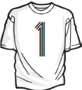
Introduction: Winning in a nutshell
What is 5-a-side?
There are many variants of small-sided football, and all will be referred to with the occasionally inaccurate term ‘5-a-side’ throughout this book. The classic form of the game, if there is one, is described in Chapter 2. Ultimately, the rules of football/soccer apply with a few tweaks. You have five players on each team, you play in outdoor cages with boards at the side and back that you can play the ball off without it going out of bounds, and the goalie is the only player allowed in the demarcated goal area (or D as it’s called owing to its semicircular shape). In some versions any one of these tenets can be untrue. I have recently started playing 5-a-side indoors with a side-wall off which you can kick the ball, but an out-of-play zone behind the goal, resulting in corners and goal kicks. On larger 5-a-side pitches, and in many friendly games depending on numbers who show up, the game can be 6-a-side or 7-a-side, and there may be no walls at all. In the UK, the FA-sanctioned variant ‘minifootball’ has no goalie-only area. The book will generally assume the classic version as played by most social 5-a-side leagues and tournaments, but will refer to the others when pertinent.
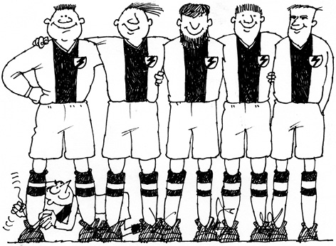
How to win at 5-a-side
So how do you win at 5-a-side? Let me get the two easy answers out of the way. 1) Have the better team: a team full of faster, stronger, more skilful, more athletic and fitter players who are just generally better at the game. 2) Score more goals than you concede.
Book finished. Thanks for the money.
If only. Easy is good, but real solutions are never so simple. The facetious answers above only address the abstract question, not the real world of the team facing you across the halfway line. The truth is you have your squad, and it is what it is. The question most 5-a-side players really want answered is: how do we beat today’s opposition? If you turn up to play and the team you’re facing resembles the team from the first answer – fitter, stronger, taller and with better haircuts – how do you win that game? Is it possible? This is the job that this book takes on. How to beat a team that on paper you should lose to, and – the flipside – how not to allow a team worse than you to squeak a win. Maybe you will never beat Handsome Haircut Utd, but you can be smart about it, control the controllables and do everything in your team’s power to make it as hard for them as possible.
Five-a-side games are short and, to be frank, a little random. If you can just smuggle in a few lucky goals, who knows how things might end up. Any team can be beaten, and, within reason, any team can beat another. If you go in believing you can win, this is half the battle. The stupid half perhaps, but it really helps. (We’ll discuss how to bend your mind for the cause later on in Chapter 7.) The remaining 50 per cent, however, is a little more complex.
Nevertheless this is where facetious answer number two comes in – score more goals than the opposition.
Understand, organize, destroy
To win at 5-a-side you have to understand the game, and this involves breaking it down into its elements. If you have a team strategy that takes in every element, a strategy you can all understand and work together in honing, you will be better equipped than most teams. What are these elements? They come in four categories:
1. possession-related elements (phases of play)
2. field-related elements (space)
3. role-related elements (tactics)
4. skill-related elements (technique)
One of the key mistakes in 5-a-side is squashing roles and positioning into one, without considering the phases of play. For example, ‘Let’s play with two up front and two at the back.’ How does this really pan out? And what does it mean over the course of the game? Talking about formations in 11-a-side is a useful way to bring the many roles and phases of the game into one intelligible whole. We all know that no shape is static, and when the left back ‘bombs on’ he doesn’t suddenly become a forward, or when forming a wall for a free kick, the team hasn’t suddenly changed formation. The 4-4-2s and 3-1-2-4s are simplifications that are useful, useful for the players and especially for our armchair punditry. But this simplification isn’t necessary in 5-a-side. When in possession you can have two men further up and two behind, sure, but in defence your shape will change to counter the movement of the opposition, and it’s helpful to consider that and have a strategy for both. That is, a strategy for both attack and defence in terms of roles and in terms of positioning (which differ).
Let’s take each of the element groups in turn.
Possession-related elements (phases of play)
There is more to a game than attack and defence. These are two very important phases of play, certainly. But look a little closer. There are periods during every game when no one team has the ball under control. Possession is a continuum:
- the other team may have the ball under control (defence)
- the other team may be trying to get the ball under control (transition)
- the ball may be loose (broken play)
- your team may be trying to get the ball under control (transition)
- your team may have the ball under control (attack)
And, being a continuum, there are points in between. It’s important to note straight off the bat that the middle three bullet points show the phases where teams are most vulnerable to errors. That is to say, if you can be smarter than the opposition in these phases, you can craft a distinct advantage. In the style of play I will advocate most strongly, transitioning smartly from defence to attack is key. In a nutshell, get the ball fully under control before trying to launch into attack. The other transition, from attack to defence, is the mark of a truly organized team. Knowing your roles in the transition and clearly communicating will make it simpler (see Chapter 3 on defence).
There are other phases of play worth considering in terms of an organized strategy:
- when a free kick or penalty has been awarded to you
- when a free kick or penalty has been awarded to the opposition
- when the ball leaves the field of play
- when making a substitution
- half-time
For instance, if someone has kicked the ball over the fence (and it has to be retrieved before play can continue), you might quickly send a substitute to get it, who then breaks into a slow walk while the rest of you grab a breather. Or you may immediately form a huddle to confirm your strategy and identify what, if anything, needs changing. The swiftness with which you react to each change in the phase of play will always be an advantage. Taking a free kick before the opposition are set, and knowing what you are doing with it, is 1000 times better than an argument over who is taking it while someone else squats down for a rest.
Knowing the phases of play and your team’s strategy for them is the bedrock of team organization.
Field-related elements (space)
Professional goalkeeping coach Alex Welsh told me: ‘The game is all about space, creating space in attack, and denying space in defence.’ He was talking about 11-a-side, and while I have a feeling it’s not quite as true for the small-sided game (and it’s certainly not as complex here), space is crucial in terms of having the (right) space to shoot, and in denying the same opportunity for the opposition.
In terms of spaces on the field, I think it’s helpful to think of the pitch in thirds, both widthways and lengthways. That is, you have the defensive third, the midfield and the attacking third, and widthways the left wing, central strip and right wing. Added to these nine spatial zones are the two goalkeeping areas, which, in many forms of the game, no outfield player can enter (see Figure 1.1).
I refer to the zone in the central strip of the defensive third as the ‘death star’. This is the area that needs the most serious defending, as it is the simplest zone to score from. The reverse is also true. In attack you want to fashion space for a player in your opposition’s death star and get the ball to them. You can score from other zones, but it is often a waste of an attempt to do so. I think it’s a good policy to dissuade any shots outside the final third, and any shots from too far out on the wing. Often after a pointless shot, the player will say: ‘there was no other option’ … I had no support’. Occasionally this is fair, but if there’s no good pass on to a free player near the death star zone and no path to dribble there yourself, it’s generally better to work the ball back, regroup and probe again.
The central strip of the midfield is a great area in which to have control of the ball. I call having the ball here ‘malicious possession’. You have options all around, and the opposition can’t cover all bases. Also as mentioned, when just a little forward of this point a shot on goal beckons.
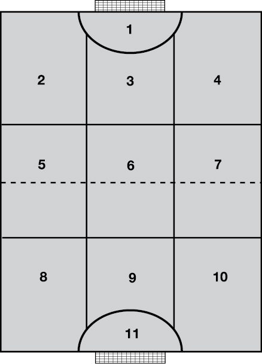
Figure 1.1 The eleven zones of 5-a-side
The opposite of the malicious possession of this central zone, having control of the ball on the wings and the defensive third (or with the goalie), I refer to as ‘sterile possession’ in ‘sterile space’. If the opposition have the ball here you can’t relax per se, but you are under less immediate threat. It is helpful to use these zones to transition the ball into full control. If you have stretched a foot to a loose ball, or made a tackle, your first thought should be to get the ball safe. By this I generally mean shielding the ball towards your own goal and passing back to an unmarked player or the keeper. Passing to the wing also works. Like you, your opposition will mark these sterile spaces less, or they will risk leaving themselves open down the middle.
The attacking game should be seen as a series of attempts to transition from loose play to a focused attack: moving the ball through the sterile spaces, moving through midfield into the attacking third, probing, passing to the man in space, trying to use the central strip, and ultimately working space for a shot.
When thinking about positions on the field, you should think in terms of this field space as it relates to player roles (see TEAM ROLES). For instance, in the role of ‘last man’ or centre back, the player should never stray from the central strip of the pitch, and should do everything in their power to block access to the area of the death star (see Figure 1.2). A ‘forward’ without the ball who is trying to get in space to receive a pass and shoot should never wait at the edge of the goalie’s area, but be a metre or two back from it so as to have room to manoeuvre (and shouldn’t linger anywhere too long as you will soon be marked out of the game; if the pass hasn’t come after a couple of seconds, move, get yourself somewhere more useful).
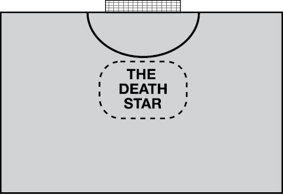
Figure 1.2 The death star
The final parts of the field it is important to mention are the sidewalls and backboards. Presuming your variant of 5-a-side allows the ball to be played off these boards, they can be extremely useful, and at the same time less predictable than many people imagine. Personally, I don’t recommend using the boards as part of a billiard-style pass. Too often, I’ve seen the player receiving the ball surprised by the pace and/or angle the ball comes off the wall. This goes especially for goalkeepers looking to use the board as part of a long pass to a player near the wing. Often the ball and player arrive together at the sidewall and the board makes it harder for them to get it under control. However, Nilesh Pandit who runs the Play Five A Side leagues in London doesn’t entirely agree on this point, and when asked if there were any tricks to how a team should move the ball from the defensive to the attacking third in 5-a-side, replied: ‘Use the sidewalls, they can act as an extra player.’
The sidewall is admittedly very useful for playing the one-two to yourself and the backboard can be used to cross the ball to a teammate in front of the D. Few players seem to do this with any control, and the better option is to pass backwards if you are down the blind alley of a wing and the cross is marked. However, with nothing else on, the pay-off for doing this correctly is so high that it is occasionally worth a wallop. You hit the ball hard into the backboard at an angle so that it bounces back right through the D and into the death star zone. I’ve even seen showboaters play to themselves this way, deliberately kicking the ball to the side of the goal, making the goalie move, then collecting the rebound and slotting it in.
The one-two to yourself
The sidewall is very useful for the one-two played to yourself when dribbling around a defender. Hit the ball into the wall and run past the outside of the defender. They will often be left flat-footed as you run past them and collect the ball, which has bounced around them on the other side. Only play this if the defender is facing you and try to get up some pace before you kick it to help leave them stranded. Kick the ball with a good amount of force too, so that when collecting it you can choose to move towards goal with the run of the ball or to continue down the wing.
Role-related elements (tactics)
The thing I think is crucial (but perhaps difficult) to accept when considering roles is that few players are particularly versatile. I don’t know if it’s a lack of nurture or nature, but some players will be lousy as the last man in defence, others will never call a one-two and a significant number will stand like a deer in headlights if put in goal. I mention the goalie, as this is the most idiosyncratic of the roles, and someone has to do it, no rejigging of team structure will take that away. At some point everyone has to take a shift in the net, but there will likely be one or two players better suited to it than others (see Chapter 5 on goalkeeping).
My point here is to embrace the lack of versatility and find roles and a structure for everyone on your team. Everybody can have a role that suits them and, playing in a manner that suits the preferred roles and attributes of your team will be the single-most important thing informing your tactics. You do need some versatility, and the best teams will play fluidly with positions interchanging as the flow of the game requires. At least one of your players will need to play a versatile role, and you will need to interchange as the phases of play change or as your teammates move around the pitch. Everyone has to defend in 5-a-side, and everyone has to have a role in the attack.
However, this is not under-8s where everyone chases the ball up and down the field in a huddle. Energy must be conserved. There will be times when you need to sprint and give everything to get to the ball first, stop a breakaway attack or to go past a wrong-footed defender at pace, and in order to draw on your reserves to do so, you have to have periods of ‘rest’. I put ‘rest’ in quote marks because you will still be on the pitch and you will likely still be moving: walking or jogging, or at the least primed, ready to move and on your toes (sub off if you need real rest). To ‘rest’ in this way you need to know your role and therefore what your teammates will be expecting from you. Am I expected to track back and cover during this transition to defence? Or should I jog towards the wing to receive the ball in sterile space if we win it back? Can I hand the player I’m marking over to another player or should I stick to them as they figure-eight all over the pitch?
If robots played 5-a-side, they would all be as versatile as each other and require no rest, and therefore require no set roles. We lack versatility and need rest, so we need roles. Depending on your system – which depends on the composition of your team – you will require some or all the roles described in the ‘team roles’ box (below) in varying quantities. Yes, this is more than five players, but multiple roles can squash into a single player. For example, you can be a left-sided defender when the opposition have the ball, but then a centrally positioned playmaker when in attack. Perversely, the last man position can be your role when in attack, but once in defence (and once your defence is set) you could be the hold-up player, the furthest man forward awaiting the clearance.
Team roles
The goalkeeper, whose role is more varied than you’d imagine, see Chapter 5.
The last man, the designated driver, who hangs back from the attack, and behind all opposition players, ready to snuff out any impending change of possession.
The box-to-box midfielder, the versatile one with monstrous fitness, who can join the attack, but who knows they must also get back and defend when possession transitions.
The wing back, given a specific side, left or right, this player is the harasser in defence, trying to dispossess any attacks on the wing and keeping the opposition in sterile space, but in attack is ready to pour forward and provide some width, and crucially ready to come central when the ball is on the other wing.
The mobile forward, attacking midfielder is probably a truer description, as this player will have to be part of the build-up, bringing the ball forward, but is less constrained in position, free to get into high attacking areas, drifting left, right and dropping back, all to lose markers and steal in for a shot.
The playmaker, as there’s not enough room on a 5-a-side pitch to distinguish between trequartistas and registas, there’s no need to get football hipster about it; this is essentially a quarterback, ever watchful for attacking movement from the central midfield, passing long or short as required, but always accurately.
The hold-up forward, whose role is primarily for transitional play, when in defence they await the turnover of possession, lying in a forward space ready to receive a clearance, either centrally or on the wing, and hold possession as the team transitions, before bringing supporting attackers into play, they then take on another role.
The centre back, generally also the ‘last man’, but this is the version of the role when in defence as opposed to when in attack, whose role is to hold the centre of defence and to marshal other defenders.
The double centre back bus, one role, two players, these two hold the centre of defence in a sustained attack, one always in the centre and the other to the side where the ball is, moving back to take up the central role when the ball is passed to the other side.
The Swiss-army knife, this player is more ready than others to fulfil a role vacated by others, either because someone has been substituted, or someone has left their position and this player is alert enough to cover the hole, they can dart to either wing, central midfield, last man or, in fact, goalkeeper.
Ratio of defenders to attackers
In my opinion on the weighting of roles, defence is not more important than attack, but it is equally important. This is not the natural mindset of the social 5-a-side player. When you set up a friendly with ten players you know, and no one is counting the score, no team sets up to defend. Everyone wants to score a glory goal. If playing to win, you need to compensate for this natural glory-hunter bias and focus on a vigilant defensive strategy. That is to say, your team should always be ready to transition from attack to defence. For instance, if you had a three-man attack that has just petered out right up at the opposition’s D and now three of their players are tearing towards your goal, someone really has to move to assist your last man (probably the box-to-box midfielder). A second player should set off at a jog towards the action, keeping central. Although an attack can happen very quickly and it can seem as though you are too far away to be of any help, even jogging near to the situation can put you in the right place in a few seconds. Their attack will probably stall and they’ll need to use more of the pitch, and by the time they have shepherded off your last man, you will have jogged close enough to be of use and maybe even intercept a loose pass. You need only one player waiting to attack, and even they should still be ready to mark a deep-lying attacker. Your three attackers should know which role they have: sprinter, jogger or lingerer. And all should be ready to be more fluid; if the designated sprinter is on the ground clutching their ankle, someone else needs to haul Astro.
If you don’t have a team with a box-to-box running type, you need to weigh up the risk of attacking with three players. It may be better to have both a last man and a deep-lying playmaker so that when the transition occurs, you have two at the back.
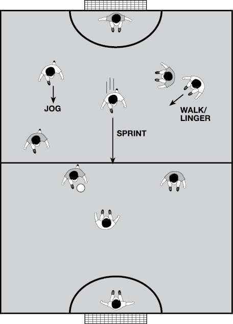
Figure 1.3 Stranded attackers transition to defence
Skill-related elements (technique)
Everyone has football skills. I’m not trying to be a Miss World contestant here spouting empty platitudes. I’m talking about really basic skills, e.g. kicking a ball. If you can’t do that, try darts, try Scrabble, both great games. Although I did once play with a guy who could honestly only knock the ball about two metres, but he was so fit and marked opposition players out of the game so doggedly, the fact he never actually touched the ball didn’t seem to matter.
I’ll start again. In the Lego box of football skills, everybody has a certain set of pieces. These pieces designate what each player can build. There are a few basic skills in 5-a-side without which the game is much harder. Trapping or controlling the ball well with a first touch, passing accurately and being able to shoot are the most obvious. But the more abstract skills of being good at dispossessing players, dribbling, or simply being difficult to tackle relate to athleticism, reflexes and are harder to acquire later in life. Some skills you either developed as a teenager or you will never have. Others can be learnt at any stage.
If I could think of five skills, which any player can learn at any age that would help a team win at 5-a-side, they would be:
- the ability to look up, either as receiving a ball, or with the ball at feet, to assess the next option
- the ability to ‘stand a player up’ (get goal-side, mark closely but don’t dive in), as opposed to trying to tackle them when they are coming towards you with the ball, and knowing when to do which (see Chapter 3 on defence and Standing up versus pressing for more)
- the ability to know when to pass backwards instead of barrelling forwards into a dead end
- the ability to get into an unmarked line of sight with your teammate who has the ball, and call for the pass
- positional awareness in defence relative to your teammates
None of these require fancy footwork or lightning reflexes. They are mental attributes, and relate to decision-making and observation. It is hard under the pressure and speed of a 5-a-side game to be calm enough to train your brain to counter old impulses, but it can be done. Some drills and practice sessions with your teammates will help. Often though, the only time you’ll be with a ball and your teammates is a couple of minutes before kick off and during the game. Yes, training drills and practice sessions are advisable, but it’s not the reality for most social players.
I think the best way to introduce and instil these necessary skills in yourself and your teammates has two phases. Phase one, talk about the technique pre-game. Whether in the ‘who’s available this week’ email or in a little pre-match team-talk, or both, it doesn’t matter. Get the ideas out there. If you think that a particular skill is lacking in a teammate or two, talk generally to everyone about that skill. ‘We have to make sure not to over-commit to a tackle when the opposition have the ball in front of goal. Just stand them up and stay in front of them, shepherd them towards the wing.’ Then phase two, call the skill loudly on the field: ‘Stand him up! Stay goal-side! Don’t let him cut inside!’ etc. It sounds bossy, but like all calling on the field, it can help players make choices. A player doesn’t have to take any option yelled at them by a teammate, but knowing that option is always helpful.
Talking up one idea at a time is probably wise when trying to up-skill your team: don’t overburden anyone’s mind all at once.
General footballing skill improves the more you play, but it doesn’t hurt to work on the basics. Shooting practice seems like the dumbest drill, but it’s one skill many players need to improve. Likewise simply passing the ball around before a game (two-touch, one touch, pass-and-move, whatever) will help improve accuracy and control.
Shooting
Shooting is a skill that it is helpful to deconstruct a little. What is it that makes some players good at goalscoring? I am not one of them so I’ve asked around. Power, placement, practice (technique) and poker face (lack of ‘telegraphing’ or alerting your opponent to what you’re about to do) seem to be the key factors. Decision-making is incredibly high up there too, but looking solely at the physical moment-of-shot, the four Ps cover it.
The four Ps of shooting
1. Power – hit the ball hard. That is, as hard as you can hit it while retaining control.
2. Placement – don’t look at the keeper, look at the space and aim for the centre of that space (generally the left- or right-hand side of the goal). It doesn’t hurt to pass the ball into the goal at medium pace if the space is wide enough.
3. Practice (technique) – take a touch first to get the ball under control and exactly where you want it. To keep the shot low, plant your leading foot so that your toes are just in front of the ball, and your body weight is over the ball as you strike it with the instep of your other foot. A ball on the half-volley or a few centimetres in the air, can be hit with the centre of your foot just above the toes. This will give maximum power and control. A sudden toe-poke can add the element of surprise, requiring no backlift from your shooting leg. Another option is the nutmeg. Often, a defender’s legs will be spread wide enough for the nutmeg shot, while simultaneously limiting the keeper’s view with their body. Try moving the ball across goal (to the left if you are left-footed, or to the right if right-footed) so that the defender’s legs have to move. Then clip the ball goalwards when the defender is at the widest stage of their stride.
4. Poker face – Hit the ball before anyone expects you to. Try not to be obvious: you know, pushing the ball forward, looking towards goal, and winding up that back leg for a shot. Practise shooting with less backlift, or disguising your wind-up. Feigning a pass is a good disguise, as is feigning a shot then moving the ball past a defender (who has planted their feet to block) and then shooting.
Power is obvious: the harder you hit the ball, the faster it travels, and, not only the quicker the goalkeeper will have to react to stop the shot, but the larger the surface area of their contact with the ball will have to be to stop or deflect its trajectory towards goal.
Power comes with a price. Using all your energy to wallop the ball restricts the amount of control you have over your technique. How many times have you seen a player absolutely wallop a ball only for it to sail a mile high of the goal? Too many. This happens for the most part when trying to shoot first time without taking a controlling touch. Unless you have fantastic technique, taking a touch before the shot is always smart. Sure, if you’re receiving a cross-field pass to one side of an open goal and no power is required to deflect the ball into the net, go ahead. Generally though, get your technique right before going for real power.
The final attribute many goalscorers have is speed. If you are first to the ball, or can outrun a defender in a breakaway, you are more likely to score. This kind of inbuilt, unimprovable attribute shouldn’t be lamented if you don’t possess it yourself. Some players just naturally have the speed, reflexes and the skill to shoot well, and if you have one or more players of this ilk on your team, deploy them accordingly. Look to play the assist to this player. And don’t let them take indirect free kicks, instead pass the free kick to them.
Goalkeeping
The goalkeeper requires all kinds of specific technique, and as I mention in Chapter 5 on goalkeeping, everyone will end up playing in nets at some point and it will definitely pay you to read that chapter. In a nutshell though:
- keep low
- always be ready with your hands palm out at your sides
- position yourself in the midline of the triangle between the ball/attacker and your two posts
- come forward to close down the angle in a one-on-one, and consider lying down in front of the attacker to block ground shots
- distribute the ball carefully, you do not want to lose possession right in front of your goal
- consider the long ball up the centre if and only if it is on: it can be the easiest route to a quick goal
Technical players
Finally on technique, it pays to know who on your team is what they call these days ‘a technical player’ (terrible jargon for a player with good technique). This isn’t necessarily the goalscorer (although their good technique will likely make them an accurate shot), as the most technical player will not necessarily be quick. Speed isn’t key for ball control. The kind of player who can receive the ball calmly while under pressure, move it away from a defender and pass it on accurately should be used, as much as possible, in the crowded middle of the pitch.
Other Elements
Finally, in order to win at 5-a-side let’s look at two other crucial factors of which you need to take stock. The referee is more important than you think. A goal is not something involving a ball going over a line between two posts and beneath a crossbar, it is something designated by a referee. A goal is only a goal if a ref calls it. Maybe the shot missed but from the ref’s angle it looked like it went in and it’s called a goal. Presuming no one changes the ref’s mind, that’s a goal.
The other factor crucial to any game is the time. Each half will last for a designated time. If you are winning or losing and time is running out, this affects your play.
I’m not advocating you con the ref. I mean fall to the ground, writhing and howling upon the slightest of contacts if you like, but you will look like a dipstick, and the ref will roll their eyes and mark you down as a crier of wolf. But you don’t need to help the opposition out either. If the ball hits your hand and the opposition yell, ‘handball!’ don’t stop playing. Play to the whistle at all times.
There are ways to influence the ref. The first rule should be to stay friendly. Don’t argue with their decisions, as it will just piss them off. No matter what they blow for, accept it and get in position quickly. Sometimes the ruling will seem ridiculously unjust. They have given a penalty when no penalty should’ve been given, or disallowed a goal that should’ve stood. You will react and that’s normal, but get over it quickly. Having voiced your disagreement with the ref, play on. You can say something like, ‘I hope you give us one of those, ref’, and then smile. Refs want to be fair, and it can weigh on their conscience if they make a decision they are not sure about, so it doesn’t hurt to make them wonder while remaining friendly.
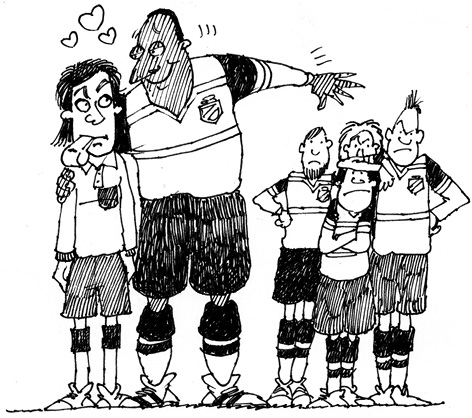
You’re also not going to get the 50-50 decisions if you stay quiet. Appeal. Call out if the goalie looks to be out of his area. The ref may have given the benefit of the doubt, but can feel obliged if you appeal. If someone kicks you, don’t go to the floor, call out: either ‘Ow!’ or ‘That’s a foul!’ anything. Let the ref know. I would advise against calling out ‘Ref!’ as an appeal. I don’t know why, but this annoys them.
The reverse goes for your own infringements. If you score a goal but your toe might’ve been in the area when you kicked the ball, immediately celebrate like it’s a fair goal; don’t look to the ref to verify it. If the ref was unsure, he can be swayed by your confidence and not want to stick his oar in. Refs like goals too, remember.
Playing to the whistle also involves never stopping, even if the opposition clearly infringe the rules. Appeal while playing on. And don’t be tempted to stop out of peer pressure, whether players in the other team or even your own team think a clear foul has been committed. If the ref hasn’t blown for it, PLAY ON. And call it loudly while running at their goal, even if their goalie has gone to get a drink out of his bag: ‘PLAY ON!’
Finally, refs come in a few varieties. You will probably see the same refs over and over if your team play at the same venue regularly. Get to know their style. Some refs will be on the phone, thumb-swiping through Tinder during the match and miss everything; others will blow for every little contact. Play what’s put in front of you. If the ref is blowing for any contact on a player, stop doing it. If they aren’t blowing for any of the opposition’s wrestling moves, don’t let them bully you off the ball, fight back. (Don’t actually fight, the lawyers are telling me to say, but you know what I mean.)
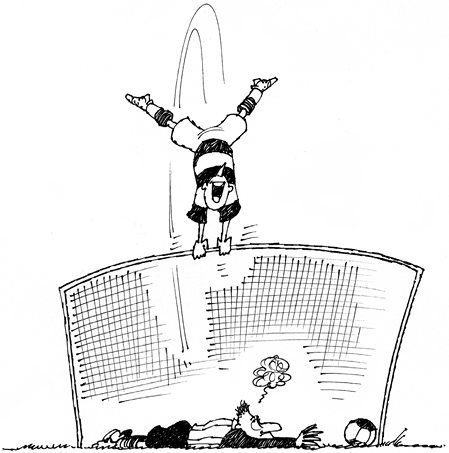
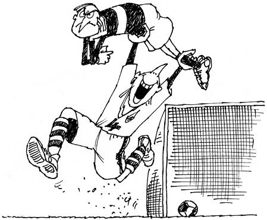
Generally the clock should be ignored. In attack, you should build play, concentrating on retaining possession. In defence you can allow the other team to hold the ball without being sucked needlessly into sterile space. Yes, most of the game will be rapid, the final phases of attacks will be quick when they come, and most defending will be dogged and continuous; none of this implies frantic play. Until the last three or so minutes, your only thought of time should be about the apportioning of your fitness and keeping the subs rolling at regular intervals.
When the game truly is winding down, things change a little. It’s easy to lose focus at the end of the game with your body tiring and the end seemingly in sight, and the reverse is true, your opponents may lose focus (see focus). But like board and card games, you have to get your endgame right in 5-a-side. Here are six examples of game-winning actions in the dying minutes.
1. Time-wasting
If you are winning, there is no shame in winding the clock down. This applies whether the team you’re playing is terrible or white-hot good. If they really should be winning, and you’re up only one goal, wind those minutes down. If you should be winning by more but you’re only just up over a team of bumblers, play it smart, wind the clock down.
Winding the clock down can involve:
- Keeping the ball in your own half and knocking it about, choosing only safe passes
- Passing triangles between the keeper and two other players (you generally can’t just pass back to the keeper if the keeper has passed it to you in 5-a-side rules). This technique is a real humdinger if you can master it
- The keeper holding the ball until the ref yells, ‘Use it!’
- Shepherding the ball in the corner
- Deliberating kicking the ball into ‘Row Z’ (over the fence, so that someone has to retrieve it). Refs don’t tend to add on time in 5-a-side; another game is scheduled straight afterwards
This may seem not in the spirit of fair play and gentlemanly conduct and 1920s moustaches. But I’ve seen very good teams do this and win because of it. If you are winning, you don’t need to score again, you simply need to stop the other team from (having the ball and) scoring.
The only successful way I’ve found to combat this kind of play is to appeal to the pride of the opposition. Pride always comes before a balls-up. I’ve said, ‘You don’t want to win like this do you?’ And to show they are better than that, they try and attack. ‘That’s pride,’ as Marsellus Wallace says in Pulp Fiction, ‘[messing] with you.’ But instead be proud of your good sense, play the percentages and see the game out.
2. Fight
If the game is on a knife-edge, the scores are level or you need one more goal to equalize, or if you’re losing horribly but you just want to end the game well, you’re going to need to push it in the last minutes. Keeping back any reserve of fitness no longer matters, you need to fight, to want it more.
I remember the first time I heard a teammate yell out, ‘Come on! Fight for it! We can win this!’ Chills. I recommend doing the same. You can be dispassionate and wry after the game, but a bit of passion in the last minutes goes a long way. Fight to be first to the ball; chase back hard if you’re dispossessed; stay alert and keep playing to win.
3. Go all-out
If it’s the last minute and you need a goal to equalize (or a goal to win if equalizing means you miss out on promotion or whatever), it is now finally OK to forsake having a sensible last man back. Everyone can join in the attack (if it seems like it will help). Throw everything at getting that goal, regardless of the risk of a breakaway goal. It’s time for high-risk, high-gain strategies. You have nothing to lose. If there are just seconds left, for cripes’ sake just SHOOT.
4. Send the goalie forward
By this I don’t mean have no goalkeeper, the rules usually won’t allow that, but if you have a specialist keeper who has been in nets for the whole game, he is likely to have a few bursts of pace left in him and should have a run out in the outfield. Swap whoever is the most knackered with the keeper (presuming the tired player isn’t totally awful in goal) and get the goalie running, whether just dragging the opposition’s defence around or making runs into useful space in attack, or dribbling at pace. The opposition will be tired, and this kind of last-ditch use of your resources can be a winning move.
5. Know the time
The place I’m currently playing has a big clock counting down the time left in the half. If you have one of these, don’t forget to glance up at it when you can. The goalie or substitute will have a chance to do this and should relay the remaining time to everyone else if within the last three minutes. Generally, of course, you won’t have a giant clock, and instead you’ll need to ask the ref. A good ref will let everyone know when there are five minutes and two minutes remaining, but if the ref isn’t saying anything, you have to ask. A good way for the goalie to wind the clock down is to ask the ref how much time is left while holding the ball.
6. Substitutions
With social 5-a-side you really want to be fair and give everyone the same amount of game time. No one wants to come off if they’re not exhausted, but it is only sensible to keep everyone as fresh as possible. Get that first sub off in the first three minutes. A team of six should all sub off at least twice, perhaps three times. In a 40-minute game, this means a sub every three minutes or so.
Summary
Organize your team depending on their talents. Drill everyone to know what to do when you transition from attack to defence and vice versa. Counterbalance the natural desire to play high and attack for glory with a constant sense of vigilance in defence. Hold the ball in sterile space before working it boldly into midfield while trying to open space for your best attacker in the death star in front of the opposition’s goal. Defend your own death star area at all costs, physically blocking entry to this zone. Butter up the ref, and wind down the final minutes if you’re ahead. Compete with passion for the ball, but always remember to look up, keep a cool head and pass to the player in space. Stay positive and confident that you are going to win, aiming to score the next goal no matter what the score is. You will still sometimes lose.
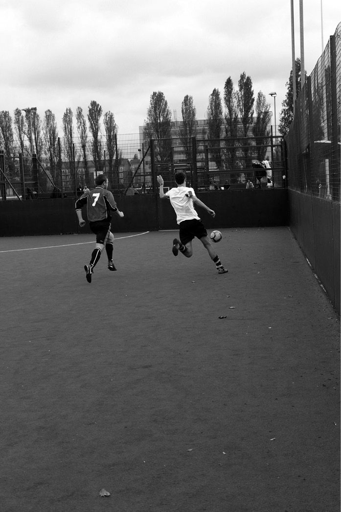
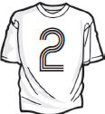
The Rules of ‘Classic’ 5-a-side
One set to rule them all
There will always be forces of order in this world, but what’s wrong with a little chaos? I like the fact that the rules of 5-a-side vary from venue to venue, from country to country and, occasionally, from one side of the pitch to the other. It’s the social game we’re interested in here and not an international competition with enough small print to put EU financial regulations to shame. Until some busybody forces everyone to play the same way (on the same size pitches), we’re going to have a bunch of different rules, and so what? It is what it is. Better that we just ask what the particular rules are before playing at a new venue, and then get on with it.
I present here the rules from ‘playfiveaside.com’ in London, who run a few leagues and tournaments. To me they pretty much represent the classic game of 5-a-side. I especially like how they begin:
5-a-Side Rules
Please note that rules may vary across divisions and leagues; it is advised you ask the referee if you are unsure of any particular rules that apply for the match you are about to play.
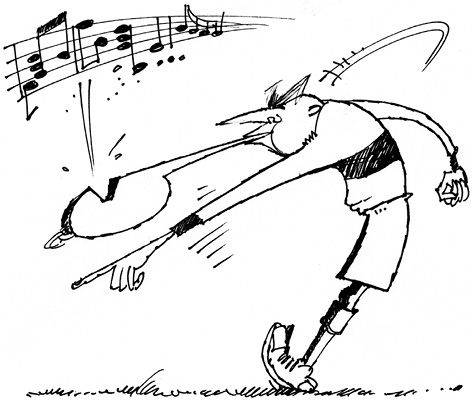
The D box
No player aside from the goalkeeper is allowed into their goalie area (D box). If a defender enters the area to block a goal or shot, a penalty is awarded. If an attacker enters the area to attempt to score it will simply be goalie’s ball or advantage played. If a goalie handles outside the area the result is a penalty.
The goalkeeper
The goalie can only roll or pass the ball out along the ground.
Pass-backs
Pass-backs during normal play are allowed; however, if a goalkeeper is in possession and passes to a defender who then passes back to the keeper immediately, this is seen as time-wasting and possession will switch to the other team in the form of an indirect free kick from the edge of the D box.
Other rules
You may shoot from kick off.
There are no out-of-bounds within cages. If you are playing in an un-caged league, you restart play with a roll-in or kick-in (the ball cannot go above waist level). When taking corners, again a roll-in or kick-in is fine.
The ball can go over head-height in normal play; only the goalkeeper cannot go this high (see above).
Subs
During the game the team can roll their substitutes. All players that are part of the team that are not playing on the pitch (substitutes) will have to wait outside the cages/on the side of the pitch and, if a substitution is called, the substituted player must step off the pitch and the new player must step on the pitch. PLAY WILL NOT STOP. Rotations are allowed to continue throughout the game.
Yes. That’s the rules of 5-a-side in under 300 words. Brilliant. The unspoken rules, of course, are those that are in common with the 11-a-side game. They are:
- no handling, unless you’re the goalkeeper and in the D
- no kicking, tripping, pushing, holding, spitting at or jumping on other players, or general ‘dangerous play’
- barging is only allowed when shoulder to shoulder
- you can make contact with another player in a tackle if you have touched the ball first, but the other way around is a no-no
- no impeding an opponent, which means deliberately getting in the way of someone trying to get the ball when you yourself are not in control of the ball or have the ball within ‘playing distance’
- no acts of unsporting behaviour: making confusing calls like ‘My ball!’ counts, as does arguing with the ref, ‘deceit’ (ha!) and screaming to put someone off
(These rules are paraphrased from The Soccer Referee’s Manual, 6th ed., David Ager.)
I won’t bore you with the other basics, such as that you use a round ball and that the winner of a game is the team (of two teams) who scores more goals, being lawful incidents of knocking the aforementioned ball through and across the un-aforementioned goalmouth and fully over the line.
No offside
Aside from the number of players, the size of the pitch, the walls and the rules concerning the goalkeeper, there is only one major difference between 5-a-side rules and the bigger game. There is no offside. This is a big thing and it makes the game more open in attack, and more hazardous in defence – all in all, more fun.
In practice it means the player you designate free-roaming on your team can drift behind the defence and ‘wait’ for the ball. This is not a standing-still kind of waiting, of course, the player drifts to remain in space and in line of sight for a pass.
Without an offside trap your defence must vigilantly watch for any attacker attempting to push beyond them in the hopes of an easy goal. A defender tasked with marking this interloper must either make every effort to remain goal-side or, if the defender is confident in their abilities, simply keep tabs on the player’s position, allowing them in sterile space, but staying close enough to block off any pass to them, and perhaps moving goal-side of them only when they are dangerously central.
In a recent game I watched the ref disallow a goal for offside. The players objected, perplexed, but the decision remained. This just reiterates the words on reffing in the previous chapter. Ultimately, you are playing the ref’s version of the rules, and it pays to cotton on quick.
The field of play
Five-a-side pitches come in a true variety of sizes. The game as I discuss it in the next two chapters on defence, transition and attack presumes a fairly sizeable pitch, perhaps 30×40 metres (100×130 feet). This width gives more of a ‘wing’ than, for instance, in indoor varieties where the court can be more like 18×30 metres (60×100 feet), just a little bigger than a basketball court. In this smaller playing area, a shot can come from anywhere and there is less sterile space. The largest 5-a-side playing area I’ve been on was something like 28×50 metres (90×165 feet). That’s still only half the size of an 11-a-side pitch but it was totally exhausting with only five players.
Variations
The rules quoted above are mostly typical, but it’s worth noting a handful of variations and specifics not mentioned:
Ball over head (or shoulder) height
Although the Play Five a Side rules quoted above allow for high balls, the fact they mention it tells you something. It is probably more common for varieties of 5-a-side to ban kicking the ball over head-height, or in fact over shoulder-height, so consider this as a classic 5-a-side rule. It is a more free-flowing game without this rule perhaps, but fewer balls get lost.
The rules generally stipulate that if a deflection (as opposed to a kick) goes over shoulder height, the game plays on.
Headers
Following on from the rule above, in varieties where the ball can’t go high, headers are generally outlawed (even if committed while lying down). The sucker punch with this rule is that since high deflections are allowed, you have to inhibit your instinct to head the ball as it comes down.
Playing the ball on the deck
In many varieties you are not allowed to kick the ball if you are off your feet, that is, sitting, kneeling or lying on the ground (unless you are the goalkeeper). In other versions, you are simply not allowed to tackle when you are off your feet.
Tackles from behind
Some varieties ban all tackles from behind.
Penalties
Most varieties are not quite so harsh in awarding penalties as the rules above and most infringements are punished by indirect free kicks. A penalty is such a goalscoring opportunity that it really pays to know which infringements are met with this punishment in the rules you are playing, so as to avoid them at all costs.
Also important to note for penalties is that the player taking the penalty can generally only take one step before kicking it. Practise this. When the pressure is on, this one step can seem weird and uncomfortable.
Two-metre rule
Generally players defending any sort of free kick must be two metres from the ball.
Ball hits ref
If the ball hits the ref, it can, depending on local rules:
- go back to the goalie of the team who last touched the ball
- go to that same team at the sideline where it hit the ref, or
- automatically be a drop ball contested by a player from each team
Goal area infringement
Often the decision on infringement of trespassing into the goal area (or out of it for the goalie) is left up to the ref. They are more likely to be harsh on a defender stepping in or a goalie stepping out. An attacker running in but not touching the ball is generally ignored. My pet peeve is with refs who don’t penalize an attacker who runs through the D, using it as a shortcut to get to a pass on the other side of the area. This to me is committing an infringement to gain an advantage, but some refs take a letter of the law approach, and some rules only punish an attacker who plays the ball in the area. Be aware of your local vagaries.
Hands off the wall
I remember a ref repeating calling ‘Hands off!’ to me as I was keeping the ball away from a defender against the sidewall, and presumed she was talking to the defender who was pawing at me. In fact, it was me who was penalized, for holding onto the wall. It’s second-nature to grab whatever support is at hand to help balance and orient yourself, so if this is verboten in your rulebook, make a conscious effort to keep your hands off.
Sin bin
In some rules the ref can ‘sin bin’ a player who is persistently fouling or who has committed a grievous enough foul, or who just needs to calm down. This player goes off without being subbed until the ref waves them back on. Sometimes the ref can be a little kinder and just enforce the substitution of the player instead.
Corners
For 5-a-side games either played on an outdoor field with no walls, or in courts with sidewalls but no backboard, corners are given if a defender is the last to touch the ball on its way over the endline. These work just like an indirect free kick but from the corner, and likewise involve the two-metre rule (see above).
‘Throw ins’
When the ball goes out of the sides of the playing area, generally over the cage fences, or equivalent for indoor pitches, the local rules will specify one of two options. Either the ball goes directly to the goalkeeper on the opposite team to the one who kicked it last, or it is an indirect free kick for that team from the sideline at the point where the ball went out.
Kick offs after a goal is scored
It is very common in 5-a-side for the kick off after a goal has been scored to occur not at the centre spot on the halfway line, but with the goalkeeper. If this is your rule, kick off quickly to take advantage of the attackers’ celebrations. The centre spot is also used in other varieties, which at least gives you a brief rest.
The roll-out
Often the ball is given to the keeper for a restart after a goal, or as a ‘throw-in’ (see above), or after an infringement near the goal by the opposing team. On these occasions, it is generally fine that the goalie rolls the ball out as opposed to kicking it.
Local rules can either be permissive or harsh on the goalie’s release of the ball. In some varieties the keeper must always roll the ball out underarm and is banned from kicking it into the outfield or slinging it sideways, even if it stays under shoulder-/head-height. In other variations only the head-height rule matters.
Summary
Hopefully you are now thoroughly bamboozled. But if you’ve taken anything from this it’s to read the rules online for your respective venue or simply to ask your teammates before you take to the field. In fact, this is almost a ritual when any new player from a different venue joins your team, or is pulled in as a ringer to make up the numbers. They’ll ask what the local rules are, and there’s your 45-minute icebreaker.
The rules vary, but basically it’s as you were with 11-a-side, excluding some arcane stuff on the goal area and no offsides.
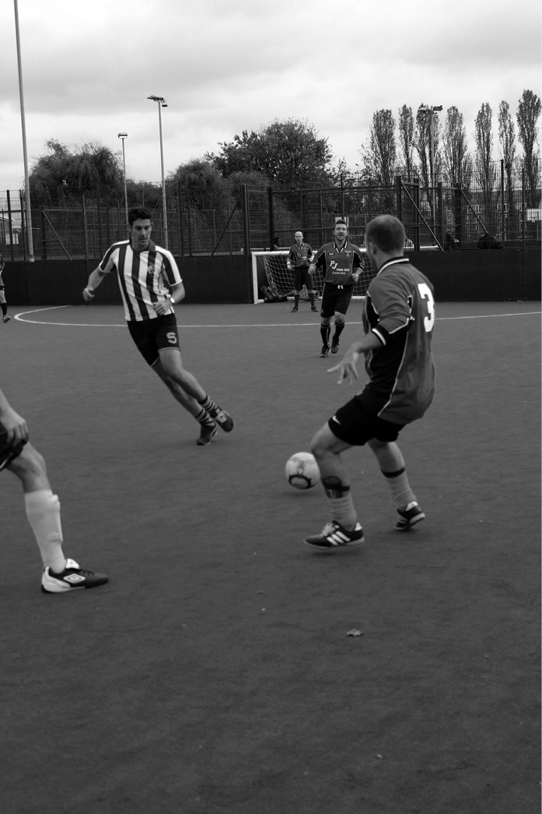
Defence and transition
Goals win games, but not the kind you think. Goals conceded win the game for the opposition. In my experience of 5-a-side, a good defence is what marks out the exceptional teams from the very good teams (and the averagely good teams from the terrible). Of course, it helps to have a player on your side with a knack for goalscoring. But the goals will come in the chaos and ridiculousness of 5-a-side and if you can nullify the attacking threat from your opponents, you will win the game.
Defending: The Basics
Before getting into the specifics I think there are some basic tenets of good defending which, even expressed as mere bullet points, will improve your defence. If these key elements are in your game, you will instantly be harder to break down:
- always have a player back when in attack
- this last player should be central (when in attack)
- as soon as possession is conceded, everyone becomes a defender
- stay goal-side of your marker
- track the run of your marker once they release the ball
- keep talking:
- tell less defensive-minded players where to move or who to mark
- call any change of marker
- listen
- do not over-commit to a tackle in the death star zone
- instead, keep your body between the player and a shot on goal (but be ready to steal the ball if they take a loose touch)
- stay on your toes when marking and be ready to move in any direction
- mark from the centre outwards, forcing the opposition into sterile space
- use your body position to direct the ball carrier towards the wing, away from the centre
- isolate the ball carrier on the wing:
- mark their potential passes
- block their path towards the centre
- press the ball
- consider priorities of threat: forget your own marker if you are closest to a direct threat on goal from an unmarked player
- transition quickly; mark up!
Positions, formations, roles and tactics
As I’ve said it’s easy to confuse these terms. Positions and formations add up to one coherent thing, and roles and tactics add up to another (complementary) thing. There is too much concentration on ‘formations’ in 5-a-side in my opinion. But in defence, at least, there is a lot of sense in forming a unit in terms of your team’s shape on the field. That said, a lot of this comes down to a basic defensive strategy. Do you opt for one-to-one marking or territorial marking?
One-to-one marking
In one-to-one marking every player in your team marks a player from the opposition whenever they have possession of the ball. In many ways, if your team has the fitness for it, this can be the best defensive strategy. Not necessarily because it is the smartest method or has the most finesse in turning possession over, but because it is conceptually simple. All your players will know what to do. Some players may object to its blunt-instrument approach if they’ve played a lot of 11-a-side, and will be keen to bring in a more sophisticated strategy. If they can articulate that approach in a way everyone on your team understands, then fine. But here’s the rub. To be effective, any defensive strategy requires every member of your team to be on the same page. If two of you are marking one-to-one and two of you aren’t, then the former two are wasting a lot of energy for nothing. If you think one-to-one marking is the style that fits your team, then I would suggest you try to appeal to your ‘sophisticated’ players’ pragmatism: ‘Let’s keep it simple for everybody else’s sake and have one coherent strategy we all understand.’
Nilesh Pandit who runs Play Five A Side in London agrees: ‘Man-marking in my opinion is the best technique to use to defend as you don’t give your opponent any space. Five-a-side is much smaller and faster so every space is potentially a goalscoring space.’
Marking off the ball
Marking well when one-to-one involves a bit of cat and mouse. Your job when marking a player off the ball is threefold:
1. discourage the ball carrier from passing to your player
2. be ready to contest for the ball if it is passed to your marker
3. be ready to react if your marker receives the ball cleanly, dropping off, staying goal-side and not allowing them to catch you flat-footed or turn you
So for the first point, the closer you are to your marker the easier it is to discourage a pass. No one wants to pass to a teammate who has a marker right beside them. But if they receive an accurate pass to the side you can’t block, you need to drop off, even just a little as your role has changed and you are no longer focused on dissuading the pass.
Figure 3.1 shows a defender in a great position to discourage a pass. The player in stripes (Luke) is in no position to accept a pass from the wing, while the other player, while remaining goal-side, even has an elbow against Luke, restricting his movement. Refs will generally allow this kind of static contact as long as you don’t move only to block someone’s path to the ball.
While being up in someone’s grill will discourage a pass, it is not always necessary or positionally smart. You can discourage a pass by being near enough to press for the ball if your mark does receive it, but not so near as to leave a hole into the centre if they were to skip past you. This is to say, it isn’t necessary to over-mark the sterile spaces. Every player marking one-to-one will still have their mark, but you want to encourage the opposition to pass to useless and non-threatening positions (see Figure 3.2, the team are marking one-to-one in both diagrams).
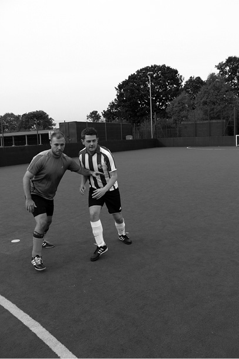
Figure 3.1 Discouraging a pass
Marking the ball carrier
If the player you are marking has the ball your attitude towards them will depend on where on the field they are. Presuming the rest of your team are marking up, you can consider pressing the ball, that is, trying to tackle and thus forcing the player to act (pass forward, pass back, move away, take you on) more quickly than they would want to. You can also consider steering them away from the centre of the field towards the wings. Or you can consider standing them up, especially if they are running centrally towards goal.
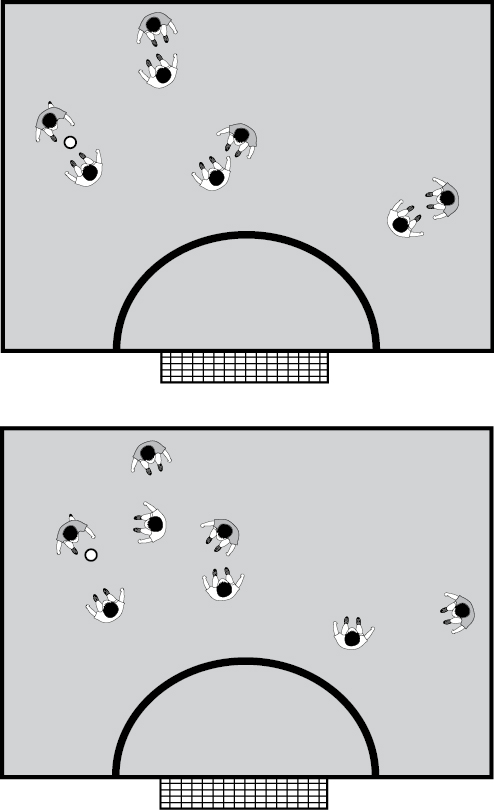
Figure 3.2 Marking one-to-one
In my opinion there is no harm in pressing for the ball if the ball carrier has it in the opposition’s defensive third. Yes, they may get it past you and you’ll have to chase them back, but if you do manage to win the ball or force them to cede possession through a loose pass, the reward is high.
If the player is dribbling and trying to move centrally, your priorities should be to:
- position your body so as to direct them towards the wing (see Figure 3.3)
- move backwards with them blocking their route towards goal
- be ready to steal the ball from any loose touch
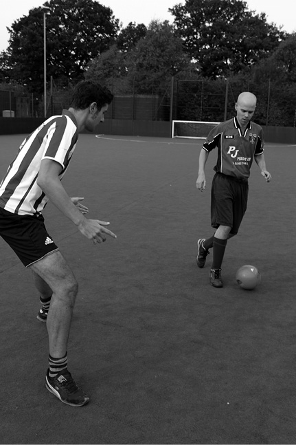
Figure 3.3 Angling your body position directs an attacker toward the wing
Once the ball carrier has the ball against the sidewall you should again press them as they have fewer directions to escape. You must continue to block off their route into the centre of the field, however, essentially forcing them to move into the corner or back the way they came.
Often a player you are marking will come to a stop, neither heading towards the wing nor dribbling forwards (nor passing). This can be a trap. If you dash in all gung ho they can pass and then move past you. I recommend a body position with your centre of gravity behind you, almost leaning back and extending your tackling foot towards them. This way, as you advance you are equally ready to dash back the way you came. You can also feign the movement in to see their reaction, and sometimes a catlike slow advance followed by a quick pounce can win you the ball.
Territorial marking
You can understand what I’m calling ‘territorial marking’ in two ways, which are basically distinct. If I called it zonal marking, you’d understand the ‘controversial’ (though not actually controversial) marking system at 11-a-side corners, where defenders all have a zone for which they are responsible, not allowing any attacker in that zone to gain access to the incoming corner, and marking anyone off the ball who passes through their zone. Forget about that, it’s interesting and complex but not what I’m talking about. The two ways of understanding territorial marking are ‘marking the spaces’ and ‘holding formation’.
Just as I had hoped when asking experts about 5-a-side, Ian Postlethwaite of Football Five5 in Melbourne had the opposite opinion from Nilesh Pandit on what is the best system of marking. I asked if teams should mark one-to-one or mark the spaces. Ian replied: ‘Mark the spaces, cut the lines by movements across spaces – don’t stay still too long. Due to the small area even a marked player still has three sides to receive and play the ball from. It’s very easy to turn a player who is too close.’
Marking the spaces
This is conceptually more difficult for some players, those with tunnel vision especially, and everyone on the team needs to be on board for it to work. This style of defence is based on interception. While you still keep the other team goal-side and press them when appropriate, your mind is set on marking the passes. That is, you look (and communicate) where the other team are and position yourself to ‘cut the lines’ between them, depriving them of passing opportunities.
Diamond formation
A more formal variant of marking the spaces is to have an actual shape that you stick to as a team. The diamond, the Y, the square and the T have been proposed on the internet, though beyond YouTube videos I’m not sure I’ve seen many of them consistently imposed. For the diamond you are essentially crowding out the centre of the field. The central head of the diamond presses central ball carriers and the side points press passes to the wing. The real strength of this and any shape you form on the field is in moving as a unit. If the ball moves left and the head of the diamond hunts it there, the rest of the diamond behind shuffles across, keeping the distances close and leaving no hole to pass through. The head of the diamond is also blocking any central passes to a high attacker (marked by the base of the diamond). If the opposition do break through they are trapped in the diamond, which delays them and marks out their passes until the head challenges the ball carrier again. Defenders hold their zones and places within the formation, even as the opposition move around them.
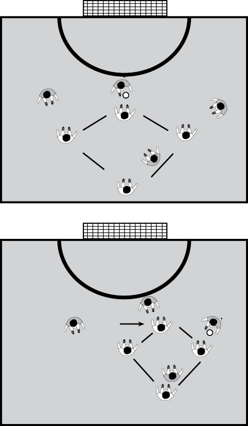
Figure 3.4 The diamond
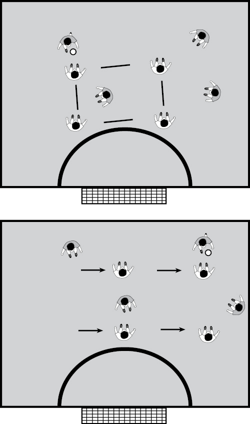
Figure 3.5 The square
Square formation
The same rationale follows for this shape, which is a formation many teams claim to stick to but they then get pulled around the pitch, marking one-to-one. To keep the square you have to keep shuffling left, right, back and forth as one, and exchanging markers when the opposition run across your lines. This takes communication and vigilance. The front two press the ball high. If it’s to the left of the field, the left-most player is pressing and the right-most player is central, with the shape similar behind, staying as compact as the opposition will allow you to be (i.e. not allowing them too much space or to be goal-side). If the ball is to the right, you form the mirror-image shape. This shape forces teams into the periphery of the field and one loose pass leaves you with two players in a great place to transition to attack.
Standing up versus pressing
I asked a few people how to defend against a player who is faster than you. I think Nilesh Pandit put it best by saying: ‘Try and be goal-side of them and stay two paces ahead.’ This is so critical that I want to reiterate the importance of standing players up as opposed to over-committing to a tackle. As I’ve said, it’s fine to press the ball and even risk a player getting past you if the opposition have the ball where they can’t hurt you or can’t escape you, that is, the sterile space near their own D and against the sidewall respectively. Press and press hard. However, what too many commentators call ‘standing off’ – ‘The defence are just standing off him!’ – and I call ‘standing up’ is the right option when you are marking a ball carrier in a dangerous area. In Figure 3.6 the defender marking the ball carrier is holding his ground, remaining in the way of any shot on goal and he’s on his toes ready to move in any direction. The other defender is discouraging the pass, but when it comes, as the second attacker drops off, he uses the space to stand up the second attacker’s path to goal (see Figure 3.7).
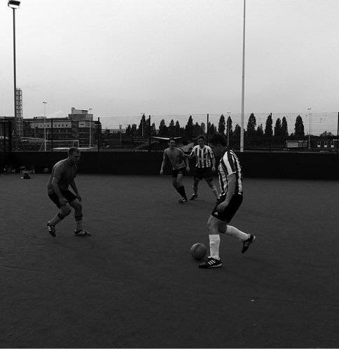
Figure 3.6 Standing up the ball carrier in a dangerous position
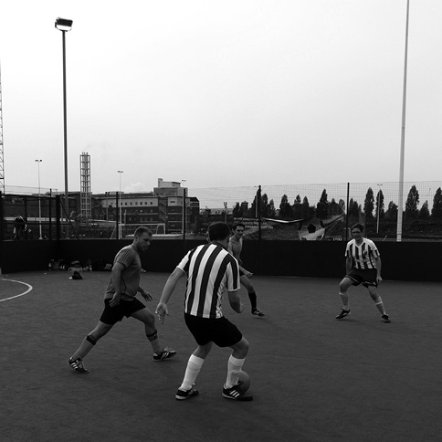
Figure 3.7 The second defender drops off
Gender bias
One thing I’ve deliberately not mentioned elsewhere in the book is that 5-a-side is often a mixed sport. I’ve tried (and often failed, forgive me) to keep it gender neutral, as the truths of 5-a-side are gender blind. People have varying degrees of experience and skill whether men, women or something wonderful in between. As much as I know this fact, intellectually, I still fall into the idiot trap of expecting women to be a bit gammy on the ball. Recently I came up against a team with a ‘lady footballer’ and without realizing it thanked our luck. She was probably a professional player because she wiped the floor with all of us. Genius passes, thundering tackles, nifty footwork and a burst of pace, together with a well-drilled sense of positioning and a shot that nearly broke my face. Nevertheless we kept trying to dribble around her, steadfast in our thinking that she can’t really be that good.
My only point here, other than to be wary of simpleton assumptions like my own, is that you can take advantage of other teams’ biases. In defence, especially if you have a mixed team, the opposition will try to target the women, and this is a mistake you can punish. Draw them to women who stand them up as they try to dribble and then block their shots, and watch their confidence wobble. Even if you have a player – male or female he notes patronizingly – who hasn’t played much football growing up, 5-a-side defence is about more about vigilance and fitness than ball control. Drill your players into marking tight off the ball, and standing players up when they have it: anyone can mark someone out of the game.
Marking style mash-ups
I suspect your team’s style of marking is a mash-up of all these components: one-to-one marking, a set role in a square or diamond, marking the passes, pressing, harrying, standing up. I think that’s a good thing, especially if you are aware of it, and know how to make it work for you. I would recommend you have some clear rules though. Teams need to defend as a group and the group’s mind needs to be in sync.
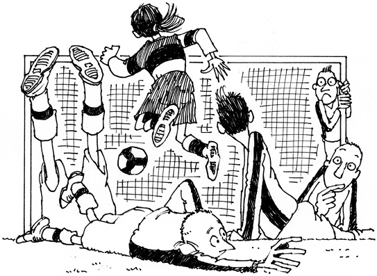
For example, my team tried a halfway-line rule in a few games. If the opposition had the ball in their own half, we wouldn’t rush to engage them or mark them (unless we were already there). As soon as the ball crossed the halfway line, that triggered the necessity of one-to-one marking. On a larger field and without a lot of speed (and maybe fitness) in the team, this saved energy while allowing the opposition the ball in sterile space. It also surprised them when we sprang to life as one.
For a team with more legs your rule might be the opposite: press the other team high when they have the ball in their own half, marking one-to-one, then form into a solid shape blocking access to the centre and shuffling as one as the ball moves left and right.
Positions: Last-player-back in central strip
The role of the last-player-back is essential both in attack and when transitioning to defence. Normally this is your most defensive-minded player who remains in the heart of defence when soaking up attacks. I distinguish it from the centre back role only because the two positions are needed at different moments in the game. If you think of the pitch in thirds, the last player back should try to stick to the central strip. Having this in mind stops them wandering wide and then leaving the door open on the other side. This player should be aware that if they gain possession of the ball they are still in ‘last player’ role and need to get it away without losing possession. However, they need have no such tentative approach when in defence. The mark of a good fit for this role is a player who charges forward past their marker and intercepts the pass. This move requires nerves of steel. Like a goalkeeper always ready for a shot, the last player must always be anticipating the through-ball and ready to pounce on it, safe in the knowledge that their forward motion will get them to the ball before the attacker side-on to the pass. You have to be judicious in which balls you go for, but go for them 100 per cent when you do go.
Positions: Centre back
This position requires defensive nous. It is not for players who over-commit to the tackle, but for those who can stand-up an attacker, anticipating their movements and watching the ball for the moment to strike. A good centre back will always be in front of the shot ready to block, forcing attackers to try and go around, thereby showing the ball for a tackle.
You really want a centre back with the kind of big personality that tells others who to mark, or where to stand, who helps keep the defensive shape and knows that marking out that death star area in front of your D is their main role. The centre back shepherds attackers away from this area and never lets them turn inside.
Under sustained pressure, two defenders form a parked bus either side of the centre back, blocking all access on goal and forcing attackers away from the centre and preferably backwards. Repelling, moving up to mark, then reforming into the bus.
Positions: Centre back bus
These comprise the back two pieces of the square formation. Essentially the centre back role is swapped between the two as the attackers move the ball left and right, with one player always covering the centre and the other defending the ball carrier at the left or right. Figure 3.9 at the end of this chapter shows for a drill for this position.
Knowing they’re there
When you are the last-player-back, often an attacker without the ball will try to drag you to the side or even into the corner. Remember the rule of the central strip. You don’t need to mark them tight in the sterile spaces. You simply need to know they’re there and – unless they’re in the corner – stay goal-side. If it comes to it and this player gets the ball, then you can confront them and block their path to goal. While they run in figure-eights trying to distract you and make a gap for their teammates you should conserve your energy and allow them to wander, all the while keeping tabs on where they are.
Positions: Wing backs
Whether or not you are trying to employ a diamond or some other shape, I think it’s important in your team’s strategy to assign a side of the field to at least two players when in defensive phases as well as in attack. A player should know it’s their responsibility to cover the right or the left.
The nature of this role defensively can depend on the type of player. But I think the ones who harry the ball carrier on the wing and impede their path into the centre are to be favoured. Attackers will often try to burst down the wing at pace, dribbling or using the one-two off the wall. Defenders who keep running and stick to the ball carrier like glue will often cause a botched pass at the very least if not win a tackle.
It’s important to maintain the body shape shown in Figure 3.3 (above), herding players out to the wing only to trap them against the boards and dispossess them. This role suits a hyena.
Double-teaming
Another effective tactic on the wing is double-teaming. OK, get your minds out of the gutter, at least momentarily. The term ‘double-teaming’ was a sports term long before any repurposing. Just as a two-on-one overlap is useful in attack, a doubling-up of defenders makes it twice as hard for an attacker to retain the ball or release it accurately. These are to be favoured on the wing, where ball carriers already have fewer directions of potential travel. But wherever a player lingers too long with the ball, you should be ready to pounce. On the wing, coming diagonally from behind and in front can work well, especially if the player from the back sneaks in unseen.
The double-up is on more often than teams go for it in 5-a-side, and this is mostly through a well-drilled sense of marking and not bunching up. So when you see a double-up opportunity, call it. Doubling up generally involves supporting your teammate when they have an attacker in distress. But it can also be that you hunt in pairs. Always be ready to return to formation if the ball breaks clear.
Marking a one-two
The big mistake in marking a ball carrier is watching the ball when they pass. Your marker is still your marker, and you have to track their run. It’s that simple. They may catch you flat-footed at first (they shouldn’t if your body is as ready to reverse as to push forwards), but you need to stay with them. Too many people watch their marker depart, content that they no longer have the ball – ahh – but then they get it again and you’re too far away from them to be effective.
If you see other players being left for dead by the one-two, have a little word. Be good-natured and use the pussyfooting ‘we’ if you need to, but explain that everyone has to be ready to drop with their marker.
Defending (indirect) free kicks
There’s no great insightful secret to defending free kicks. It’s all about not letting the attacking team get the drop on you. If possible, pick up the ball while your team gets into position, then place it on the ground as opposed to rolling it to the other team straight away. This may sound petty, but it’s simply about not allowing them the advantage of surprise. The two-metre rule means you want one player exactly two metres in front of the free kick’s path towards goal. Your other players should be marking the remainder of the opposition, whether marking the pass or the player directly. Be aware that the person in front of the ball may not necessarily take the kick and instead may be passed to. Basically, be ready and get yourselves in front of any pass/shoot options.
Defence during attack
Don’t look too deep into this paradox, but during your attack your team must be thinking of defence too. Crucially this means having that ‘last-player-back’, positioned centrally and goal-side of every member of the other team. It also relates to protecting possession and the reading of risks. Passing across the face of your own goal when the pass isn’t a sure thing is to be avoided at all costs. Never try this pass if you aren’t actually looking at the player you’re passing to. Passing unseen across your own goal is a total no-no.
Sometimes when you need to pass back to the keeper, the rules forbid it (if the keeper has just given it to you). If you are the last player and not entirely under control of the ball, and no pass is on, desperately trying to dribble forwards may be riskier than simpler hoofing the ball upfield (or over the fence if there’s no head-high rule to punish you). Yes, you’ll probably concede possession, but often, the better option is to concede possession in a non-dangerous way, rather than risk conceding it with only your goalie to beat.
Retaining possession in attack is about defence too. The old theory goes that if the opposition don’t have the ball, they won’t be able to score. From this point of view, patience in attack is not just about preparing a sensible shooting option, but also about denying the opposition an attacking opportunity themselves.
Transitioning to defence
Possession is conceded in many different ways and in different places on the field. It can flip and then flip back and then flip again before anyone has reacted. This is one of the main reasons teams are at their most vulnerable in transition, because there are too many varieties to account for and changes happen quickly. Transitions of possession will occur:
- with their goalkeeper collecting the ball
- a player making an interception
- a player making a tackle
- following a goal
- following a foul
- following broken play, where a teammate gets to the ball first
Most of these happen suddenly and you need to react as a team, picking up markers, getting behind the ball and blocking access to the death star area in front of your D.
The restart
Not all changes are unpredictable: the kick off, for example (or the roll-out following a goal, depending on your local rules). As soon as your team scores a goal, let out an air-punch of delight then ‘turn and face’. Get in shape. Look at the field. Where is the first pass going?
For a roll-out, if it’s your strategy to press the keeper, get on it. If it’s to mark every player in a high press, get in place before the keeper is ready to release. If you’re forming a diamond … etc.
Too many goals in 5-a-side come from a loss of possession following the roll-out. You need to take advantage of this and be on the upside of this double-edged sword. If you transition quickly for a high press when their keeper has the ball, for instance, and have every player marked so that no easy short ball is on, the keeper only has risky options. Personally, I think this is a great tactic: one-to-one marking the opposition, even if you only use the tactic during the roll-out phase. You will need to have the legs in your team for players to then track back at speed if the keeper manages to get it to a player further upfield and the rest of the opposition are dashing in to support. If legs are tired, or you have a slow team, consider setting yourselves deeper (or remaining deeper) from the opposition’s roll-out.
Transitioning to defence from an interception
It’s all very well to be organized when you have time to take control of the marking positions. But often a transition will leave you on the back foot and out of position. An interception is the classic example. You were on the front foot moving onto a pass, then whizz, your opposite number intercepts and strides past you.
Everyone has to react to this new situation and, of course, it depends where on the field this has occurred. Someone needs to focus on the ball carrier, and players away from the main zone of influence need to move to counteract any support from opposition runners. The worst case is that the intercepting player is now barrelling towards your goal and you were the last player back. You don’t have time to draw up a risk analysis chart, but ultimately that’s what you’ll have to do with some major corner cutting. The real question is: what can I do to lower the chances of conceding a goal?
If the breakaway player has a long way to run, simply chasing them can do a great deal, even if you won’t get to the ball before they shoot. Nobody likes the feeling of another player breathing down their neck, and it’s amazing how many players will shoot early or wildly when under pressure, when they could’ve just carried the ball forward and picked a spot to slide the ball into the net.
If they are a step away from shooting, then getting yourself to the ball or influencing their shot may not be an option. If so, it’s better to think about what will happen next. If they score, they score, but other things may occur:
- they might miss or hit the post, with the ball rebounding back out into a dangerous area
- your keeper might make a diving save and deflect the ball out to the side
- your keeper might anticipate the shot and move to the front of the D, lying down to block the player’s shot, and now they opt to pass instead of shoot
In each of these scenarios you can play a part. Does the attacker have a supporting player running into a more dangerous zone (i.e. straight down the middle)? If so, marking this player’s access to any pass or rebound is your best bet. Or, it may be that getting yourself ahead of the shooter in time to prevent access to the rebound offers the best percentages for your usefulness. Think, look and act.
All players on your team should know that supporting the goalie in seemingly lost causes is vital. The keeper can often delay a shot with their positioning, but only for so long and the cavalry needs to arrive. Even jogging towards the action from far away moves you towards the zone of influence.
Transitioning to attack
I discuss transitioning to attack more in the next chapter, but as ever it’s about the speed with which your players take on new roles – finding space, for instance, as opposed to closing it down. Knowing your role is key. Perhaps you have a player whose brief is to act mainly as a decoy, dragging players to the wings and opening the centre. If they know this, the transition is the time to strike while the opposition are out of shape.
Often you will win the ball back right on the edge of your own D, in some last ditch manoeuvre to prevent a goal. On most occasions this will involve some broken play, the ball having ricocheted off someone and your team contesting for the ball. I would urge you to think defensively first: shield the ball back to goal and pass to your keeper. Then you can scatter upfield, offering attacking options and a little time for the goalie to pick the best pass.
Drills
If you get a chance to have a practice session you can try these drills, or just try a few of the ideas discussed above while having a friendly game:
Marker handover, three on three
An attacker has the ball deep, while two other attackers further up are marked by three defenders. The deep attacker can dribble up a little and move left and right, but their aim is to get the ball to one of the two front players who will try to pass to the other attacker or break through the line. The attackers further forward are encouraged to cross over and swap sides while the defenders must stick to their chosen formation. The idea is that the defenders hand over marking duties as the attackers move across them.
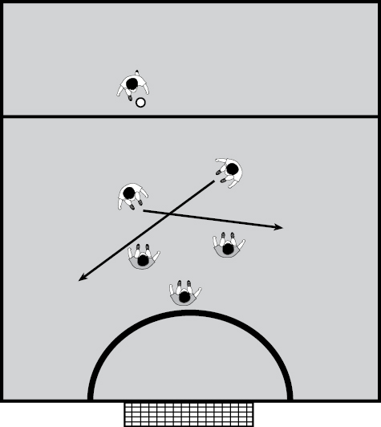
Figure 3.8 Marker handover
The centre back bus
Three attackers try to get the ball past a centre back bus formation (and a goalie). The idea is that the two centre backs swap roles, one holding the centre of the field while the other defends the ball carrier to the left or right (depending on which side they are playing).
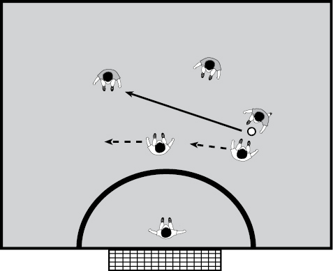
Figure 3.9 The centre back bus
Stay in your third
This is a game for positional awareness, but is also good for passing accuracy for the attacking team. Two teams of three in the outfield, with the defenders also having a goalkeeper, are divided into the three strips of the field lengthways: the central strip and the two wings. Each team is only allowed one player in each strip. The attackers are allowed to cross over and swap strips, while the defenders keep to their allocated zones. While this may seem workable only with a one-to-one marking system, it also works well for marking the line of the pass. When the attackers score the teams switch over.

Figure 3.10 Stay in your third
Free kick surprise
This sounds like an attacking drill and it is for the players taking the free kick. But being ready to defend any free kick is greatly helped by practising it. I recommend three on three, though four on four is, of course, closer to the real deal. Either use a goalie or, if short, it’s better to even up the teams and have an empty net.
The surprise to this is that the drill starts off as just three-on-three, attackers versus defenders, trying to keep possession. Out of nowhere, each player gets a turn at calling, ‘Free kick!’ At which point, the attackers assemble to take a free kick and the two-metre rule applies. The defenders are likely to call it when the ball is loose, whereas the attackers will want to have possession when they call it. Either way, everyone has to act fast: the defenders to mark the route to goal and the pass, the attackers to take advantage before the defence is set.
Summary
The best way to remind yourself of how to improve your defence is to reread the bullet points at the start of this chapter. Your defensive strategy needs to be something simple – that everyone can remember – with individual roles assigned, especially for your centre back and the two players defending the flanks. Beyond that, a rule or two on how you will mark as a team needs to be clear to everyone … and especially the ringer you’ve never met and who has just turned up for the game.
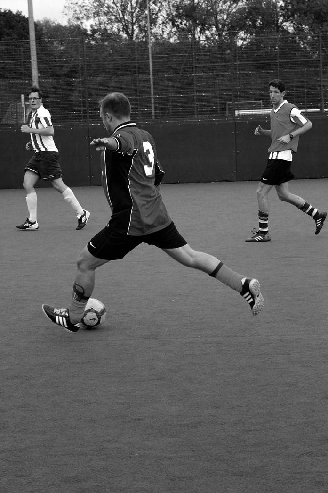
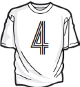
Attack
OK, with the chore of defending out of the way, we can now look at the joy of goalscoring. Unfortunately defending and the transition back to defence have to remain in your head at all times, but let’s concentrate for the moment at least on how to set your team up when in possession of the ball, how to attack well and what that means beyond somehow scoring goals. Before getting onto the usual preoccupation with ‘formation’ in attack, let me waylay you with a consideration of the most important question in real-world attacks.
Where does the attack start?
If you watch a lot of 5-a-side, you’ll notice that goals come at odd moments. Sure, some come from a clear, cogent attack with players in ‘position’, a patient build-up, a through ball and a shot across goal. But, as Arsène Wenger notes in an interview with FourFourTwo magazine, most 5-a-side goals come on the counter-attack. Wenger suggests that holding possession is actually dangerous, that it’s better to let your opponent come at you, then press them off the ball, nick it and burst forward in the chaos of the transition.
With all due respect to a man who knows infinitely more about the game than I do, this is more a truism than a strategy per se. Yes counter-attacking is great, and being alive to the opportunity of a quick transition to attack is hugely to your advantage. However, there will be times when your team is in possession and you cannot simply kick the ball to the opposition and then beckon them forward Bruce Lee-style. You need to try and score all kinds of goals, in all kinds of situations. Perhaps counter-attacking will be the most fruitful, but you can’t limit yourself to this.
Any phase of play where your team is in possession, I will refer to as ‘attack’. In 5-a-side, if you have the ball, you are attacking. Thus your goalkeeper is as much a part of the attack as any other player.
… with your goalie
Most attacks will start with your goalie. They may peter out and come to nothing, but they will start there. As this is a static starting position, the goalie being unchallenged in the goal area, there is enough time to begin an organized, or even pre-planned, attack. The keeper should always be looking to start an attack, and one as advanced and dangerous as possible (see ‘Goalie on attack’ in Chapter 5).
It makes sense for all your players to know what you are going to do from the roll out, as there will be many of these during the game. If you’re all on the same page for this, the opposition won’t have time to react. Discuss, plan and practise these moves, you’ll be surprised how much simpler they become. At the end of this chapter are three ‘Attack from the back’ drills, showing possible organized plays. It pays to give the play a name or number, so that you can call it and everyone is ready.
At the roll-out
Specific plays and routines aside, there are general actions that will benefit an attack from the back. First of all someone needs to receive the ball. The more options the keeper has the less predictable the play will be to the opposition. So make yourself available for the roll-out, and call for it if you’re unmarked and in a good position. The other option is to drag defenders away from a zone that will either provide space for a teammate to run into or that opens a line of sight between the keeper and a player upfield (see the section on ‘Dragging’ below).
But make sure you pick an option, don’t just dawdle upfield. And don’t make the mistake of taking your eyes off the ball, just because it’s with the goalie. Too many times when in goal I have moved to release the ball to an unmarked player, only to realize they’re having a rest and not looking at me.
Receiving the roll-out
The final thing you need to do in the outfield before the ball is rolled out is to know your next action. That is, if the ball comes to you, you should already know where your teammates are and who you intend to pass to. The faster you can get the ball away, again, the less time the opposition have to react. You should already know your next move if the ball isn’t coming to you as well, whether to:
- make yourself available for the next pass
- make a decoy run, dragging the opposition away
- make a run forwards to receive not the next pass, but the one that follows
- or make a run backwards to cover the ball carrier (as they push forwards)
To do this you need to keep your head up as much as possible, taking little looks around, and keeping your vision wide to observe your periphery, like you do when driving.
Initially the ball may have to go to someone facing goal with a marker behind them. If this player is the furthest back and directly in front of goal, they need to be someone who can control the ball well and shield it from their marker (avoid rolling out to a marked player whose talents lie elsewhere). Their job is now to release the ball safely, either by passing square to a supporting player or working themselves some space and turning to face their marker, before passing upfield. The option to try and dribble past one’s marker as the last player back should generally be avoided. Sometimes the marker will clearly be flat-footed or there’ll be a gap, in which case fine, push ahead. But the risk of losing the ball in the death star area of your own goal is generally too great and a pass is quicker and smarter. This player may have to take the ball a little left or right to free a line of sight around their marker, but teammates should also be moving to provide a safe pass.
On passing, the player should move to receive the ball back. If they are the last player back and no one is nearby to cover, they should not necessarily bomb too far forwards but having passed the ball it is always easier to lose one’s marker and get into space.
The idea is to get the ball to the feet of an unmarked player in space facing forwards. This may take a few passes if under pressure and it will definitely take some smart movement from teammates.
An initial move from the roll-out to a marked player facing goal may be to pass square (but not across the goal) to another marked player who has moved towards the first player. The first player bombs forward having released the ball, while the second player passes back to the goalie, who pushes it immediately upfield to the first player on the run (the second player becoming the last-player-back) – see Figure 4.1.
A similar move can be made with two or three outfield players to get the ball to a player in space facing forwards. With two, this is just a one-two. The player receiving the roll out knocks the ball square then advances and receives it back. With three well-marked players a variant might be: player 1 receives the ball on the right and knocks it square to player 2 who has moved towards player 1 from the left (momentarily losing their marker). This player knocks it to player 3 marked on the left wing near halfway. Having released the ball, player 2 dummies towards the centre to send their marker the wrong way then pulls to the right and forward to receive a back-pass from player 3, who then moves down the wing. Player 2, now facing forwards and with the ball at their feet, has options (see Figure 4.2).

Figure 4.1 Triangle with goalie then on your bike
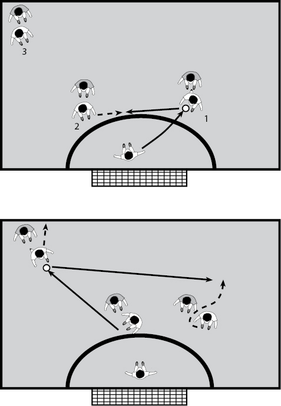
Figure 4.2 Roll-out to three well-marked players
The attack proper …
Whether the ball has come directly from the goalie, or there had to be some interim work from marked players at the back, once the ball is at the feet of a player in space, facing forwards, the attack proper can begin. Whether this will be fast and ruthless or patient and deadly depends on your players.
For the most part the idea is to keep passing to players in space. This will often mean passing back again and recycling the ball around. You do NOT always have to move forwards. It’s 5-a-side, the goals are always close by.
There are little moves that can be made to lose markers, such as the one-two, the wing flip (see the headings with these names below) or even leading your marker from the centre to the wing then back-heeling the ball back into the centre for your teammate bursting through the gap you have created. Or why not, if you back yourself, dribble past a player or two? At each stage a player acts, passes then moves. The other two players, who have not just passed or been passed to keep a track of the field, and keep choosing from the same set of options: move to a line of sight to receive, make a decoy run, drop to cover or move to receive the second pass. Keep communicating options at all times: ‘Man on!’ ‘Square!’ ‘One-two!’ ‘Wing!’ ‘Switch!’ ‘One more!’ (meaning a pass in the same direction as the last pass, and straight away).
Ultimately a pass will be an assist for a shot.
… amid broken play
As mentioned, goals often happen quickly, seeming to come out of nowhere. With this in mind it helps to capitalize on broken play. Ultimately, it comes down to what you want to gain from broken play. Too often in the contest for a loose ball, as it ricochets hither and yon and everyone is mid-direction-change, our objective seems to be simply to get a boot to it, and more often than not we only manage to kick in the direction we are facing, forwards. The ball travels towards an area where the opposition are more likely to have the numerical advantage, or where they can simply slip it to their keeper, either way meaning possession is conceded.
The goal of broken play, it needs to be said, is to bring the ball under control and into the controlled possession of your own team. There are a few ways this might come about, but three stand out. The first is to get to the ball and shield it towards your own goal, then to pass back to a teammate or your goalkeeper. Any player can do this, and the play should be called loudly when a repeat offender from your team of the kick-ball-forwards syndrome is contesting for control. The second option is for the more talented player. You get the ball under control by dribbling it out, keeping the ball close and moving with it until you are out of the fray. The third option is the most devious. While one player challenges for the ball, but will clearly be second to it, a second player, goal-side of the situation, moves in anticipation of where the ball will go if the opposition get a foot to it. That is, you plan your ensuing interception.
However you get the ball under control, time is now of the essence. The opposition will be reacting to the transition and you need to keep the ball moving. Look for a through-ball to your player in space to run onto towards the opponent’s death star, or a ball up the wing while another player sweeps in to receive the cross-field ball.
… from an interception
The good thing about coming into possession through an interception is that it cuts out at least one player and perhaps two if the pass you’re intercepting is a square one. Most likely you will immediately have the ball under control too, so there is no need to faff about. In these instances the other players on your team must react quickly and not let you become isolated. Having fewer of the opposition in front of you, and perhaps superiority in numbers, it is important not to take the soft option and head for the sterile space of the wing. Drive into the centre or pass into the centre. Your teammates (or you) can then give options left and right, stretching any remaining defence.
… from a tackle
An attack starting from a tackle is halfway between the broken play and interception scenarios above. If the player you have tackled is still in front of you, shield the ball towards goal and pass it to a safe option (back to the keeper never hurts). If, in tackling, you have moved beyond your attacker and are facing forwards you have the option to travel or pass forwards.
Either way, as in every attack, the priority is getting the ball under control and quickly into malicious possession. If your goalie receives the ball following a tackle, in the chaos of the transition they will probably have the option to make a more attacking pass/roll-out, so should act quickly. Any sort of turnover of possession should signal:
- first, establishing the ball is under control
- then the counter-attack
Obviously it’s ideal if the first step happens quickly, but it’s more important not to immediately concede possession having won it than it is to helter skelter into an attack. The worst outcome will be that the opposition have had time to get into a defensive shape, in which case at least you have the ball and can attack in your usual ‘from the roll-out’ manner.
… in front of the opposition’s goal
The only occasion when I would retract my ‘control first’ approach is when you win possession right in front of the opposition goal. Since your entire strategy is about trying to get the ball to someone in this area, now that you have it there it’s no time to muck about. You need to shoot or play the assist, or at least attempt to do one or the other straight away.
This, I think, is the situation that Wenger in the FourFourTwo interview may have been thinking of in terms of high goal count. If you press the opposition when they have the ball in this area, there is little to lose and a lot to gain. If you try to intercept a roll-out or get right up to the keeper when they are rolling out (especially inexperienced keepers) the reward can be very high.
This doesn’t mean you should be hasty. All the tricks for playing a good assist or for beating the keeper that I discuss below definitely apply. Speed not haste. Be calm, but act quickly.
… from a free kick
If I say ‘act quickly’ again I hope you won’t hate me, but act quickly. If the ref awards you a free kick, you need to run to the ball, pick it up, get it to the scene of the crime and pass to a player in space. Your team should have a nominated free-kick taker (not the person who is the best shooter), and a backup if they are substituted at the time of the free kick. The pass from a free kick needs to be a good one, so the best ‘technical’ passer should be your go-to player. If the defence has a chance to get set you have lost all advantage. But if so, accept it, pass back, draw the opposition forwards and then stretch them with some possession play, patiently probing and trying to catch the defence off guard.
However, there are ways to outfox a set defence. The simplest is to fake who is taking the free kick. The ostensible kicker over the ball suddenly dips away to one side, as another player who was marked on the other side swoops in and passes it to this player now in space.
There are three other plays I would recommend from an indirect free kick. (Nilesh Pandit, organizer of London’s Play Five a Side leagues, recommends a fourth: ‘Try and shoot the ball off a defender and into the net. I’ve seen many goals like that’.) The first two deal with free kicks in the most annoying zone, down the wing near the corner:
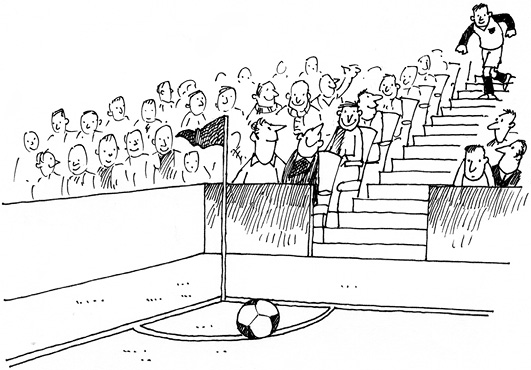
Indirect free kick near the corner 1
(See Figure 4.3.) The defence will always put someone between the free-kick taker and the goal, and if you station someone near the central edge of the D, the defence will leap to mark this player. What I suggest is a pass to someone coming in at a 45-degree angle to goal. You should have one player taking the kick (player 1 in the figure), one player occupying the central defender in the obvious danger position (player 4) and two players further back, one directly behind the kicker (player 2) and one a little further back, halfway between the other two players (player 3). As the kick taker shapes to shoot, player 4 does a decoy run to the right-hand side as if to receive a pass across the D, taking their defender with them and leaving space. Player 2 should be calling for the ball ‘back up the line’, which is also a decoy, occupying that player’s marker with the thought of intercepting this kind of ball. The free kick is then passed towards player 3, but is actually for player 2. This is intended to fool the marker of both players 2 and 3. The markers see the ball coming towards player 3, whom they have under control. However, player 2 is ready for the pass and bursts onto it with space in front. Player 2 can either take an immediate shot, take a controlling touch and shoot, or dribble for the vacated centre before disguising a shot.
All this is simpler still if played before the defence is fully set.
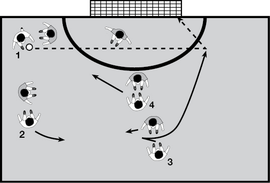
Figure 4.3 Indirect free kick near the corner 1
Indirect free kick near the corner 2
(See Figure 4.4.) Again the central player (player 4) makes a decoy run, this time towards the free-kick taker. Player 3, stationed towards the right, also initially feints as if to make a run towards the free-kick taker but then, once their marker moves, dashes to the far side of the D. Player 1 plays the free kick right across the goal area for player 3 to smash it in. If player 4’s marker reads the situation they have the lose-lose situation of either leaving player 4 to mark out player 3’s run, thereby leaving player 4 free for an easy pass in an even more dangerous position, or just watching it happen.
Figure 4.4 Indirect free kick near the corner 2
Indirect free kick in a central position
You don’t need the visual aid for this one. Again one player should be at the edge of the D running as a decoy to the left or right. The other two players are behind the free-kick taker, one almost directly behind and one on the wing. The defence should see the front player as the primary danger, as the free-kick taker will be facing forwards towards this player and they will generally not mark behind the ball in such a dangerous area. However, the free-kick taker back-heels the ball to the player behind and then follows the run of the front player drawing the defence to one side so that the player receiving the pass can pour through on the other side and shoot.
A much simpler scenario is for players behind to run in from deep to the left and right, or make overlapping diagonal runs, as the free kick is passed to either one of them.
And you can imagine many more plays: dragging the central players away, decoy runs, runs from deep. Try sketching out a few, or noting down ideas after you see the opposition take a clever free kick. Practise these with your team, as they really are one of the most straightforward opportunities you’ll get in the game. If the kick is from deep, it’s still a chance to launch a quick counter. So grab that orb and launch the through-ball your runner is already on the way to collect.
… from a penalty
Hopefully you’ve practised these and you should have one clear best penalty taker. There’s no trick to it and, with the little goals of 5-a-side, trying anything fancy like a dink down the middle or a rabona is unnecessary-going-on-foolhardy. Just pick a side, don’t telegraph it by angling your standing foot towards that side, take that one step and hit it firmly and directly into the corner.
You can’t be so meek as to pass it in, on this occasion. You do have to connect, but make sure while transferring power to the ball that you have your head over it to avoid skying it. You need the ball to go where you want it to, so find that balance between all-out power and control.
Take no notice of the goalie at all. See the space you’re going to kick the ball into while looking straight ahead … and then kick. It can pay to visualize your penalty kick hitting the back of the net before you take it, in fact you can do that the day before the match. Imagine looking straight ahead while seeing your spot. Know in your heart the certainty that it will go in. Imagine yourself calm in this notion. Imagine your body position as you kick the ball. This kind of visualization primes the routine in your mind and makes it seem less odd when it is suddenly thrust on you mid-game. Science will make you score.
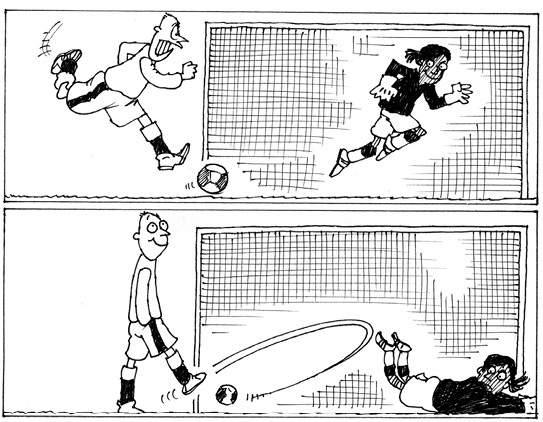
Evacuate stale space
In any attack there will be players who do not get the ball. They may have been in the best position, they may have made the best run and offered the best line of sight, but for whatever reason the ball never came. It can be infuriating at times, but if this is you, you need to get a grip. A common reaction to arriving in the best place for a pass that doesn’t come is to remain there. This is fine for the length of time the opposition haven’t reacted, but once they have, you need to move again. It doesn’t matter how many times the ball doesn’t come to you, don’t just wait for it in what once was Shangri-La, move and move again. Get yourself into space, drag away the defence or drop to cover. The worst stale space is space too high up the pitch. Perhaps you made a run expecting a through-ball; if it didn’t come and you are no longer in a line of sight (and probably marked), drop. You may well be able to make the run again, and it is always better to be running onto a ball than receiving it with nowhere to move.
Attacking roles
Now at last we can get to formations, right? Wrong. Or wrongish. A lot of the talk online is about good formations, but personally I think these relate primarily to defence and are too idealistic when you only have four outfield players. A comment echoed by different sites is that teams who attempt ‘total football’, with players in fluid positions rotating as necessary, are ‘easy pickings’. There is something in this, but I don’t think it’s about whether you form a diamond, a square or a Y on the pitch. I think every player needs to know their role, but to call it a formation, in attack at least, seems disingenuous when looking at the actual movement on the field. It’s interesting that the 5-a-side centre organizers I corresponded with in London and Melbourne were dismissive of formations in attack. I asked them if any particular formation aided in goalscoring, and they responded with:
‘A rigid formation is easier to block or cut out passes. A flexible probing attack that keeps spaces open and moves the ball around will provide more opportunities.’ (Ian Postlethwaite)
‘Not really formations, it’s just that attackers need to stay apart from their markers and ensure they aren’t closed down.’ (Nilesh Pandit)
But as I say, I think it’s good to know your role. One player should know they are the primary centre back, always keeping goal-side of the opposition’s front player. Depending on your general strategy (see Chapter 6) you may also have two wing backs and a striker, a playmaker and two attacking midfielders, or some lopsided combination thereof, such as a wing back, a box-to-box midfielder and a striker. Whichever combination of roles suits your players they simply need to know their roles in attack and where they go when the team transitions to defence.
Positioning
In terms of actual positioning as it relates to your role, the general thing that needs to be said is that you should not all be too bunched in one zone and nor should you all be spread too far (unless you are all excellent passers). I also think you should stagger your heights on the pitch, that is, players ahead of the ball on the left and right should not be in line with each other. This helps diagonal balls move the play upfield. Because of the need for movement in 5-a-side nobody will be static in position and it’s advisable to swap positions to confuse markers. For instance, when performing the wing flip (see below), the player on the wing moves to the death star as the player near the death star moves to the wing.
Your fluid positioning, however, is relative to four things:
1. The ball carrier
2. The death star zone
3.The opposition
4. The centre of the field
The ball carrier
At least two players need to be within easy passing distance of the ball carrier at all times. This means moving with play. I don’t mean haring around the pitch and exhausting yourself, but making sure no player becomes isolated, instead staying within the zone of influence where they will be useful.
The death star zone
The zone a few metres within the front of the D, which I call the death star for no good reason, is the area toward which your play should focus its movement. This is where you want to get the ball, if at all possible. In terms of positioning, when in the final third of the field it can be good to gravitate around the death star. Your runs should aim towards it or drag the opposition away from it.
The opposition
The areas that contain no members of the opposition are known as ‘space’. As you want to try and position yourself in space, you are in a sense positioning yourself relative to the opposition.
The centre of the field
This piece of positioning relates both to the transition back to defence and to the notion of malicious possession. If you are the furthest player back, yes you want to be in a line of sight for the pass, but you need to stay in the central strip of the field so that you are equally well placed to defend a sudden counter-attack from the left or the right.
For others on your team in front of this last player, the centre of the field is less important when compared to proximity to the zone of influence, to the death star and to areas of space. Nevertheless, if you can work space in this central strip, it will be of much greater reward than space on the wings (especially on wider 5-a-side pitches). If you can receive the ball in space in the central strip or move with the ball into space in the central strip, you have malicious possession and 360 degrees of passing opportunities. More than this, when you pass, it will be easy to move from that pass into just as dangerous a position.
What not to do
In terms of positioning and formation in attack, there are three big no-nos:
1. Do not attack in a line. A line of two players is permissible, but a line of three or – ye gods – a line of four is not smart use of space. Stagger yourselves on the field and always have someone behind for the pass back. Nor should you ever have all four players right up by the opposition’s D at once, except perhaps in the last minutes when a goal is vital.
2. Do not wait at the opposition’s D for a pass. It’s great to collect a pass as you move towards the opposition’s D, or to receive one as you arrive, but if you get to the D and no pass arrives, you are not in a very useful place. Drop and get back into the zone of influence. If you must wait anywhere for an attacking pass, wait a couple of metres back from the D so that you have room to move in front of you.
3. One sterile space I’ve seen players fresh from 11-a-side scoot up and down is the opposite wing to where the ball is. On very thin pitches, this might be OK, but on your typically large outdoor caged Astro pitches, the ball is simply not going to come to you from one wing right across to the edge of the other. That space may become useful, but you will have time to move into it from a more central position, while having the option to move closer to play as well.
The final ‘do not’ that relates to an attack is something they teach you early on in football training as a kid. Do not pass across the face of your own goal (or across the front of your D to be precise). Exceptions abound for this rule, but if there is any chance that your pass might be intercepted or stolen, or if you are under pressure and haven’t managed to look up and check, just don’t risk it. If you concede possession here, you will probably also concede a goal.
Build-up play
Once you have started an attack you will generally need to keep a little possession before any assist of shot can be made. The pace of 5-a-side is very fast and this makes it easy to make a bad choice or to simply bumble your pass and concede possession. It’s going to happen. I’ve seen some brilliant players trip over the ball and face-plant. Nevertheless, if you play the percentages and keep your choices smart, passing to feet or into the path of the player in space – or with their back to goal – you are more likely to hold onto the ball and work an opening towards the final third and centre of the pitch.
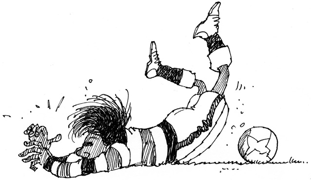
Pass and move
This is the simplest way to gain advantage and is often overlooked, with passers standing on their heels having knocked the ball on its way. It is hard to escape your marker when you have the ball; this is because you have to keep taking touches or moving your feet to shield the ball and so can’t move freely. Having released the ball in a pass, however, it is now very simple to move away from your marker. This is doubly the case due to the distraction of the ball. Many, especially social, 5-a-side players will lose interest in the person they are pressing when the ball is released, instead of watching the path of the ball and considering whether or not to chase it. This is when you move. You pass, and then stride away from your marker, preferably past them, and make yourself available for the return pass.
Passing and moving can effectively remove one of the opposition players from the equation. The quicker you do it, and then the quicker the teammate you’ve passed to passes back, the more space you will all find yourselves in.
Find space
As I mentioned before, space is simply where the opposition isn’t. In attack you should be trying to keep the opposition at a distance at all times. But space isn’t just static, somewhere you occupy waiting for the ball, it is also the space into which you are moving. It’s good to ask for a pass to this ‘destination’ space while on the move. Call, ‘Wing!’ or ‘Square!’ or ‘Far post!’ as you are on your way there. If a teammate has looked up and is actually looking at you, it can be just as effective to indicate the channel you are moving towards with your hands.
Sterile spaces – to the side of your own goal or on the wings – are the easiest spaces to occupy. The opposition will generally mark harder in front of their own goal and in the centre, so it’s important to use these sterile spaces to work the ball forwards, to spread play or simply as a way to start again if your attack has hit a brick wall. It’s always better to retain possession than to hit a shot into the person blocking your sight of goal.
The central strip of the pitch nonetheless remains the place you really want possession of the ball. Although spaces here may be tighter and your reaction times will have to be quicker, this is malicious possession. You’ll have options, and you’ll definitely draw the defence to you.
Draw them in, then pass
The ball carrier/marker relationship is like a cold war. If your marker advances too close in their efforts to press you off the ball, you might slip past them and they’ll be caught facing the wrong way and moving in the wrong direction. On the other hand if they ‘stand you up’ moving backwards as you move forwards, blocking your sight of goal but ready to pounce on any loose touch, they are conceding territory to you as you move. If they really stand off you, blocking only your path towards goal but without the threat of taking the ball from you at any loose touch, you have even more options, but the truth is you do want to go exactly where they are blocking.
My point here is that with the ball at your feet, you needn’t rush your pass simply because your marker is in front of you. If your marker is not right on you, you don’t need to release the ball at all. Obviously if a great pass is on, you should make it rather than simply retaining possession. But often, with just one teammate square, you simply need to be bold, move with the ball towards goal and force the defender to come close. As soon as they step up, then you pass square or angle it into your teammate’s path. In this way you can move past the defender and take the player out for your teammate, who can advance into the space behind them.
One-twos
If you combine the last two sections, drawing your opponent in before passing and moving, you have the beginnings of one of the most effective attacking moves in football: the one-two. It may be simple, but when well executed it is a thing of beauty.
Either party in a one-two can call the move, there are pros and cons either way, but it does help if someone calls it. Professionals will do the move on autopilot without anyone saying anything, and fantastic if that’s you, but it doesn’t hurt to spell it out to get you both on the same page.
Player 1, who is generally marked, passes the ball diagonally or square to player 2’s feet, calling ‘One-two!’ before skipping past their marker. Player 2, preferably with one touch knocks the ball back into player 1’s path. Player 1 now has the ball at their feet, moving at pace with their marker behind them. Job done.
There are a couple of pretty obvious things to note. Player 1’s marker has to be either flat-footed and facing the ball, or, better yet, has been drawn forward and so has to completely change direction. In both situations player 1, facing forwards in the direction of travel, will be able to get ahead of their marker easily. In a congested zone with a number of the opposition players close by, the second pass, the ‘two’, will be difficult. Don’t expect miracles from the one-two, or blame your teammate for a poor pass, when it was a hazardous choice in the first place. It doesn’t hurt to try and one-two your way out of a scrum if you think you can see the needle of space for the two passes – the advantages of leaving more than one member of the opposition behind are a big pay-off – but don’t be too surprised if it doesn’t come off.
Head up!
This can often be the difference between players and good players. Good players get their head up and see the options around them. Whenever anyone calls, ‘Time!’ to you, bob that neck up like a meerkat and take in the surroundings. When you know you will be first to a ball, look up and around as you are running towards it. When a pass is coming to you, glance around before it arrives, and then look back to the ball as you receive it.
Again, it’s like driving a car. You need to check those mirrors. Try and make a habit of looking around as often as you can, and especially when you have the ball at your feet. This is difficult when close control is required, but try to get yourself to a zone when you can look up again before simply blasting the ball randomly. When you see a teammate with their head down, do one of two things. If they are hemmed in and looking up will be dangerous (for them), tell them where they should pass. Call a back-heel, for instance. But if they have the space to look up, call, ‘Head up!’
If they look up, they will see the teammate in space and pass the ball to them.
Dragging your marker away
The idea with dragging is to move opposition players away from the prime real estate on the pitch: the centre and the death star zone in front of goal. In its simplest form, you run to a player in the centre, making them adopt you as their marker, then you peel away to the wing, dragging them with you and thereby opening space in the centre for your teammates to:
- run into
- pass into
- or pass through
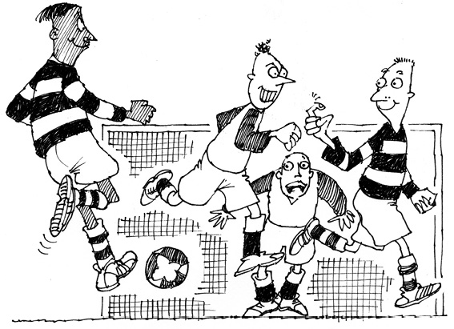
You’ll see in all three attack-from-the-back drills at the end of this chapter that some form of dragging players is involved. I have never felt as stupid as when I’ve been dragged from defending the death star area by a player running sideways, whose only aim was to pull me away so his teammate could waltz through. Done right, this is as highly effective as it is infuriating.
You can also drag players from the centre when you have the ball. This is another reason why having control of the ball in the centre of the pitch is malicious possession. If I have the ball at my feet in the centre of the field just past the halfway line, you can be sure that someone will try and contest it. Depending on the position of my teammates and the spaces around me, I can make a run with the ball to one side, dragging the marker from the centre, and then pass back into this central area the marker has vacated, and which my teammate has dashed into. The other killer move is to engage the centre back right in front of the D, then run with the ball to one side like you are trying to go around them to shoot, and then having dragged them from the centre, back-heel the ball across the central area for a teammate to sweep onto.
One of the important features of dragging players from the centre, is that your teammates have to be aware it’s happening. If you or someone else on your team is doing it and no one is taking advantage, discuss it.
Dribbles
All players need to be able to run with the ball at their feet. Whether this progresses to dribbling past players, or dribbling to hold the ball up, depends on the individual. At this stage, you’re probably either good at dribbling, or you never will be. Players with a low centre of gravity who can twist and turn without capsizing and players with pace tend to be good at it. At its most basic level, you are just pushing a ball past a player and then running after it. The one-two with the wall (see THE ONE-TWO TO YOURSELF) follows from this, basically still kicking it past your opponent and chasing, but using the bounce of the wall to help you. The next step is cutting back, that is, you are moving to the left of your marker, then you cut back to the right taking the ball with you, either with the inside of your left foot or the outside of your right. Using the inside of your foot, you will need to cut the ball back at a more acute angle, but you have more control. The use of the outside of the foot is the easiest to disguise and keeps the ball further away from your opponent.
Stepovers
In fact, this is what leads to the ‘stepover’, where first one foot feigns at moving the ball with an outside touch, and passes over, then the other foot feigns at an outside touch, and so on, until eventually taking the ball one direction while the bamboozled defender looks on. I’m all for show-pony moves on the 5-a-side field, but I’ve seen some hilariously slow and obvious stepovers in my day. If you can do it quickly, fine. If, like me, you appear to be in slow motion, have a little dignity and don’t do it.
Dragbacks
You have a lot of control of the ball once you have your foot on top of it. With the ball of your foot you can roll it forwards or drag it back, and quickly. Every dribbler needs this in their arsenal and it’s very easy to do. Generally when someone is about to steal your ball, you drag it back away from them and pivot on the other leg so that you are facing away from them. If you are a non-dribbler, get a ball and practise this. The dragback is also a good fake-out if followed by a drag-forward. Just as they think you’re dragging it behind you to reverse course, you roll it back to where you had it and keep moving in the same direction.
Feigning
Simpler than the stepover is the feign. You pretend to kick the ball one way, often with the inside of your foot and seemingly with great power hoping your opponent will flinch, then either make no contact at all or push it the other way with the outside of your foot.
To dribble or not to dribble
Passing the ball is generally the smarter option. At times you will have to move with the ball a short distance in order to get a line of sight for a pass or to draw in your marker, so dribbling to a pass can be smart. Opting to take on all-comers when you are the last player back is probably not the thing to do. However, if you’re central-ish and the opposition is standing off you, be bold, go. Getting some pace up you should be able to move the ball past your marker if they stay facing you, or if you notice them flat-footed.
The real question though is: when do I stop dribbling? Put it this way, if you began your dribble a few seconds ago and have made no real headway and now the opposition are surrounding you, it’s time to give it up. This can be against your nature, but accept that the dribble didn’t pan out this time and at least you still have the ball. Pass it backwards, with no harm done.
Goalscoring tricks
Passing it about like a hot potato is all very well and applaudable, but ultimately you want to score and this involves somebody taking a shot. We can all improve our shooting, and we can all improve our decision-making of when to shoot and when to be a little unselfish and opt for the assist. Practice makes perfect so I suggest trying the drills and games at the end of the chapter. Knowing when to shoot and how to shoot, and – why not – where to shoot will make all the difference to the one thing which actually makes you win at 5-a-side: goals.
Shooting well
See the section on shooting in Chapter 1 (shooting). I’ll be honest that it’s not my personal speciality, though I like to think I contribute. In light of which I asked a few experts about how to shoot well. As mentioned, it comes down to power, precision, good practice and poker face (not making the impending shot obvious). The key thoughts of the two 5-a-side venue organizers I corresponded with are as follows:
‘Power often doesn’t defeat a keeper – precision is more important.’ (Nilesh Pandit)
‘It’s important to be able to use both feet and all parts of the foot, inner, outer, laces and toe (even heel I guess) so that maximum variation on the ball is achieved from a single point.’ (Ian Postlethwaite)
But I think the best response came from a fellow social player. James Rennoldson played as a ringer for our team one week and ended being the highest (equal) scoring player for us for the whole season. Another season, a ringer came in, played once and doubled James’s total. More than knowledge of how to score, you need a natural like this on every team. Unhelpful, of course, if you don’t have one, so please read James’s perspective in the box below. The only tip I would add is not to look at the keeper but at the space you are shooting into.
Shooting tips from James Rennoldson
Hit the goal: it sounds obvious, but if you don’t hit the goal it’s impossible to score
The goalkeeper decides where you shoot: 5-a-side is a game of angles. The goals are small and goalies should keep low and on their toes, quickly closing off the most obvious shooting opportunity. Your job is to spot the available angle past them (even if that means laying off to a teammate)
Pass it in: shooting doesn’t always mean blasting the ball. Hitting the ball hard can mean losing accuracy. Why not try passing past the keeper if close to goal?
Shoot across the goalkeeper: if they parry the ball, it’s more likely to come back into the path of a teammate.
Shoot first time or take a touch?
Few agree with me, but in my opinion, if the ball is coming to you at pace, it is simply a good habit to take a touch before shooting. It depends on your technique, of course. James Rennoldson again summed it up well: ‘It’s about balance. Based on the speed of the ball coming towards you, are you confident of getting your body into a position where your weight is over the ball (in order to keep it low and hit the goal)? If you are, hit it. If you’re not, take a touch – particularly if you have time to do so. Sometimes you don’t have that time, of course (or there just might not be a better option), and that’s fine, but if you continue to wildly swing rather than take another touch before passing or shooting then your teammates may get frustrated.’ Taking a touch may seem like needless lollygagging when time is such an issue in 5-a-side. But no, it generally improves the accuracy of your shot about a hundredfold. There are specific instances where shooting first time is the right thing to do. Ian Postlethwaite also talked about ‘redirecting’ the momentum of the ball as opposed to trying to counter it. If you’re receiving an assist across the face of goal that you’re running onto, then redirecting the ball into the goal with the whole of the side of your foot is probably the best option to go for.
Disguising your shot
With 5-a-side goals so small, the keeper is often at an advantage, depending on where you’re shooting from and whether the assist took the keeper out of position. If you are clearly shaping to shoot, that is, pushing the ball ahead, looking towards goal and winding up that back leg, you are giving the keeper time to react. As a goalkeeper, I love it when attackers do this, especially from distance, as it makes me look good ‘suddenly’ pulling off a save.
Don’t get me wrong, not every shot has to be ‘tricksy’, but if the keeper is set and your angle isn’t the best – but you do have a clear sight of goal – disguising the moment of your shot can catch the keeper off-guard. As long as the other elements of good shooting are in place (aiming for the space and perhaps towards one corner), this can be the advantage you need.
The easiest disguise is to just perfect shooting quickly with minimal telegraphing, retaining power without the need for massive backlift. It’s the backlift of the kicking foot that is the clear visual message of a shot about to be made. There are some other tricks, however, to disguising your shot.
Fake and shoot
Simplicity itself, this move. You pretend to shoot (or even to pass), then, as the opposition react you move the ball and shoot for real. It helps to put on a good performance, even screwing up your face like you’re about to unleash every inch of power in your body. You do everything I suggested not to above: telegraphing that you are going to shoot, then stopping your leg before it hits the ball. What you’re after is to fool the goalkeeper into last-ditch mode, flinging themselves across the goal and even going to ground. Then you pounce.
It’s a good thing to do if the keeper has already gone to ground and is lying across the face of goal right in front of you blocking all ground shots. You feign a shot right into the keeper’s midriff, they brace for impact and you push the ball to the side instead and shoot (once you have an angle on goal). As ever in 5-a-side, speed is important. Fake, then immediately do something else. Even if it’s to fake again.
The fake back-heel
This is the fake-and-shoot’s grown-up cousin. You’ll need a bit of slick ball control, but it can pay to practise it on your own. If you have already made a back-heel pass or two in the game it helps, as you want your marker to think you are about to do another one.
It works like this, side-on to goal with your marker in front and your standing leg closer to them, you drag the ball back and then lift your foot as if to back-heel it across the face of goal to a teammate. As the marker reacts, moving even slightly in the direction of the back-heel, you instead roll the ball forwards (drag-forward) and shoot immediately. There is a good video of this on YouTube if you Google ‘Ballers 5-a-side turning techniques’, which shows how to do the move in slow-mo. (In fact, all of the ‘Ballers’ 5-a-side clips are pretty great.)
The toe poke
Health and safety warning: this can hurt your big toe. But pschaw! The toe poke is a great way to get goals, as prodding the ball with your big toe can generate a lot of forward force without requiring any backlift. There is no shaping to shoot, so the shot comes out of nowhere. Accuracy is not the toe poke’s strong point, but if you’re close enough to goal, the ball will usually go straight in front of you, so aim your body at the hole in the goal.
The added frosting of disguise on this technique is to use your non-shooting foot as misdirection. You have your non-shooting foot on the ball. Then simply roll the ball in front of your shooting foot and toe poke immediately. It all happens so quickly.
The nutmeg shot
Much simpler than it sounds, the nutmeg shot involves dragging a marker across goal with you at pace, causing their stride to lengthen. At the widest point in their stride you shoot through their legs. Shooting back across goal to the far post is likely to be the best route through their legs, as a straighter shot may hit their front leg. As a left-footer I’ve found this a winning move on a few occasions, as the defender isn’t expecting me to shoot with my left. If you are right-footed but have a decent shot with your left, give the nutmeg a go while moving left across goal. The reason to do this at all, of course, is that the defender is blocking the keeper’s view of the ball so that when the shot comes they have no warning.
The dink
Nothing is more irritating for a goalie than someone scoring with a disguised dink. The technique takes some practice and you’ll look a complete munter if you do it wrong and slow-chip the ball straight into the keeper’s hands. Nevertheless, with a bit of practice this is actually quite effective. Motoring towards goal, having beaten your marker, you push the ball in front of you and shape to shoot low and hard. The keeper prepares either to make a collapsing save or go to ground, spreading themselves across goal. At the point of impact with the ball the goalkeeper will be on the move and this is when the subterfuge kicks in. Your foot is moving fast towards the ball, exactly as if shooting normally, but instead of hitting the ball with your instep, your foot cuts in front, hitting the ground just before the ball. Your toes slip underneath the ball and flick it upwards. The residual power of your leg’s motion knocks the ball forwards and up over the keeper at a pace much slower than they were expecting and a trajectory they definitely weren’t. The ball sails agonizingly over the keeper and into the far corner.
The rabona
Don’t even try.
Assists
Shooting is easy, especially shooting badly. Making an assist, however, is the subtle glory towards which every 5-a-side player should be focusing their play. It is a bit of an art, and some people are just better at weighting passes and directing passes to intended targets. But unless you’re definitely in the zone for the shot and you back yourself to have a good chance of a goal, playing an assist is the better option.
An assist is simply the pass to the player who shoots. The art is not just in picking who to pass to and passing it well, but timing that pass while drawing markers away from the shooter.
The square ball
I’m thinking here of the pass at the end of a classic pincer move. You have the ball at your feet having driven down the left of centre, you draw the centre back and goalie across then square the ball to your teammate running down the centre-right. In a two-on-one, you should always look to this. Draw the man (and keeper) then square so your teammate can slot it into the gaping hole.
The through-ball
Exactly as it sounds this is when you play the ball through – and perhaps behind – the defence and into space, weighted so that your teammate can run onto it. The success of the through-ball, however, relies on more than the perfectly weighted pass. Both passer and runner need to be in sync. Too often in 5-a-side, a ball is knocked forward for a teammate to run onto when the runner was not expecting the ball and therefore was not in motion. This is a needless concession of possession. The through-ball should only be played if:
- the runner is already in motion, or
- the runner has called for the pass, or
- the runner is in so much space they will easily be first to the ball even if their run starts very late
In this last instance the weight of pass is essential. The ball can’t be knocked so hard that it will drift into the opposition’s D before your teammate arrives on it. All of this is equally true for the through-ball pass. Don’t simply bonk the ball down the wing and expect a nearby teammate to chase it at full speed, then berate them for not doing so. Apart from the fact that mid-game everyone’s sprinting fitness will be waning, it’s a lazy pass in terms of imagination. Even if your player goes full-tilt down the wing and gets to the ball first, they will probably be isolated and the defence will have drawn in. Play to feet or into your teammate’s immediate path.
The wing flip
This assist will test your selfishness. But push through because it is a slice of genius. See Figure 4.11 depicting the wing flip drill. Player 1 is blasting down the wing with the ball at their feet while player 2 sits at the death star marked by the centre back. A selfish player 2 would call for the pass into the centre, but the actual ‘chess problem’ of this position is how to take the centre back out of play. One method is the wing flip. Player 2 in the centre moves across to the wing, dragging their marker with them. Player 1 passes down the wing to player 2 who immediately plays it centrally into the path of player 1 who has cut inside. The centre back may not go all the way with player 2 but they will have moved enough. The centre back also has to act quickly if they are going to now switch to mark the onrushing player 1. If they do manage to track player 1, another cute move is …
The back-heel
This gives you double bonus points for unselfishness and the kudos of being a show pony. See Figure 4.7 in the drill ‘Attack from the back 2’ for a good example of when to try it. The ideal back-heel is one across the face of goal having dragged a marker away from the centre with a sideways run. The ball then rolls to a teammate sweeping into an unmarked central zone. Jackpot.
The immaculate conception
This is my favourite type of goal, and every goalkeeper should be bearing it in mind at the roll-out. In most cases it isn’t on, and so shouldn’t be attempted. But if an attack has just petered out with the opposition all high or wide, leaving a hole up the middle, leap on the opportunity (see Figure 4.5). The keeper and an able runner (in position) need to be on the same page immediately. The keeper can call the runner’s name or the runner can call or indicate their run with a hand gesture. Of course, once called the defence will close in, so the next move must be swift. The keeper kicks or rolls the ball hard and long up the centre. The runner, generally coming from a diagonal, runs onto the ball, takes a touch (making it less immaculate) and once in the death star zone shoots. There may still be a last man to beat, in which case the weighting needs to be right and the ball should be collected and controlled near the centre of the field.
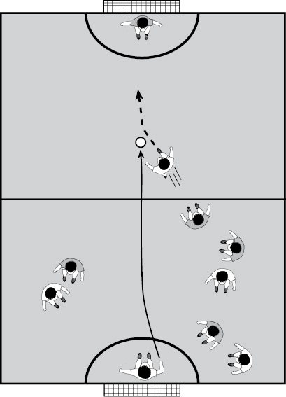
Figure 4.5 The immaculate conception
Drills
The following are some attacking drills to try in a practice session or if you have some time before your scheduled game. I think getting used to the moves without any markers is of no harm and it aids in getting the passing sequence right. Run the play with different players in different positions so that in a game any of you could take on any of the roles. Once the sequence of passes is clear, bring in markers, perhaps only in one crucial position at first, and not challenging for the ball. Finally, if you’ve run a particular play on a few separate occasions, try it at game pace with markers contesting for the ball.
I suggest – no I insist – you formulate your own plays, bringing in some decoy runs, one-twos and exchanging positions. Doodling something on paper then seeing it happen in an actual game is next-level boastworthy.
Attack from the back 1
The goalkeeper rolls the ball up to player 2 facing goal. Player 1 immediately moves across from a deep left back position to the centre. Player 2 knocks it back to player 1 and immediately peels to the left (dragging the real or imaginary marker along). As this second phase is occurring, player 4 on the right side near halfway, fakes a move back then bursts up the middle of the field. Player 1 strokes the ball long up through the gap player 2 has created and into the path of player 4. Player 2 immediately moves upfield to support player 4. Player 1 moves forward too and to the right. And what of player 3? Their role is crucial. With players 1, 2 and 4 surging forwards, player 3 moves from a deep right back position into the central ‘last-player-back’ position. The drill really ends with the ball at player 4’s feet, but you can get creative at this point if you like. Player 4 can dribble and shoot or pass across to player 2 or back to player 1.
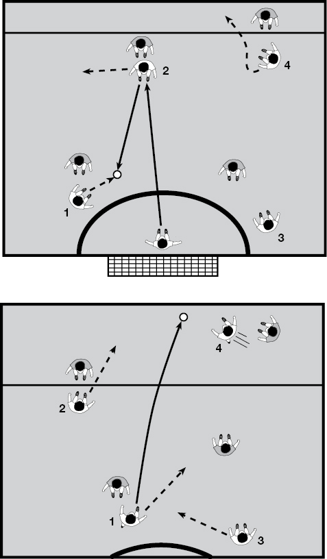
Figure 4.6 Attack from the back 1
Attack from the back 2
This is the attack that ends in a back-heel, but the build-up play is designed to work the ball out of some diligent marking. Players 1 and 2 are positioned as deep-lying left and right backs who are both marked. The keeper rolls it to player 2 who is facing goal. Player 1 dashes across to the centre and receives a pass from player 2, and immediately passes it to player 3 on the left wing, also marked. (Player 3 should begin in the centre and move to the wing thereby dragging an opposition defender from the centre.) Now for the bit that breaks free of the tight marking. Player 1, in the centre, fakes right then moves left, momentarily losing their marker. Player 3 passes back to player 1 then bombs up the wing. Player 1 moves the ball forward then plays it long up to player 4 high in the centre (and marked). Player 4 engages the opposition’s centre back then dribbles to the right. Player 3 is now sweeping in just as player 4 back heels the ball across the death star zone. Player 3 shoots.
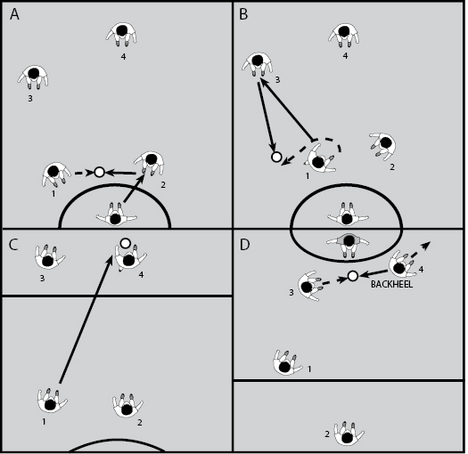
Figure 4.7 Attack from the back 2
Attack from the back 3
The most bizarre of the three: if you move this from the drill stage to actual onfield execution, and pull it off, I will be gobsmacked. Nevertheless, just running a drill like this reinforces your team’s possession skills, and gets you all passing, moving, dragging and decoy running as a team. This is all about the movement before the ball is released by the goalkeeper and is designed to make a hole in the centre of the field if the opposition are one-to-one marking. Player 2 in the centre comes toward the goalkeeper as if to receive it short in front of goal. Players 1 and 3 on the left and right respectively start to push forward and player 2 keeps moving, but now to the left side, in behind player 1. This leaves a hole up the centre of the field towards player 4, waiting just past the halfway line to receive the ball directly from the keeper. The keeper rolls it to player 4 just as players 1 and 3 make mirror-image diagonal runs, crossing just behind player 4. Player 4 now has the choice to slip the ball into the path of either player. Whichever player receives it pushes towards goal to shoot.
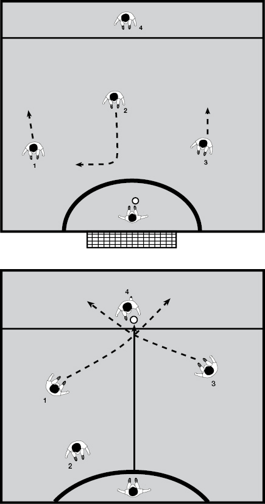
Figure 4.8 Attack from the back 3
The pincer
Keep this as simple as possible. Player 1 tears down the centre right with the ball at their feet. Player 2, a few steps behind, tears down the centre left. As player 1 nears the D the ball is played across the goal for player 2 to twonk into the net. The next two players go, repeating the move. It may sound easy with no markers, but the weight of the pass and the timing of the run need to be just right and will take practice. The benefit for game situations is obvious.
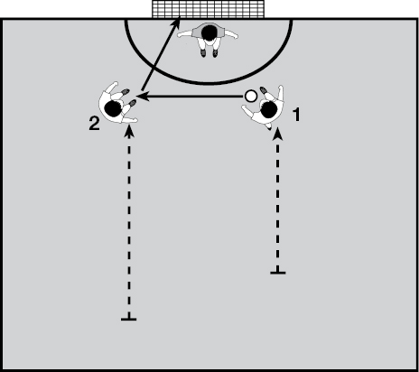
Figure 4.9 The pincer
The wing slingshot
This play is like that move with a Rubik’s cube where you rotate a corner piece without having to pull the thing apart. You will often find yourself with the ball down the dead-end of a wing and this slingshot move can turn that lemon of a situation into limoncello. Player 1, all the way down the wing with the ball, turns back to face the whole field, they pass back to player 2 on the same wing, then immediately hightail it for edge of the D, 45 degrees from the centre of goal. Player 2 passes the ball into this space just as player 1 is arriving. Player 1 takes a touch then lays it off for player 3 who has come bursting down the middle. Player 3 takes a touch then shoots.
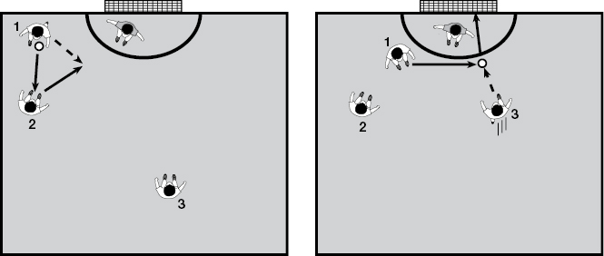
Figure 4.10 The wing slingshot
The wing flip
This is exactly as described above, involving just the two players making the positional switch (and their markers if you progress to that). Player 1 advances down the wing with the ball. Player 2 starts just a little back from the penalty spot, but quickly moves out to the wing to receive a pass. As player 1 passes to player 2, player 1 cuts inside, beelining to the central area in front of goal that player 2 has just vacated (and dragged the opposition away from). Obligingly, player 2 plays the ball into player 1’s path. Player 1 shoots.
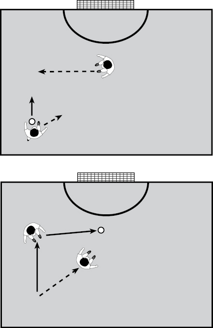
Figure 4.11 The wing flip
Three on two
This is a game more than a sequence of passes to master, requiring five players. It can easily be rejigged for more players, but let’s not think about that now. The game is so easy you may question its merit, but I think it represents the best replication of the crucial final phase of an attack as it actually occurs in the game.
Players 1, 2 and 3 are on attack with only player 4, the defender, and player 5, the goalkeeper, to stop them. The goalkeeper should play ‘rush’, that is, not locked in the D but able to roam and defend. Otherwise the rules of 5-a-side go. The attackers should score, but it’s amazing how hard one defender and a rush goalie can make it. It teaches the attackers that they need to pass, they need to stretch the defender and they need to shoot when the opportunities arise.
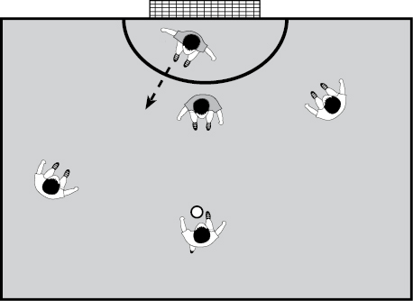
Figure 4.12 Three on two
Summary
It is important to remember that attacks start in random places and that most goals come from counter-attacks. Nevertheless wherever you gain possession, consolidate it first, either backing yourself to dribble clear, or as a standard solution, shielding the ball towards your own goal and passing back.
Once the ball is under complete control every player has a role to play:
- don’t all bunch up, but don’t spread too far apart; keep a web of players connected to the zone of influence
- stagger your positions and don’t let the ball carrier become isolated
- pass the ball around, to the feet or directly into the path of a player who can accept the ball
- look for the player in space
- get in space yourself, either for the next pass or the pass that follows
- you have two other options: make a decoy run dragging the opposition from useful space or drop to cover your last player back, giving them the option to dribble/move forward
- if you are too tired to do any of this: sub off
Retain possession, probing, trying to work an opening for an assist into the death star zone:
- draw your marker in before passing
- pass and then move past your marker into space
- call a one-two
- dribble, but dribble to a pass; dribble to draw the opposition away then pass into the space you have created
- your assist needs to be in sync with the run of your teammate, especially the through-ball from an outfield player or the goalkeeper
- the pincer, drawing the defence and keeper to one side then passing square to your oncoming teammate, is the classic assist
- when you shoot, placement is crucial and power a bonus
- if a ball comes to you at pace, take a touch before shooting if you can
- disguise your shot where possible
- celebrate your goal with a total lack of dignity
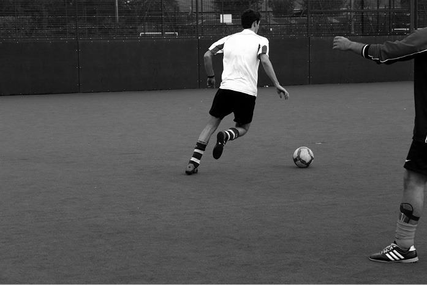
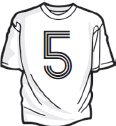
Goalkeeping
Five-a-side being what it is, you all end up in goal at some point. Perhaps you’re the designated keeper, or maybe you’re just knackered because only five of you turned up and you had to use being in goal as a subs’ bench. Either way there’s a lot you can do to make your time in the ‘D’ brilliant and glorious.
Goalkeeping in 5-a-side is easier than you’d imagine. In the classic version of the game outlined in Chapter 2, this is because (a) the goals are kind of small, and (b) nobody is allowed in your area. In other small-sided variants, like official minifootball – where other players are allowed willy-nilly into your box – it’s probably a little tougher, but the goals are still small.
And while 5-a-side is traditionally high scoring, and you may have to turn around and claw the ball out of the mess of bags behind the net a few times, there is likely to be more glory than humiliation. Especially if you follow these four tips:
Tip 1: Crush their confidence
This should probably be the last tip as it’s the most vague, but it’s important to recognize. Shooting is a confidence business, and most people who will be trying to score against you are not great at it. They won’t have much time to fashion the shot and will opt for a bungled combination of power and accuracy. The more you save their efforts or encourage them to shoot wide, or delay their shot, the less they will believe they can score. I’m a terrible sport, some say I’m ungentlemanly, and you shouldn’t follow my example, but when I’ve saved more than one shot from the same person, sometimes I laugh. No one likes to be mocked. As if you
would score with that shot, my laugh says to their tattered psyche. Doesn’t this then motivate them to show me where to stick my laugh? Sometimes. But more often than not the doubt has trickled into their leg muscles and they are more likely to fluff their shots.
You don’t need the snide scumbaggery of the laugh, of course. Just following the other three tips, and other advice in this chapter, will help you undermine a shooter’s calm and cool. This applies to the dead-eyed genius shooters too. If you can soak up just a couple of their shots with some smart goalkeeping, it will lead them to overthink. And thinking is the enemy of football. Well. No. But a footballer in flow, playing the ball by instinct, confident and at one with their motor skills, their thought focused on the ball in motion and the field around them, is a dangerous thing. Whereas Andriy Shevchenko, receiving a pass and visibly cogitating as to what he should do next, less so.
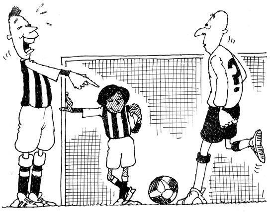
Tip 2: Close down the angles
Ah, now that’s specific. This involves effort and a lot of movement. You may have been happy having a rest on the goal-line, but not everyone is going to shoot near enough to you for you to be able to save with a lackadaisical leg. There are a few elements to keeping the angle narrow. The first and least practised is to occasionally have a look back at where the posts are. Don’t do this when anyone might actually shoot, but you can likely pick a moment. The mind is an impressive piece of apparatus, and once you’ve clocked where those sticks are in a quick backward scan, it’s as though you can sense them behind you. You know where the edges of the goal are and whether you have left the attacker a hole to shoot into.
The next point relates to where the ball carrier is. We can consider three options here:
- approaching from the wing
- approaching from the side but a little more centrally
- approaching from the death star of the central zone
How to cut out death star attacks
As I’ve already mentioned, the death star is the central three or four metres just in front of the goal area. Protecting this area is what your team’s entire defensive game should be based on. No one from the opposing team should enter this space, let alone enter it without a defender goal-side. But it will happen. In these instances the keeper’s positioning and movement are crucial. If your opponents have the ball here and have enough time to shoot, they should score. Therefore your response is not only about limiting the angle, but also limiting the time in which they have to act. Waiting on or near the line in this situation is not the best option. Occasionally they will kick the ball at or near you and you’ll look like a hero, but hoping for this is unnecessarily passive and if they have the ability they can just blast it to either side of you and you won’t be able to move in time (see Figure 5.1). The closer you are to the player, the more of the goal you can potentially cover. So move.
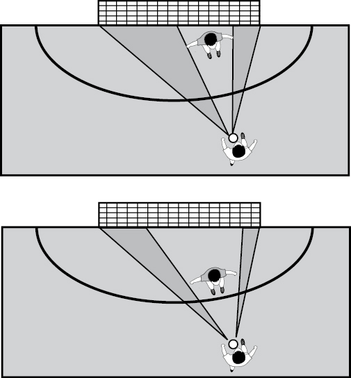
Figure 5.1 Cutting down the angles
How you move is important. You need to make yourself as big a shape as possible and be ready to get a limb to the ball if they shoot before you arrive. If your legs are too far apart, clever shooters will just bang the ball between them. But leaving just under a ball’s width between your shins, you should shuffle hurriedly towards the shooter, stooped over so as to keep your hands beside your knees, palms facing forwards (see Figure 5.2). If they shoot while you’re on the move, generally you will have a lot of the angle covered, so moving any part of your body into the path of the ball – and why is it so often the face or some other tender zone? – you will save a certain goal. If they get the ball past you and into one of the corners, well done them and you did everything right, it’s time to remind your defence that they can’t leave the back door open.
Often, if you are quick enough in anticipation and leave your line straight away, you will have shuffled all the way to the edge of your area and the opposition will not have fired their shot yet. (You probably don’t want to get your toes right up to the edge of your D as you’ll then have less room to move and risk a penalty/free kick for crossing the line.) But here at the edge, your shape and movement now changes. Your attacker is likely to be right in front of you, and you are blocking the entire goal. They are presented with four options only, each of which is more expensive in terms of time than simply shooting would have been, had you stayed on your line. Each second that passes before they can fashion a shot both increases the chance that the cavalry of defenders will arrive, and destabilizes their confidence, forcing them to think about what they need to do.
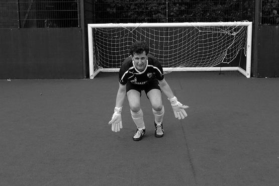
Figure 5.2 The expectant shape
Their first option is to pass. If they have another attacker with them, unmarked in the death star area, your defence is a shameful shambles, but it happens. But still this is not the worst option, as time is spent. This player either has to shoot first time, having received a perfect ball, or control it first and then shoot. In terms of percentages, the chance the new attacker will receive an imperfect pass and either have to control it first or botch their first-time shot is the percentage you have to play for, so rush to try and block their angle. More often the first attacker’s pass will go to someone who is not in as great a shooting position as they were (were you not in front of them), so this is a win.
Ask an expert: the two-v-one
The worst situation is when two players come at you and your defence is a mile off. The ball carrier tries to draw you to one side and then will pass it to their teammate to slot into the open net. I asked goalkeeping coach and author of the Soccer Goalkeeping Handbook, Alex Welsh, what the best thing to do is in this lose-lose situation. Do you simply concentrate on the first attacker, cutting out their angle and then bullrush towards the second attacker as soon as the pass is played? Pretty much. Alex says: ‘My advice is to try to control the situation by angling your body to make play predictable, i.e. force him to pass and then shut the second striker down quickly as you suggest. Also, stay on your feet to delay the attack and give the recovering defenders time to get back.’
Their second and third options are to go left or right around you. If they are a canny player they may feign a shot first before going left or right. You have to stay in front of them, so watch the ball and stay big, moving into a ‘K’ blocking position (see Figure 5.3) by twisting your hips and making your knees fill more space, or – yes, the classic 5-a-side keeper move – going to ground and lying outstretched in front of them on your side, blocking a ground shot with the length of your body (see Figure 5.4, and note the upper arm and leg).
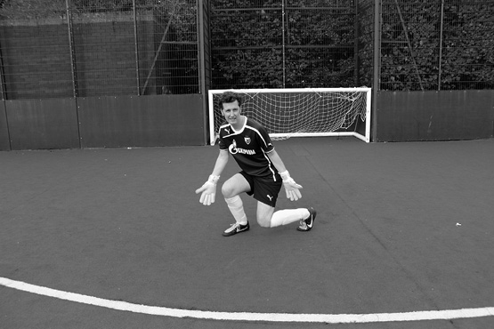
Figure 5.3 The K-shaped blocking posture
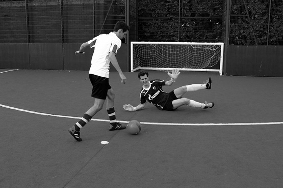
Figure 5.4 Going to ground
Going to ground is like a nuclear-deterrent option. Once you’ve pushed the button, that’s it, there’s no going back. But, unlike the mutual annihilation of thermonuclear war, it’s often quite a good idea that saves a lot of goals. You just have to pick your moment and commit. It may result in a lot of balls kicked at the softest parts of your body at great speed, but these are all saves. Nobody said this was easy, as Coldplay used to sing before everyone hated them. The attacker’s response to the prone keeper has to be to either dribble further left or right to get around the obstacle of their body or to try and chip them. You still have an arm to deter the chip, and you can slither further left or right, but given time they are more mobile and will get around. However, you have probably managed to kill just enough time, and about now they either have to shoot or get banjaxed between two onrushing defenders.
Their fourth option is to try and lob you. Like the chip if you are lying on the ground, they have to execute this perfectly to get past you, and if you’ve talked the attacker into trying the lob, it’s a win. If they hit it off target, fine. If they hit it on target but with too much height, you’ll be able to scoot back in time to save it. If they go too low, you can jump and grab it before it goes over you.
So for the one-v-one attack down the middle, the choices are clear because it’s do or die:
- move towards the player at speed, cutting out the angle
- adopt a shuffling gait, legs not too far apart, and hands at your sides
- always be ready for the shot, moving any part of the anatomy to block
- at the edge of your D adopt a K shape to shuffle left and right and be ready to … (as above)
- drop onto your side, keeping as much height as possible, one knee, one hip and one elbow on the ground, both shoulders up and one knee and one hand high (as in Figure 5.4)
- delay their shot until the cavalry arrives
There is one more thing to think about with the death star attack in terms of angle. If the attacker is coming from the very centre, it’s obvious that you simply get as central as possible as you approach them, and that they have most of the goal to aim at. If, however, they’re coming from a slight angle, for instance in line with one of your posts, you have to watch the angle of your approach. Imagine a triangle with the ball carrier at the apex and both of your posts as the other two points (see Figure 5.5). As you approach you want to be as central in this triangle as possible. Getting to that spot in front of the shooter is less important than getting across to cover the angle. The near post – that is, the post nearest the shooter – should be simpler to block as they can see less of it. Nevertheless, you shouldn’t assume they will try to shoot across you. Instead, be so Zen you’re primed for all possibilities: a collapsing or diving save to the far post, a swing of the arm to block at the near post, or a drop of the knees to block the nutmeg.
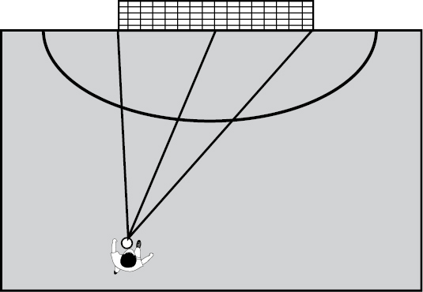
Figure 5.5 The triangle from attacker to goalposts
Cutting out the attack from the wing
This situation is the opposite of the death star threat. If anyone tries to shoot from the wing they should be wasting their time. Should be. But this relies on you being in the right spot. If anyone is coming at you from along the backboard of the wing (see Figure 5.6), you should be physically touching the post, so that there is NO way they can score at the near post, nor can they score by deflecting it off you and in. They should not be able to see any of the goal, and their only option should be to pass. Such a pass is, of course, dangerous, depending on the marking at the death star and the far side, and it would be good if you can intercept it. However, that is priority B. Priority A is to keep yourself hard up against that near post giving them no angle for a shot.
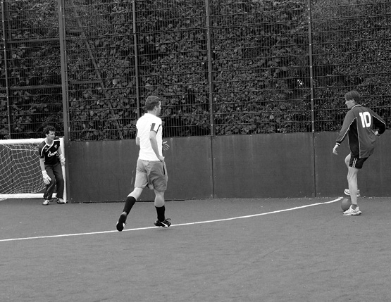
Figure 5.6 Cutting out the attack from the wing
Not all approaches from the wing are at so acute an angle, of course. Think of a player on the penalty spot as being at 90 degrees to the centre of the goal-line and a player right on the wing as being at 0 degrees. The closer the wing-approach is to the 90 degrees point, the more of the goal they can see, the more danger they present, and the more vigilant you must be to close down their angle. As a rule of thumb, the higher the angle, the further off your goal-line you should be. (Note the arc of positions in Figure 5.7 depending on where the attack is coming from.)
As before with the slightly off-centre death star attack, visualize the triangle from the attacker to your posts, position yourself in the optimal place in that triangle and prepare yourself to save all three possible shots: the shot to the near post, the shot straight at you and the shot across you. Note: I don’t say to position yourself in the centre of the triangle, but the optimal position. Unlike an off-centre death-star attack where your central positioning is about putting them off and forcing them to think about which side to kick it, the lower-angle wing attack is generally always saveable in the little goals of 5-a-side. Often, the length of your body outstretched in a diving save (or a collapsing save at the lowest angles) will fill the possible shot triangle. Therefore the optimal position can be closer to the near post, ‘showing’ them more space to shoot across you. This means if they take the bait and shoot you are ready to dive/collapse towards your far post and cover the shot. And if they try to squeeze it in at the near post, as long as you’re equally ready, you should have that covered with a leg or a hand (see Figure 5.8). This is the simplest path to glory in 5-a-side.
Figure 5.7 The arc of goalkeeper positions
Positioning for the angled attack
For those attacks that are not dead on in front of you and not directly from the wing but, say, at a 45-degree angle, you are basically morphing between the positioning of the other two types of attack. Look at Figure 5.7 again. You want to come off your line to limit the angle, and you want to position yourself in the midline of the triangle between the ball and your two posts.
Figure 5.8 Showing the wing attacker where to shoot
Tip 3: Communicate
The easiest way to stop a goal is to not have to save the ball at all. In 5-a-side you can’t be a fashionable sweeper-keeper like Manuel Neuer – if you’re not allowed out of your area – but using a bit of full-volume delegation you can get others to do the work for you. Cloistered in your D, the game in front of you can feel like chess. You can see all the players, all the spaces, all the defensive holes, but you can’t enter the chessboard yourself. So, send in the pawns. The information you have that they don’t is crucial and needs to be communicated.
If all four of your outfield players have poured forward in attack, all calling for a forward or cross-field pass, with not one of them hovering behind (which can also be a great place for an ‘attacking’ pass), then yell. Tell one specific player to immediately drop, and keep yelling until they not only come backwards, but position themselves centrally. (This is covered in Chapter 4 on defence – being central readies a defender for an attack from either side.) Possession can turn over quickly and you need to have at least one player presenting an obstacle for any ensuing breakaway from the opposition.
In defence, if there is an unmarked opposition player anywhere near the central attacking zone, move a pawn there pronto. Likewise, if there is one whole side of the pitch unmarked (in which the opposition have at least one player), make the team aware of it.
If your team is defending a free kick near your goal, get someone right in front of the ball, and alert your players to any other dangers: lurking players unmarked, runners, spaces. Your team should be able to sort this out themselves, but remember, you have the best angle to see everything, and it doesn’t hurt to share. At worst, you’ll tell them what they already know.
If you see someone shaping to shoot, call it. I like to yell: ‘Don’t let them shoot!’ This not only gets the message to your defender to muck in, but it also puts the ball carrier off. Similarly, if you think a player is planning to take on your defender, dribbling at speed, or trying to double back towards the centre, announce it. Again, yelling ‘He’s going to run!’ or ‘He wants to beat you!’ not only primes your player to counter the move, it also de-motivates the opposition from doing as you tell them.
But communication isn’t only about organizing your defence to limit dangerous attacks and shooting opportunities. Your whole-field vision is also helpful in attack. Call ‘Man on!’ if one of your players is unaware of an approaching opposition player, especially if they have just received the ball from you, and ‘Time!’ if the opposite is true and they can look around and consider their options.
In broken play when trying to transition the ball from defence to attack, this can be crucial. Players are often in odd places before transitioning, and the most important thing to do is get the ball – knee-jabbed, toe-poked, back-heeled, headed, whatever – to someone who has the time to bring it under control. In these hurly-burly moments, when everyone is scrabbling to get to the ball first and get the vital touch, many players will just try to knock it forwards. This might work out, of course, but some clear and smarter direction is helpful. If a player has the opportunity to shield the ball back towards their goal and then pass back to you, call that play. Or, if this option isn’t on due to a lurking attacker between you, make it clear this is not an option.
Things goalkeepers yell
Every game I generally run through the same calls to my teammates. Many of these I think are helpful. The one thing I yell that is definitely unhelpful is ‘Shoot!’ No one needs to be told this, and it can put them off. ‘Time!’ is a better call. The following yells are good for starters, but make them your own, keep talking and keep it positive:
‘Keep him out there!’ (Called when your defender has an attacker trapped against the wing in sterile space.)
‘Time!’
‘Man on!’ (There is probably a gender-neutral version of this, and I applaud you if you employ it, but calling this soon enough for your teammate to react is what’s important, so – whether man, woman or a bit of both – make the call your teammate will understand.)
‘Talk to him!’ (Used if an isolated teammate is struggling to keep the ball and needs support and direction.)
‘Get goal-side!’
‘Drop!’
‘Mark up!’ (This doesn’t need to indicate that each player should mark somebody, but that everyone needs to transition to defensive responsibilities.)
‘Look up!’
‘Mike, you’re last man!’ (It’s important to specify the player here.)
‘I’m here if you need!’ (Offering a back-pass.)
‘To me!’ (If a back-pass is the best option …)
‘First time to me!’ (… and time is of the essence.)
‘It can’t go to me!’ (If a back-pass is against the rules in the situation, or if the pass might be intercepted.)
‘He wants to shoot!’
‘Don’t let him shoot!’
‘Watch the runners!’
‘Use Andy!’
‘Go yourself!’
Tip 4: Distribute safely
There will be one point at least in any game where the keeper’s distribution lands the team in hot water. You can’t get it right every time, and a lot relies on your outfield players being in unmarked space. So don’t beat yourself up when, not if, you do it.
‘Safety first’ should always be the motto for distribution. This means that accuracy is crucial. Roll the ball to the feet (if facing you) or into the path (if moving and unmarked) of your teammate:
- Don’t roll the ball to a player who is marked in front of your D, especially if you are trying to roll it into the path of where you’re expecting them to move.
- If the opposition are marking well, you should be aiming to get the ball to a player in sterile space, for example, on the wings, or immediately to your left or right.
- Roll the ball at medium pace. Make it easy to control, but not so soft it risks not reaching your target, or arriving so slowly it can be easily intercepted.
- If your kick is more accurate than your roll, pass the ball out with your feet. If vice versa then versa vice.
- If rolling, align your body with the direction of the roll, as in ten-pin bowling (or bowls come to think of it), sweeping your arm along the side of your body.
- The sling throw (like throwing a discus) is good for power on a longer throw, but has less accuracy in my experience, so make sure the path is unobstructed and you are definitely getting the ball a long distance if selecting this throw.
- There is no harm in going short. If it is risky to get the ball further, don’t do it.
- But there is no harm in going long if the furthest player is the least marked and in a direct unobstructed line of sight.
- Call to the player you are passing it to. You needn’t be looking at them when you call. All players should be expecting the pass, but occasionally they will switch off.
So, safety first. Very important. Safety. First. But … and this may sound contradictory, the first thing that a keeper should actually think about in distribution is attack.
Goalie on attack
As the keeper you have a unique opportunity, you are completely unmarked, and you have at least five seconds before the ref thinks of urging you to ‘Use it!’ The best pass you can make is straight up the middle and into the path of an attacker surging towards goal. You won’t often get a chance to make this play, and it should never be attempted if the space isn’t clear. But if your team have worked one of the plays in Chapter 4 (see ‘Attack from the back’) and have dragged one or more defenders to the wing, leaving a hole through the centre, this can be your swiftest path to goal, and you’ll need to react fast. Breakaways are the most dangerous types of attack, and there is no reason they can’t start from the keeper if the opposition are out of position.
Almost as good as getting the ball up the centre to the feet of the breakaway attacker is getting the ball high to a player on or near the wing. Yes, this is sterile space, but if high enough, most of the opposition will still be closer to your half and the receiver of this kind of pass can either attack the goal themselves if unmarked, or hold the ball up and bring others into play with a square ball, a cross-field pass or, often the best move, a pass backwards followed by a run into the centre.
Remember you do not need to release the ball from where you received it. In an attacking roll-out, while time is more of the essence, you can still move quickly to the other side of your D if that is where the line of sight is for the long pass.
The midfield roll-out and next-best options
If the long safe ball isn’t on, the next option you want to consider is a pass to central midfield. This needs to be accurate, and a hospital pass to a marked player in the centre of the pitch is about the worst thing you can do. It’s fine to pass to someone facing you with a marker behind them (a) if they know the marker is there, (b) if they are a player who is comfortable on the ball and good at shepherding it away from defenders, and (c) if you pass to the foot closest to you (see Figure 5.9). Ideally you’d also want there to be a player closer to you that they can pass back to.
Figure 5.9 Pass to the foot closest to you when a player is facing you; pass to the foot furthest from you when they are facing away
It’s likely that central midfield is a difficult place to get the ball, so you then look for teammates on the wings in the central third. Failing this you’ll drop the ball off to a deep defender. Figure 5.10 shows various positions into which, in an ideal world, your outfield players have learnt to position themselves in readiness of receiving your roll-out. Passing to the player to the side of the D is always a great last-ditch play, as any opposition player trying to mark this pass will be vacating space in the centre and helping clear the field.
Not every outfield player will be unmarked (or trying to get into space) and in your line of sight, and you just have to pass to the safest option you can see. If no one is on, yell. Tell someone to come closer.
Figure 5.10 The options for a roll-out
If someone tries to block your roll-out from the edge of the D
It’s actually not a stupid thing for an attacker to try to intercept the roll-out. As an attacker, if you win the ball with only the goalie to beat, that’s a massive pay off. It also puts the goalie off, so that even presuming the goalie throws or kicks the ball past you, it may not go exactly where intended and a teammate may be able to compete for the ball. This can only really work in 5-a-side variants where the goalie isn’t allowed to release the ball over shoulder (or head) height, otherwise they’ll just chuck it over your head.
An interception in front of the D should never happen really, and will only happen through the goalie’s mistake. The main part of your response as goalkeeper to a hopeful interceptor dancing in front of you should be to stay calm. You will attempt to roll the ball left and they’ll move to block. You’ll move right; they’ll move. Personally I like to do this a couple of times to wear them out, and then smile. Exude confidence. They’ll feel a little silly. You can even bounce the ball off their shins and back to you one time if you’re really feeling it, but showboating is probably not the wisest idea.
Really all you need do is throw the ball past them, and probably at hip height where it is difficult to get a leg up to intercept. I like to feign with one arm then transfer the ball to the other and roll it past the player to your nearest teammate. Dashing right across your area to the other side also works. You have total control over where, when and how high you release the ball. They are operating on hope. So trust yourself, wait for your moment and get it past them.
It’s important to work out who you are distributing the ball to. The attacker can’t see where your players are without looking away from you. So pretending you are sending it one way to an invisible player, then slinging it to your actual teammate tends to work.
A great option is to get a teammate to help, coming to the very side of your area. The hopeful ball-stealer can then either rush to mark this player, leaving the area in front of you open, or you can drop the ball to your player at the side for them to carry or pass upfield.
Yesterday I saw an ice-cool goalie (with fingerless gloves no less) sling a ball out behind his back, firing it out his left side using his right hand … while looking the other way. It went right to a teammate. A blue steel moment. Please try this, but practice it first so as not to kamikaze an own goal off your backside.
Rules
It’s vital to know the rules that relate to goalkeeping if you’re in goal, so make sure you’re aware of them before the game starts. Remember that rules vary depending on the variant of 5-a-side you’re playing. Make yourself aware of what these might be for the venue/league in which you are playing, as any of the following might catch you out:
- You are not allowed out of your area. This is pretty common, and while a ref might forgive you once, or if you come out through momentum having touched the ball inside the area, it is often punishable by a penalty or indirect free kick. Don’t do it.
- All passes out of goal must be under shoulder- (or head-) height. Again, some variant of this rule is pretty universal. The underarm roll is the safest way to always avoid this. A kick, drop kick, punt or sling-throw can easily go high. A javelin-style sling, or any overarm throw may be penalized automatically.
- All passes from the goalie must be an underarm throw. Not common this one, but it got me in one version of the game I played, thinking there could be no possible infringement for someone kicking the ball in football. Again, confirm the local rules. They’ll be written somewhere on the internet probably, so read them.
- You cannot accept a pass back from the player you have passed it to. Not all 5-a-side rules forbid this, so be sure before you play. This comes up mainly if the person you’ve passed to has held the ball for a few seconds while dribbling away from an opposition player, who now is threatening to get the ball. Call it loudly: ‘It can’t go to me!’ If someone still accidentally passes back, chillax. If the ball is going into the goal then you have to stop it and accept whatever punishment the ref comes up with. But if it’s going wide, just follow it, it may roll out of the area again and then no foul has occurred.
- No other player may enter your area. This one is more about you communicating to your outfield players in defence when they risk planting a heel accidentally into your area. Some refs are hyper-vigilant about this and the punishment is often a penalty, so warn any player about to bungle defeat out of the jaws of a boring draw by clodhopping into your no-go zone.
Technique
Good technique will make anyone a better goalkeeper. You probably weren’t a goalie that often as a kid, so it mightn’t come entirely naturally, but the only way to learn is to do it. It’ll come, especially if you go against your footballing brain’s default inhibition and use your arms and hands.
I think it’s best to think of technique on three fronts: body positions, saving techniques and distribution techniques. The body shapes shown in the ‘Tips’ section at the start of this chapter pretty much cover the subject and will get you a long way. You’re also going to have to spring into action and make a save.
Saving with your hands
If the ball comes straight at you or just to the side, get your body and as much of your hand (or preferably both hands) behind it. Having gotten one hand to the ball (and behind it), get the other hand onto it too as soon as you can to make sure it isn’t going anywhere.
The collapsing save
I am a huge fan of this kind of save. Basically it is exactly what it sounds like. If a shot is coming just to your left or right, you collapse to the side onto your shoulder and take the shot into your hands and onto your chest. This way you ensure your entire body is behind the ball. This kind of save also covers you for slight misjudgement of the ball’s trajectory, your body making a block, so that if it hits you in the knees or the face, you’ve still saved it.
The biggest danger is dropping too late, and the ball slithering under you and in. Your starting position, with the small 5-a-side goals, should already be a little crouched, so just be ready to drop that final half-body length, keeping your eye on the ball, and ensuring you get your body down in front of it.
If you have your angles well covered and an attacker is coming from an acute angle, you should be ready to make the collapsing save if they try to shoot across you. This readiness makes the save easier. In fact, whenever you see someone shaping to shoot, be immediately ready to collapse. Or, if it comes to it, dive.
The low diving save
In a sense this is the level-up version of the collapsing save. Again you move sideways, let’s say to your left, but this time you push off with your feet, your arms at full stretch to your left. Your objective with this save is not to catch the ball, but to deflect the shot wide (or over). Keep your hand strong, as the ball will be moving. This really is your moment of glory, and in a 5-a-side goal it’s really not hard. Remember, however, to get up quickly. The ball could still be in play, and there’s nothing worse than having made the most glorious save only to have some lummox stroke it into your open net straight after. Get up, block off the angles, get your hands in place.
Saving with your legs
If you’ve played a lot of football as a kid, you’re probably pretty handy with your feet, and maybe more comfortable trying to save with your feet than your hands. Fair enough, and good luck. It could be that with shots that other keepers might take with a collapsing save, you go for with an outstretched leg. This does involve less of your body behind the shot, but keep your eye on the ball and keep focus, it can be just as effective. Don’t let the ball hit you anywhere but in the centre of the foot. You may also want to try getting your whole leg right down onto the ground as if you were diving with an arm, to block a larger area. You will always need to be on your toes and not too heavily on one foot, like a jaguar or a real estate agent, ready to pounce.
The knee save
A common save for all low shots in 5-a-side is the knee save. This is where the shot threatens to go through your legs for an embarrassing nutmeg goal. Your reactions to these will improve the more you do them, but basically you just drop your knees into the ball hitting it downwards. The knees have all the weight of your femur, hip and upper torso behind them when dropping like this and you will impart a fair amount of energy to the ball. The action is basically the same as dropping to your knees. It’s a nice one for a drill, if anyone has the time to throw a few balls at you.
Antici …
… pation. Goalkeeping is massively about anticipation. This is more than expecting someone is about to shoot. It’s about getting into position when you see the opposition are about to have an opportunity to shoot. Often this will mean being high in the D just as an opposition player breaks through your defence or just as they collect the ball to go one on one against you. Ah, but you are already there, blocking their angles.
Distribution techniques
The roll-out is your go-to distribution technique (see TIP 4). In a nutshell you roll the ball as in ten-pin bowling keeping your arm in line with your body. You’ll need to practise getting power into the motion while maintaining accuracy. There is a more powerful type of throw that some variations of the rules allow, the sling throw:
The sling throw
This is basically a discus-style throw. With a short run-up you release the ball from one arm, which swings at shoulder-height, parallel to the ground. You should be able to throw the ball to halfway easily, without it touching the ground.
Position in general play
Where should you be in general play, when the ball is nowhere near you? I would say halfway between the goal and the edge of the area, moving left and right a little as the ball moves so as to be ready to cut down the angles. If the opposition have the ball it’s good to adopt a ready stance (see Figure 5.2), and always stay on your toes.
Remember to glance back at your posts to check your positioning from time to time, and never just wait either on your goal-line or right at the edge of your D.
Drills
Nobody ever wants to do drills before a game just for the sake of a goalie’s technique, other than shots on goal. But at least doing this you can practise your roll-outs, and let in a few goals to build the confidence of your attackers. However, practice always makes … improvement. So if you can organize a few training sessions and get someone to run some saves with you as part of it, that would be great. Other than saving practice, as detailed below, two of the drills from Chapter 4 are good for goalkeeping: the ‘three on two’ drill and the ‘attack from the back’ drills.
Pens
For this drill, you get everyone at the practice taking turns at penalties, with any goalkeeper taking turns trying to save. Gloves are recommended. This drill helps players get used to the one-step only rule of penalty taking, and gets you used to saving them.
I have two pieces of advice. The first is that the angle of the standing foot (the foot they’re not going to kick with) often gives away where the shooter is intending to go. If the standing foot is angled slightly towards the left, they are likely to shoot left; if to the right, then to the right (see Figure 5.11). You should mention this to your penalty-taking teammates so that no opposition goalkeeper can rumble them.
Figure 5.11 The penalty taker’s foot.
Secondly, you need to have a penalty saving style. I recommend just picking your side and diving, spreading as much of your body across the gap as quickly as you can. They will probably shoot low so as not to risk going over. The alternative method though has a lot to be said for it. Be ready, be on your toes, and watch them. At some point during the kick they will give away where they are kicking. If you are patient and back yourself, you can see what they’re going to do and react in time. This may sound unlikely when they’re shooting from such a short distance, but with just the one step they won’t get a massive amount of power behind the shot, and if it’s not right in the top corner, you have a chance.
Collapsing save drill
This drill practises the collapsing save technique, but also the art of getting back up to your feet quickly:
- position yourself against a post with your helper on the penalty spot
- your helper has preferably more than one ball
- your helper rolls a ball to the opposite side of the goal at medium pace, you move across and collapse onto it, get straight up, roll the ball back and wait against the post on the other side for the drill to repeat immediately
- make sure you save the ball against your chest and get both hands to it simultaneously
- you should aim to do this as quickly as possible
Figure 5.12 The collapsing save
The drill is about getting the muscle memory for the technique, but once you’re feeling comfortable the helper can quicken the pace, kick the ball, or occasionally kick it to the side where you’re waiting to make sure you’ll adapt.
Summary
Goalkeeping is easy, and in many ways you can credit yourself with any win. Shout a lot, learn to save with your hands, lie down occasionally … ignore everything above and instead read Alex Welsh’s The Soccer Goalkeeping Handbook. It’s brilliant.
Playing as a team
If you are considering skipping this chapter as you have better things to do than learn how to suck eggs, forget it. Pucker up, my friend. Yes, it is the height of obviousness that to win at 5-a-side you have to play as a team. And for that very reason, this chapter is probably the most vital in the book. If you can improve your team-play and the understanding between your teammates, you will win more. If you can put a lid on any grudges or onfield bickering, while learning to appreciate how you can all get the most out of each other’s skills and styles of play, you’ll enjoy your football more and enjoy playing with people who appreciate what you can do. It will be a sickening love-in, and ideally a goal-fest.
Team audit
The first step is something that everyone on your team will have already done, at least unconsciously, if you’ve played together a few times. But it can really help to consciously spell it out, systematically looking at what your team has got in its assets column. You need to do a team audit. This involves thinking about each player and looking at what they are good at, what role they gravitate towards and how versatile they are to changes in role.
Imagine you are writing the player stats for a generic footballing game (I’m trying to avoid saying FIFA; ah, too late). Who wins for pace? Who dribbles/passes/shoots the best? Who has the best defensive instincts? Who is the best in goal?
Physical skills and attributes
The easiest thing to think about in your audit is what physical skills everyone has. Some of these you might even want to measure. For instance, if your team are having a practice session or have arrived half an hour early for a game, perhaps, after warming up a little, organize a little race. I suggest a 20-metre sprint. There will be one clear winner, and one clear candidate for goalkeeper. In fact, you could organize a whole generic multi-skill competition (mini-Olympics-cough).
Other feats in your ‘sports day’ might be:
- shooting from the centre spot (the winner getting the most in the goal)
- receiving a long, fast pass while running (with a subjectively judged winner; or a knockout competition, where any bad touch knocks you out and you keep running the drill until only one player remains)
- dribbling around three cones (or bags) and back (the quickest after three attempts is the winner)
- keepy-uppies using just the less-comfortable foot (the highest number after two or three tries wins)
- trying to pass the ball from the halfway spot to stop exactly on the penalty spot (the closest after two goes wins)
- on a full-size field, trying to kick the ball the furthest, say from the goal-line, before its first bounce
- or, if you’re really keen and comfortable with each other, testing strength and endurance via a piggy-back race the length of the pitch
The idea behind these kinds of assessments is to find everyone’s strengths, not just to find your champion, so if someone is third on pace and second on keepy-uppies, this is important data. I also feel I need to say that this should be done for fun, and not to demoralize anyone. Make sure everyone concentrates on the positives. Make a checklist of assets for each player (see Table 6.1. You can use this, with or without a mini-sports day or, of course, devise your own.
I think the skill attributes to think about for each player are game-related and role-related, such as:
- pace
- accuracy of passing
- accuracy of shooting
- strength
- the ability to dribble
- the ability to receive a pass and control it comfortably when still
- the same but when on the move
- the ability to shield the ball comfortably
- the ability to judge an interception
- the ability to tackle successfully
Experience vs skill
There is an important intersection of skill and experience. By experience I mean general athletic habits as well as experience at 5-a-side (and the concomitant skill-level that will bring). In terms of this intersection, players fall somewhere between these four categories:
Fitness
It’s important to recognize in your audit where everyone is in terms of fitness. This means 5-a-side fitness, not any sort of fitness. Someone might be ready to run a marathon, but five minutes of the intense sprinting that 5-a-side can demand and they’ll be frothing at the mouth. Some people are just built for the stamina requirements of 5-a-side, others work hard to maintain fitness, and the majority of us will never really improve. Who in your team can play at full intensity for the longest? Who is it better to sub on and off to get the most from?
Player types
As well as the physical attributes and skills of your teammates, you need to think about what type of player each represents. Are they a dogged harasser of any ball carrier? Are they always in space asking for a pass? Do they naturally hang back or naturally drift forward? It’s no good trying to use square pegs as Philips-head screwdrivers or whatnot. Everybody needs to fill the last-player-back role at some point, but the player whose overriding instinct is to get as far forward as possible is not the one to assign as the mainstay for that role. The reverse is obviously true too. Someone who is defence-focused shouldn’t be expected to be a goal poacher. Players can learn, and they can adapt, but Rome wasn’t built in two 20-minute halves. It’s not defeatist to look at what you’ve got, the players as they are, and accept it.
Have a think about these slightly flawed archetypes; you may have one on your team:
- The lazy front player. Walking back across the halfway line fills them with nausea. They only want to attack, which they’re good at, but having lost possession they’re not in a hurry to track back or recover, preferring to offer an outlet for a counter-attack. But what goals they score!
- The ‘technical’ midfielder. Strangely calm, they’re always in a position to receive the ball, and will not release it until a clear pass is on. They have a great first touch and have the vision in defence to mark out the danger in the centre. Perhaps not the fastest between two points.
- The gung-ho runner. No lost cause is officially lost until it gets a certificate to prove it. This player will chase down any ball, and they’ll beat their marker to a pass or die trying. Their touch may be loose, but they respond to clear communication.
- The psychic defender. They will never be nutmegged and the only way around them is to pass back. They are generally solid individuals who will back their physical strength in a one-on-one. Best of all they know exactly when to bullet forward and somehow be first to the loose ball.
- None of these may fit, but try summing up the style of each player on your team, what sort of player are they. We’ll work out what to do with them shortly.
Psychological and leadership skills
There are skills to audit beyond the physical. Some players have what Paul McVeigh calls (in his fantastic book on footballing psychology, The Stupid Footballer Is Dead) ‘intensity with control’. That is, they play with total passion, without allowing it to overspill into berserker rage or loss of focus on the game at hand. Others have eternal optimism, believing until the end that the game can be won.
Leadership skills are harder to define. I think it’s good to have a captain, because someone needs to make decisions, and if everyone knows that person is captain, it makes the process quicker. Ideally, off the field the captain will listen to all points of view and not be a psychotic autocrat, but on the field it’s better that decisions are quick and final. Captains come in a few useful forms. What can make a good one though is someone who everyone trusts, generally because of a mix of charisma and integrity. They don’t necessarily have to be motivational speakers, or the man with the plan – though that doesn’t hurt, of course – but a good captain leads by example. Players who have the psychological strengths mentioned above, belief and intensity with control are ideal.
But leadership doesn’t end at the captain. Perhaps you have read this book and a bunch of blogs and tactical manuals and feel obliged to be captain as you have a vision of how to improve your team. No obligation exists. Look to the mafia: every boss needs a consigliere, someone to consult. You can help shape the captain’s vision or the team’s vision, without having to be the boss.
Other types of leadership on the field can involve:
- leadership in defence: a ‘centre back’ telling people who is marking whom
- a goalkeeper giving players the benefit of their view of the whole field
- general encouragement following a good set of passes or a near-goal
- calling a one-two (someone has to) or a specific play
- being bold enough to run at the opposition with the ball at your feet
- taking responsibility for a mistake
Reverse audit
It’s not all about warm fuzzies and rainbows. Your audit also needs to dig down beyond your assets to your liabilities. All of us have these. Who in your team has an erratic first touch, a dreadful shot, a tendency to pass blindly under pressure, who will only accept a pass to their feet, how many will never jink, feign or jelly-leg a stepover, how many will be slow to track back?
This is where Table 6.1 (below) can help. If you give everyone a score out of four for each category relative to everyone else, a picture will emerge. For each category someone has to get a ‘1’ and someone has to get a ‘4’ (and someone a ‘2’ and someone a ‘3’). Imagine a ‘4’ means you are one of the two or three best, and a ‘1’ means you are one of the two or three worst. This isn’t about making someone feel like crap, so it doesn’t need to be shared, but if you’re all thick-skinned enough, it wouldn’t hurt for everyone to fill it out and then see how the scores average out. It’s vital to remember that one player being better at football than another does not mean they are more important than anyone else on the team, and it doesn’t mean their ideas are better (though they may be). During the game you need all five players, and you need to rely on everyone.
Table 6.1 Example player audit sheet
Universal 5-a-side types
An interesting aside in my 5-a-side research was finding the following 14 stereotypes of Italian 5-a-side players (it’s a YouTube video, Google it). I think it shows how universal the light-hearted side of the game is. You will know one of each of these:
- Il ritardatario – the laggard, always late
- L’allenatore in campo – the on-field coach
- Il pezzato – literally ‘pied’ as in having two-colours, but meaning the player who is immediately red and exhausted
- Il falloso – the foul waiting to happen
- Il premuroso (forse dopato) – the hyper-vigilant player (might be on drugs)
- Lo specialista – the dead ball ‘specialist’, in their own mind
- L’esaltato – the ‘elated one’, who over-celebrates every goal
- Il lamentoso – the plaintive voice (always moaning to the ref)
- Il rissoso – the player with the hair-trigger for a fight
- Quello che ci crede – (a little lost in translation here, but) the player with the immaculate kit
- Quello che ci prova – the player who never gives up
- Il fenomeno ... che non combina mai un cazzo – the phenomenon: ‘all skill, no end product’ is the G-rated translation
- Il veneziano – the ‘Venetian’, who never passes
- Il pezzente – the beggar, who never remembers to bring money
Pre-game roles
If you look at the box on playing roles in Chapter 1 (TEAM ROLES, and in Table 6.1 above) you can get a good idea of the options to hand. Once you’ve really thought about your audit, the fun of assigning roles and putting tactics together begins. This has to be suited to your own players, and no matter what anyone says, there is no secret formula. Nevertheless, here are a few possible ideas.
For teams with the psychic defender (or with two of them) and some pace and touch elsewhere in the team, your strategy is likely to revolve around the one reliable player sitting back, while the other three outfield players run high with impunity but switch as necessary between attack and defence. If someone on the team has a finisher’s eye for goal, this is probably the ideal set-up. You’ll be able to hold a lot of possession in the attacking third and have options when it comes to the final ball.
For teams with little pace, no obvious defender, but a technical midfielder (or two), a counter-attacking model will work better. Everyone becomes a defender, marking hard within their own half, soaking up the opposition’s passing until a loose ball is seized upon or the goalie picks up an easy shot from distance. No one from the opposition is allowed near the centre of your D, and they are instead shown to the flanks or back where they came from. Positions rotate as necessary for marking. Once in possession, the counter-attack is assessed. If it’s not on, the ball is passed to the feet of the player in space, always selecting the safe option, probing, waiting.
For teams with the lazy front player: fire them. Well, no. In fact, this player can be very useful, but only when recognized as such. There is no point getting apoplectic about them being left behind by the player they were supposedly marking for the hundredth time. Obviously it’s not ideal, and everyone needs to defend. But while they’re on the pitch, station them as high as possible, moving in looped runs from left to right to lose any marker. Then simply get the ball to them. Everyone else needs to be primarily defence minded, and it will help to have one runner who dashes from attack to defence and back again, being the link between the zones. These three strategies: ‘carefree attackers’, ‘bus-parkers’ and ‘long-ball merchants’ fit different groups of players. Your group is different again, but it will always pay to have a sense of how you do things as a team, and for this to suit the players you have.
As mentioned in the introduction, knowing what everyone does as the phases of play change is key. For instance, perhaps your best player sits in the heart of defence when soaking up attacks, but always bursts forward having intercepted the ball, and you all know someone needs to drop and cover the last-player-back position. Or perhaps you know, having lost the ball high up the field and the opposition are trying a breakaway, that player A sprints back to help your centre back, player B jogs back and player C gets themselves in space for the release pass if play transitions again.
You need to know your strategy in attack and defence. In attack: is it about the rapid break with close passing, or do you stretch play and use your own half, passing long but accurately to try and work space for a classic pincer attack (see The pincer)? Or do certain players who win the ball, with less passing accuracy or cool under pressure, know they have to get the ball safe first, and pass back, while others have a freer rein? In defence: does tight marking work for you, or do you rely on standing off, marking the routes to goal and blocking off the angles for the pass? You can’t do both at the same time, so it is better to get it clear with everyone.
Generally your team will have between five and seven players at the game. So, you’ll have between zero and two substitutes (and if zero, perhaps you rotate who is in goal). This means everyone has to know not only their primary role, but their secondary role when certain other people are off the pitch. When Sam is off, Deepak becomes the centre back. When Ivan is off Lee primarily defends the left-hand side, and so on.
Mid-game reassessment
As the game progresses you will learn a lot about the other team. There’s no point being rigidly focused on your game plan if the other team have a player who is slipping through your net every time.
It can be good to assign someone specific to mark a danger player, or at least for that player always to be marked tightly when their goalie has the ball. If they are quick and silky-skilled, make sure everyone is aware not to over-commit but to stand them up, blocking their route to the centre of the field and towards goal, and especially to stay with them after they have passed.
It may also be that a role you assigned one player is not working, or simply isn’t working today like it normally does. Consider a change. Why not?
Attack and defend as a team
The entirety of Chapter 3 was devoted to defending as a team, but it bears repeating. In every attack, no matter how far forward you are, you must be ready to transition quickly to defence. This involves making sure no player is overloaded. If you all mark somebody, they’re going to have a much harder time than if someone is left unmarked.
Thinking as a unit in defence with the left, right and always the centre covered helps. Look up, see if there is a hole or if an opposition attacker is unseen in space. Communicate and form a hive-mind. You have your own area or player to mark, but you are also part of a wall of defence. Teams used to handing over markers between each other and holding their zones, tend to be very hard to break down.
Individual effort counts for a lot in 5-a-side. Not every goal needs to get a touch from every player, and if the solo dribble and shot is on, sure, go for it. Space, however, is always at a premium, and the smartest goals use the entire team.
Morale
Maintaining belief and team spirit may only help a little toward a win, but it will always make a game more enjoyable. We all play to have fun so there is no point:
- wallowing in the fact that you are being beaten: never let your head drop, always play to score the next goal
- getting angry at your teammates for not doing what you would want them to: every decision is down to the individual, you don’t always know best, let them enjoy their game
- bickering: if someone has a yell at you for something and the ball is still active, don’t reply, play the game at hand (you can discuss it later and probably more calmly)
This will not be as easy for some players as others. So it’s important that the players with the mental fortitude help everyone else to keep their eye on the prize. Praise good play, and make it clear you are enjoying fighting for the next goal.
Idiots
Some people on your own team will drive you crazy at times. They’ll try and dribble their way out of trouble when a safe pass is on. They’ll shoot from ridiculous places. They’ll call, ‘Time!’ when there’s none. They’ll have a go at you for not passing to them when not in a line of sight. Idiots. But what do you do?
Give them a piece of your mind? Tear them a new one? Some would say so. I suggest you laugh it off, if you can. Communication is about suggesting options to teammates, so call for a pass if they should pass. But if they don’t, that’s their choice, and every player has to make their own. You can discuss it after the game, but yelling won’t change their choices.
I put this question to Ian Postlethwaite of Football Five5 in Australia. If someone on the team is continually doing what you see as the wrong thing, is it OK to have a yell? How do you do this and keep team spirit and morale? ‘No. You don’t and you can’t. It’s destructive. Offer an alternative play, approach or technique or give them some sub time so they can see what is happening.’
That’s probably right. We’ll all occasionally lose our cool, but it’s good if your team has a no-grump policy and you all know it. That said, the hairdryer treatment works on some players: they’ll be angry you called them out for bad play, but they’ll play better because of it. But does that make it cool? You want to win, but nobody wants to be miserable while they’re doing it.
Pushing to improve
It can be hard to improve your own personal playing ability. But it is actually a lot easier to improve a team’s performance. By committing to improving together, you will improve morale. This causes a positive feedback loop: the more you try to improve (and succeed) the better the team will gel.
A lot can be done through talking about the game, whether by email, pre-match or in the pub. It’s good to get everyone on the same page and see the team goal.
Team actions
On the field certain team actions will always benefit the result. At first glance these actions can seem altruistic, generous in the sense of sacrificing your own glory for the glory of others. Not at all. They will result in you scoring more often and your team winning, which will make you all feel a lot better.
Pass the ball
Just do it. Listen up for the calls, get your head up and pass it. The ball can travel more quickly than any player can run. Use that speed. We can all be too greedy with the ball. So make a concerted effort to pass more the next game you play. Remind yourself of it before you go on the field.
If no pass seems on, move just a step or two with the ball at your feet and suddenly the angles are different. Plan your route to a pass, as opposed to your route towards goal. Pass and move into space. This is the simplest rule of good team play.
Cover the runner
If your centre back has the ball at their feet and no marker, they are actually in a great position to move forward with it up the centre. They can even get some pace up and tear right through, with options to either side. But no centre back should risk this if they have no cover. If they’re tackled trying to burst through, suddenly no one but your keeper is protecting the goal. If you’re on the wing when the centre back is considering a move, you are in a less useful place than they are, so drop, call that you are covering and sweep in behind them as they push forwards.
Drag away markers
If, in attack, your team has more than one option, consider trying to open space in the middle for your team to attack through, as opposed to offering yourself for the pass. This involves running towards and beyond a defender, seeming to want the ball, but always trying to head for the wing. A classic tactic is, when marked, to first move a step or two towards the ball then double back towards the corner, the seeming subterfuge adding to the sense that the defender should follow you.
The perfect assist
Setting up the perfect assist can feel better than scoring a goal. A common successful attack involves, in the final moment, a pass across the face of the goal to a teammate running on unmarked down the opposite side to the passer. To be that passer, it will always help if you look like you want to shoot (and do shoot if everyone backs off). Move at first towards the defenders then to the side away from goal, pulling them briefly in that direction, passing just as they step across.
The other great pincer attack is the two-player breakaway. Most goalies will move to block the ball carrier’s angle and it takes some (clever) selflessness to draw the goalie then pass across to your teammate to slot into the gaping net.
Show for the ball
Get yourself in a line of sight for a pass and call for it. Help your teammate by giving them easy options. You may not get the pass, but don’t sit there sniffing the daisies, move again to a new line of sight. Always evacuate stale space.
Communicate
The thing we have over most animals is the ability to vocally exchange detailed and specific information. This isn’t what we’re after. You’re not about to discuss philosophy. In fact, most communication onfield is more like animal calls. ‘Man on!’ is a predator alarm. Keep it simple. Hunt like a pack of howling wolves and defend like bees.
Don’t let yourself go quiet for too long. Get involved. The communication pulls you from a bunch of soccer proficient individuals to a gestalt, a multiple unit with many arms and legs.
Substitutions
This is a team action. For the good of everybody, if you have a sub waiting to come on and you’ve played a few minutes, then sub off. You will be refreshed when you come back on. Some teams have a complicated system to ensure everyone gets the same game time, a subbing order or some such. Fine.
I think the best strategy is to know who is subbing off first, as this isn’t something many people want to do. Once you know you have been assigned ‘first sub’ duty, you can play those first three minutes at full speed, knowing you are going off at the end of it. Beyond the first sub, tiredness will normally dictate an order of subbing, but make sure everyone knows they have to have their turn. And if the captain says for you to sub: no complaints! On your bike.
In the last minutes, don’t leave some poor schmo on the bench because you can last it. If you’re more tired than the sub is, you’re being a liability by not subbing.
If you have two or more subs, then you’re going to have to be organized. Double subbing works but can confuse your strategic roles. I would suggest dividing the game into thirds with three pre-organized teams that maintain the best balance of your team strengths. The goalie plays the whole match. Players 1–4 play the first third; players 3–6 play the middle third; and players 1, 2, 5 and 6 play the final third.
Practice
Few teams do it often enough, but everyone knows that having practice sessions improves your team play and your fitness. It also helps improve your understanding of each other’s strengths: it can be one thing to watch someone playing for your own team on match days, but another thing entirely to have to play against them in a practice session.
Use practices to work some specific attacking plays. Try free kicks, kick offs, roll-outs, things that will definitely occur during games. Even if you have only one set play that everyone knows, it is something you wouldn’t have had otherwise. See Chapter 4 for some suggestions.
The pub
If you are a fitness nut, look away. All alcoholic drinks are bad for you, and that guff about one glass of red wine a day making Italians live into their 100s is hogwash and you know it. Living long depressing lives aside, the thing with social 5-a-side is that it’s social. Get your team down the pub. Surely not straight after the game when you should be doing a cool down and not just allowing your muscles to seize up on a bar stool? Meh. I say there’s no better time. You can discuss the game, or not. But lubricating those social polygons will help team morale. If you’re the alcoholics anonymous team or Christadelphians, then go to a cafe, same basic principle. But go on, get together, drink a generic, non-brand-specific beverage.
Fitness, Psychology, Fun
You will often see 5-a-side teams that lack one of the three words in this chapter’s title, or perhaps all of them. In a way I love it, and I’d prefer you not to read on in order to keep up the glorious tradition of unfit teams turning on each other in a crisis and having a miserable time.
That said, we all know that fitness will improve our individual game and our team game. I won’t say ‘most’, but many of us also recognize that a ‘winning attitude’ is a real thing, and having everyone believing in the win actually helps make it happen. Remembering the reason that we play is also important. We play for the joy of it. OK we play to win, but we’re doing it because we choose to spend our money and time on an activity we enjoy. We enjoy playing to win.
How about nutrition? That helps too, right? Quite probably, but let’s not go crazy. A balanced diet, keeping the intake of fatty foods and sugary treats to a moderate minimum is, of course, sensible, but obsessing over food is for professional athletes and celebrities. So go on, stuff another pie in.
The only real nutritional advice I will give is this. Don’t eat anything half an hour before you start playing. But do try to eat something nutritious just after you’ve played, as this will help your body rebuild, and adapt.
And drink a lot of water.
Fitness
I have read too many books on fitness, and there’s a lot of conflicting advice. The consensus though seems to be that ‘fitness’ doesn’t mean anything without a ‘fitness for’ something. You could have excellent fitness for sitting in an armchair and lifting a glass to your lips. You might have excellent fitness for high jump. But what we need for 5-a-side is fitness for 5-a-side. What does this mean?
Specifically, to be truly 100 per cent fit for 5-a-side you will be able to keep running for up to 20 minutes at a time, and be able to break into a sprint at least once a minute. You will be able to reach your top speed as quickly as possible and be able to achieve this speed when called upon throughout a 40-minute game. You will have the strength and control in your legs to kick the ball with varying degrees of power, right up to the full strength of your body, the level of ‘thunderous shot’. You will have the core strength to be able to pivot and change direction at full speed, and to hold off players trying to occupy the same space as you. Your ankles will be flexible and strong. For a goalkeeper you will have strength in your arms for rolling the ball out, and strong wrists to withstand punishing shots. So, in sum, colossal endurance, and the ability to hit maximum effort on and off for long periods, coupled with specifically strengthened muscle groups.
That’s the bad news, and you can take comfort in the fact that very few players will be truly fit to this level. The good news is that the best thing for achieving 5-a-side fitness is … 5-a-side. Yes, if you can play it enough so that your body has only the optimum time to recover between games, say, two days or so, your body will respond to each bout of 5-a-side fatigue by super-compensating and building up your body’s muscular, cardiovascular and nervous systems to withstand the punishment. That’s not easy for those of us with only one regular game a week, no practice session, and occasionally a few weeks off here and there due to work commitments or other nonsense.
You have to look at next-best methods. You can do a lot to get into shape though, and it’s about consistency and regular activity to maintain whatever level is realistic for you.
Five-a-side for fitness
If you play 5-a-side for fitness, as in your primary goal is to be a fitter human being, a more high-functioning biomechanical machine, then … wow. OK. Good on you. I think that’s part of why everybody plays. You have to do something so as not to turn into a wobbling mountain of custard, apparently. Exercise can be its own reward and all that. Personally I think you are kidding yourself, and really you play because you love to chase that ball like a dog chasing a Frisbee with its tongue out. But if it’s really true and you see the high-intensity workout and the cardio and the core-strength-building and think bingo, then I’ll say only this. Perhaps you might consider a fitness activity that is less prone to injury. Five-a-side involves some brutal impacts. All of the changes of direction at speed and sudden stretching to a random ball play havoc with the joints. You will not get hurt the same way running, swimming or twiddling the knobs on some fancy piece of gym equipment. I’m just saying.
Getting into shape/maintaining fitness levels
As mentioned, playing a lot of 5-a-side is a good idea for fitness (for 5-a-side). Some people have two regular games a week. It’s probably ideal if one is a friendly and one is more competitive. Even better would be to have one hour-long practice session with your team and one competitive game a week.
Assuming this isn’t an option, or you are a real glutton for punishment, it’s good to think about what solo fitness work you can do that replicates the movements and intensity of 5-a-side gameplay. That is, what can you do that involves bursts of maximum effort while maintaining activity over longer periods? What can you do for strength work on your core, your legs, your ankles etc.? Well, here are some suggestions.
Interval training
Interval training is where you vary between low-intensity and high-intensity activity over the course of your workout. I use this fitness-hipster term to seem knowledgeable, and I don’t mean you should really dig deep into the term as it is used by those in the fitness industry. Simply alternate between higher and lower intensities as you exercise. I believe technically this is called moving between aerobic and anaerobic systems. For example:
- If you go jogging, add a few sprints. It’s especially good to add a long hard sprint near the finish and then continue to jog for, say, another kilometre. You’re training your body to give everything and then keep going.
- If swimming, then alternate speeds, sprinting one length then cruising the next and so on
- On a bike, be sensible, of course, when sprinting. Hill work perhaps makes more sense, especially if you have regular ups and downs in your route. Hills make more sense on the bike than when running, simply because running uphill requires muscle usage that doesn’t occur in 5-a-side.
- At the gym, the exercise bikes and rowing machines are your friends. They are designed for intensity variation, so have some fun. Try to give absolutely everything for at least a full minute, then settle back into a sustainable cadence. Recover for however long you need, then give another minute of all-out effort. Rinse and repeat.
Strength training
I don’t necessarily mean working with weights on your legs and core, although I’m sure this doesn’t hurt. The kind of strength you are after relates to movement, and especially movement with a football at your feet, moving in erratic directions: forwards, sideways, diagonally backwards. Why not simply replicate this with a football. Better with a friend if you have one, but get down to the park with a ball and run with it at your feet, slaloming left and right, sidestepping, running figure-eights. Or kick a ball between yourself and a friend while running. Yes, this is strength work.
Endurance training
If I’m honest, beyond the running and swimming mentioned above, I think the best thing I’ve done for my strength and endurance is moving house. Don’t use professional movers. Instead make sure your new place is up a bunch of stairs or a hill and start doing loads with those boxes of books, that unnecessarily large wardrobe and then, at the end, lug a fridge up. If a friend is moving house, volunteer to help. The reason that this sort of workout works so well is that you can’t quit. You have to keep going until everything is in the house.
Another good one is to volunteer as a ringer in the 5-a-side match just after yours has finished if they are a player short. You’ll be basically kaput from your own game, and now you’ll have to do it all again. Don’t risk injury or anything, but one of the benefits here is that you don’t need to care as much about the other team. It’s also good for research. Maybe this team play in a way your own team could benefit from replicating.
Pre-game warm-up
The reason you warm up before a game is actually to increase the temperature in your muscles and prepare them for exertion. On a hot day less warm-up is required. Fact. Or so say some, he hedges.
Different sport scientists have different positions on warming-up and I don’t want to bore you with it all. So let’s just assume that it generally helps, and those waving clipboards about how tests show dynamic stretches increase reaction times are also right and won’t be proven wrong before this book publishes.
I advocate a 15–20-minute full-team warm-up as follows:
- take a lap or two
- kick the ball about without any sudden movements or overstretching towards the ball
- dynamic stretches
- if you still have some time, do some more vigorous football play: piggy in the middle, passing and moving, two-v-three, and someone give the goalie some collapsing save practice
Figure 7.1 Take a lap
Figure 7.2 Kick it about
No static stretches?
Why not? You ask. The view I am following here is that static stretches are all very well and good, but they don’t raise body temperature and so in no way prepare you for immediate action. Stretching is generally very good for you. You should stretch, perhaps once a day doing a stretching routine like the blasted yoga sun salute that seems to be in every fitness book. What this does is increase your suppleness and aids healthy posture. Both of these things are good for your 5-a-side game, but stretching prior to the game is no better for your mid-game suppleness than stretching at any other time of the day.
Other scholars recommend stretching after a workout (so, after the game) as part of the cool down. Your muscles shorten with all the contracting motions of exercise, and stretching returns them gently to normal position. This may prevent some of the stiffness and soreness later.
However, don’t break the habit of a lifetime on my advice. Sport scientists flip-flop on advice all the time. If you have a perennially dicky groin, and you feel more confident playing having given it a good static stretch, go for it.
Dynamic stretches
Dynamic stretches mean performing a series of motions on a specific muscle group or groups. You can call it limbering up if you prefer, as Jesse Eisenberg’s character does in the movie Zombieland, before engaging zombies with a baseball bat. A more convincing rationale you will never find. What follows is a set of dynamic stretches covering the muscles you want to warm. If you want to do only a few, the stretches that use motions similar to those used in the game are the most important.
It’s best if your whole team does this together. At first everyone else at the pitches will point and laugh, but as you progress they will get the sinking feeling that they really should be doing the same. Or continue to laugh.
Do these five times for each side or position:
Hip circles
Figure 7.3 Place your hands on your hips. Thrust out your pelvis, then move it around in a circle, to one side, to the back, the other side and to the front again, like you are doing an incompetently slow hula. Do the first set clockwise, then another five rotations anticlockwise.
Trunk twist
Figure 7.4 This is harder than it looks. Keep your hips facing forwards while you twist at the shoulders and torso to one side, looking over your shoulder and rotating as far as is comfortable while keeping your bum still. Repeat a set to the other side. This is for the core.
Alternate toe touches
Figure 7.5 Stand with your legs quite far apart and reach down and across to touch alternate big toes. You don’t have to have your legs straight, but as straight as is comfortable. This has a bit of core stretching to it, as well as engaging your thigh and hip muscles.
Knee to chest
Figure 7.6 Pull one knee up to your chest and hold it for a count of three. Then move to the other leg. This is for the hamstrings and hip flexors.
Heel kicks
Figure 7.7 There are two variations to this. The simplest is to kick your leg backwards so that your heel hits your backside, then let it drop back down, and then repeat. The other option is to hold your heel up to your rear for a count of three before releasing. The first version is mostly for your calves, while the second brings in more of a stretch to the hamstrings.
Cradle walk
Figure 7.8 You can get an idea of the endpoint from the picture. This is essentially a static stretch, but getting into position should be a fluid motion and you walk forwards as you do each stretch. The crucial trick here is to use both hands. For the left leg, your left hand holds your ankle and bears most of the weight, grabbing early as the leg rises and lifting it into position, while the right hand grabs the toes and aids more in balance. Hold for five seconds or so and then release, taking a step forwards with the released leg as you do. Then lift your right leg into the cradle, release and step. This is all about your hips. It shouldn’t hurt, and if it does, try and work up your flexibility at home before doing this pre-match.
Lateral lunge with twist
Figure 7.9 Step a long way forwards and let your body drop with the step until both knees are at a 90-degree angle. At this point rotate your torso to the side of your forward-facing leg. The twist works on the core, as does the held position of the lunge, and the back leg is stretching the groin and hamstrings.
Forward leg swings
Figure 7.10 Swing one leg forwards and then, contrary to this stretch’s title, backwards. Repeat with the other leg.
Lateral leg swings
Done too vigorously this can hurt the groin, so take it easy, at least at first. Swing one leg up sideways as high as it will easily go and then back down again and past your standing leg. You can either keep it straight throughout or bend at the knee once moving past your standing leg. Repeat for the other leg.
Hand walks
Figure 7.12 How does this relate to football-like movements, I can hear you ask? I’m not sure, but it works on the core and the glutes. Start in a press-up position, then walk your hands up to your feet, keeping your legs and back as straight as you are able. Once as close to a hairclip position as you can get, walk your hands out again to the press-up position.
Gate walk forwards and backwards
Figure 7.13 Here you walk forwards and then backwards as if you’ve sat on a horse for too long. Your legs are the gates, opening out as you walk. You should try to step high as you open your hip out, as if stepping over a knee-high fence. Go slowly if you’ve had a groin injury, but this should actually be the best thing to get the muscles warm and reduce the risk of reinjuring yourself.
Carioca
Figure 7.14 Let out your inner ballerina. This isn’t about a perfect set of movements, so much as just getting your ankles moving laterally. The idea is to move quickly sideways (while facing forwards) on the balls of your feet. You move, alternately crossing one leg behind and then in front of the other. Your first step takes one leg behind the other and past it, the other leg then moves in front and past, then the first leg moves in front and past the other leg. One leg tends to move more than the other, so try to use a different leg as the prime mover on the way back to your starting point.
Warming down
As mentioned above, stretching is a good way to warm down. It helps the muscles to ease back into their natural position after all the contracting. I would stretch your hamstrings, your calves and your glutes.
Having stretched it’s good to not just bundle into a car and get home or to the pub. It’s better to walk. Ideally you’d have an ice bath, and I’d be very impressed if you did.
Hamstring stretch
You know this one. It looks like Figure 7.7 where you hold your heel to your backside. Do this for a slow count of 20. I know that sounds high, but apparently anything less is just gesturing towards a stretch without actually stretching any fibres.
Calf stretch
Stand with two hands against a wall, one leg back, the act of keeping your heel on the ground activating a stretch. Yes, hold for a slow count of 20.
Glute stretch
The best glute stretch involves lying on your back. You probably want to lie down, so it’s a good excuse to fully commit to one of these. On your back, with your head on the ground and both legs bent, bring the foot of one leg up and sideways until the ankle sits on the knee of your other leg. Then reach with both arms behind the knee of this back leg and lift both legs towards your chest.
Recovery
In order to be at your fittest it’s important not to overtrain and risk burnout. Rest is actually the time when the body improves. You play hard and fatigue your body, you eat and while you rest your body builds you back up, stronger than before, in expectation of more of the same.
How long does recovery take? The best advice on this I’ve heard was in the cyclist and innovator Graham Obree’s book The Obree Way. Of course, recovery time depends on you and just how much you’ve depleted your resources. Obree says to listen to your own body. If you feel good and ready to exercise again, do it. If it’s been five days and you still feel like you’re recovering, take it a bit easy.
I think age comes into this too. If you’re young you can play seven times a week and spring back out of bed again every morning. Playing competitive 5-a-side twice a week may be pushing it for the mature individual. You can push a little at your limits to feel the boundaries, but listen to your body. Proper recovery time will make you stronger and reduce the chance of injury.
Psychology
If you believe you can win, throughout the game, and no matter what, you are more likely to make it happen. However, belief isn’t the only psychological force you can use to your advantage.
Psychologists have shown that thinking about a task, imagining undertaking it, say, taking a penalty, actually improves our real world ability at that task. If I lie in bed and think about pushing the ball to the left of my marker then passing the ball behind him with my left foot, or of shooting into the space to the left of the goalkeeper while looking at the space and not the keeper, these actions will be simpler when the real world version arises.
Try it the night before the game or in the hours leading up to it. If you are a goalkeeper, think about that collapsing save, or of what you’ll do when facing a penalty. If you’re a midfielder, think about receiving the ball under pressure, controlling it, moving away from your marker and finding the pass. If you’re a striker, or in fact, anyone, think about shooting and scoring. See the details: how far the ball is from your body when you strike it, the shape you are in to make it scream along the ground and into the net at high speed.
Positive affirmations may seem cringe-worthy (especially if you are not an American), but they do work. Remind yourself of what you are good at. Be honest. This is not to make yourself blasé and lazy, but to embolden yourself to the task ahead. You are good with the ball at feet. You do generally get to the ball first in a foot race. No one gets past you. Say it out loud and know that it’s true.
Be bold
It’s one thing few people mention when discussing what makes a player good, but boldness can get you a long way. If you have the ball at your feet and you’re central in the pitch and no one is coming to take the ball off you, the easy option with all that time is to see a pass, on the wing, say, and kick it. No. Be bold. Look up the pitch, locate the best route forward and move. You can still make that wing pass if the opposition close in on you, but with a bit of belief you can get some pace up and then you are the one with the advantage. Move towards the space between defenders and drop a shoulder, angling through while accelerating. Then look for the attacking pass or, hell, take a shot if it’s on.
Mental fortitude
You may hate to lose, but it’s important not to let your fear of losing cloud your judgement mid-game. While the game is on, anything can happen. Stupid goals are scored in 5-a-side. If you can string together a couple of these, the game might look very different. Keep working on controlling the controllables, fighting to win.
Try and train yourself to have a bit of mental fortitude. There is no need to let your head drop, or to start feeling sorry for yourself. Pessimists apparently have a better grip on reality than optimists, but pessimism mid-game is a self-fulfilling prophecy. Keep saying to your teammates, ‘We’ll win this.’ It’s not about deluded optimism, it’s about committing to the cause of playing to try and win right up to the final whistle. This kind of attitude spreads.
Don’t fear losing, just fight to win.
Ask an expert: Paul McVeigh
Paul McVeigh is an ex-Premier League footballer (although more memorably ex-Football League, twice helping Norwich to promotion) and author of The Stupid Footballer Is Dead. I asked him how players with the head for the ups and downs of 5-a-side can help those that grow frustrated or begin to bicker. His answer hit the nail on its little flat head: ‘I would say that example is a great starting point because the players who stay in control of their emotions are showing the others how to respond rather than having kneejerk reactions. I also think that communication is important for the players who lose it. When I play with my mates, because they haven’t been professional footballers I am constantly talking to them and managing their games as well as my own. This is down to leadership and how most people need to be shown the correct way to think, feel and behave.’ If we are shown a positive way to react to a frustrating situation, and see the positive outcome of that reaction, we are more likely to adopt a similar stance ourselves.
Belief
Here are five things to believe during a game. You will not always be right, but it is clear how focusing your mind on the belief will motivate you to make it happen:
- believe you will win
- believe you will score when you shoot
- believe you will save the penalty
- believe you will be the next team to score
- believe that you will soak up every attack from the opposition
Focus
Focus is crucial throughout the entirety of a 5-a-side match – focusing on your strategic role, focusing on retaining possession with your pass, etc., etc. – but in certain periods it is easier to switch off and be punished. The opposition’s kick off is the most obvious. Whether this is from the goalkeeper or the centre circle (see Chapter 2), you have to remain focused having scored a goal and be ready to track the opposition’s runners.
Roll-outs from the opposition’s keeper are similar, and the most dangerous switching-off happens when you concede an indirect free kick. In both instances – focus! – and mark up. Get someone directly in front of any free-kick taker straight away and have all their players tracked.
However, the most important time to give yourself a psychological smelling-salt and wake the feck up is in the last few minutes of a match. Focus is critical here. If you are winning and the clock is ticking, stay sharp. Tell yourself to stay alert. Be calm, keep belief, but focus. Too many games are lost in the final fatigued minutes when someone waltzed into the death star while everyone else just watched.
Fight
I’ve mentioned fight a few times. It is a psychological spur in the hindquarters. Unlike the requirement of focus when you are winning in the dying moments of the game, fight is required when you are losing. The best players can find more resources when they are required. If losing a game meant death, you know you would try a little harder. Well, if you have that ability to try harder, why not draw on it? The game is not a matter of life and death, but you will be surprised how your body reacts to the suggestion that it might be. Fighting to win is actually fun.
As I mentioned in the previous chapter, in his book on footballing psychology Paul McVeigh talks about intensity with control. This means channelling all that inner passion into focused footballing effort. It is possible. Graham Obree talks about this too in regard to cycling. He recommends locking yourself away from prying eyes and trying to have a toddler tantrum. Really going for it, screaming and writhing at full volume. He goads the reader in his book, suggesting they won’t be able to do it. It’s a bit Stanislavsky method acting, but I think the idea is to remember that feeling of total narcissistic rage and desire, the amount of hidden passion in the body usually suppressed by wanting to get along in civilized society, and to know you have those reserves. It isn’t civilized trying to win, so turn up the inner passion to toddler level, while focusing on the footballing acts. Pass, defend, fight for the loose ball like a maniac.
Fun
It’s the final thing I need to say. Everyone is there to have fun. Let them enjoy it. The combat of football is fun. That doesn’t mean you need to worry about the opposition’s feelings during the game; that disrespects them. They want you to play to win and to beat you while you do. So, during the game give the opposition the respect of giving them absolutely no respect for 40 minutes. Do everything in your power to destroy them. Then at the end, shake hands and thank them and the ref honestly for making your otherwise miserable day brighter.
Acknowledgements
Thanks to all the people I talked to and corresponded with whose ideas helped shape the book, in particular Alex Welsh, Paul McVeigh, Paul Tomkins, James Rennoldson, Nilesh Pandit of Play Five A Side and Ian Postlethwaite of Football Five5. Thanks also to the players who turned up for our photo shoot: Hamish, Mark, Chris, James, Sam, Al, Ben, Mike and another James.
Second-to-lastly thanks to the unsung heroes just out of shot on the subs bench, that is, the Bloomsbury crew. It takes a village to make a book or whatnot, so you all get a tip of the cap: thanks to Kirsty Schaper, Matthew Lowing, Charlotte Croft, Sarah Skipper, Sarah Connelly, Anya Hayes, Vicki Allen, Rachel Murphy, Janet Murphy, Richard Charkin, David Ward, Alice Milner, Lizzy Ewer, Steph Morgan, Henry Lord, Colleen Gibson and Adam Kirkman.
Finally, every acknowledgements section I have ever read ends with a thanks to a long-suffering spouse and mine is no different. Thanks Kate for hanging in there while the evenings and weekends were blotted out with this, and for the photography. I do have this other idea though for a book that … (sound of wok hitting Ascroft round the back of the head).
Bloomsbury Sport
An imprint of Bloomsbury Publishing Plc
50 Bedford Square |
1385 Broadway |
London |
New York |
WC1B 3DP |
NY 10018 |
UK |
USA |
www.bloomsbury.com
BLOOMSBURY and the Diana logo are trademarks of Bloomsbury Publishing Plc
First published 2016
© Nick Ascroft, 2016
[Illustrations by David Mostyn and Dave Saunders, 2016]
Photography: Kate Wanwimolruk
Nick Ascroft has asserted his right under the Copyright, Designs and Patents Act, 1988, to be identified as Author of this work.
All rights reserved. No part of this publication may be reproduced or transmitted in any form or by any means, electronic or mechanical, including photocopying, recording, or any information storage or retrieval system, without prior permission in writing from the publishers.
No responsibility for loss caused to any individual or organization acting on or refraining from action as a result of the material in this publication can be accepted by Bloomsbury or the author.
British Library Cataloguing-in-Publication Data
A catalogue record for this book is available from the British Library.
Library of Congress Cataloguing-in-Publication data has been applied for.
ISBN: PB: 978-1-4729-1737-9
ePDF: 978-1-4729-1739-3
ePub: 978-1-4729-1738-6
To find out more about our authors and books visit www.bloomsbury.com. Here you will fi nd extracts, author interviews, details of forthcoming events and the option to sign up for our newsletters.